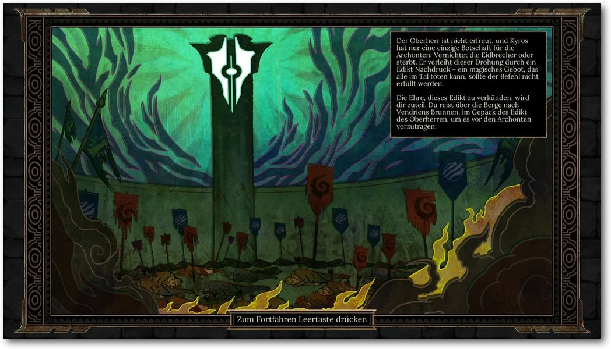
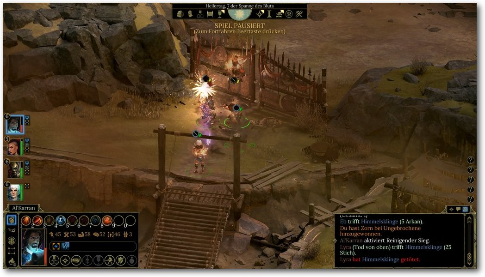

Zur Version ohne Bilder
Der Xfce-Desktop gilt landläufig als minimalistischer und Ressourcen-schonender Vertreter seiner Gattung. Vermutlich kommt er deshalb meist optisch und funktional eher wenig ansprechend vorkonfiguriert daher, um dessen Einsatzfähigkeit auch noch auf besonders schwachbrüstigen Hardwareplattformen zu gewährleisten. Das soll aber nicht darüber hinweg täuschen, dass dieser Desktop durch sein modulares Baukastensystem Stück für Stück in Aussehen und Funktionalität erweitert werden kann. So lässt er sich sehr flexibel an nahezu sämtliche Wünsche und Anforderungen des Nutzers anpassen. Wie das in der Praxis funktioniert, soll dieser Artikel beispielhaft veranschaulichen. (weiterlesen)
Spezielle Gaming-Hardware wie Tastaturen und Mäuse gibt es reichlich. In Sachen Linux-Kompatibilität sieht es in diesem Bereich leider relativ schlecht aus. Die Roccat Kova 2016 hat eine Besonderheit: Es gibt auch unter Linux ein Tool zur Steuerung aller Sondertasten. Ist die Maus also eine Überlegung Wert für den Linux-Gamer? (weiterlesen)
Zum Inhaltsverzeichnis
Ubuntu und Kubuntu 16.10
Automatisierung mit Jenkins 2.0
openSUSE Leap 42.2
Freie Software im Bereich Android
Diashow beim Booten mit Plymouth
Der November im letzten Kernelrückblick
Anleitungen
Xfce-Desktop individuell anpassen
Ansible und WSGI-Applikationen
Scribus in der Praxis – Teil 2
Skripten mit Emacs
Große Dateien übers Netzwerk kopieren
Software
Test: Tyranny
Test: Master of Orion
Test: Superhot
Hardware
Gaming-Maus im Test: Roccat Kova 2016
Community
Rezension: NODE.js
Rezension: Ubuntu 16.04
Magazin
Editorial
Leserbriefe
Veranstaltungen
Konventionen
freiesMagazin-Index 2016
Impressum
Zum Inhaltsverzeichnis
freiesMagazin-Downloads.
Die Grafik zeigt sehr schön, wie freiesMagazin vor allem in den Jahren 2008 und 2009 eine echte Hochzeit erlebt hat. Ab 2011 ging der Trend dann leider immer weiter abwärts. Es gab zwar immer noch einzelne Spitzen, aber wir konnten keine weiteren Leser gewinnen. Da man bei Community-Projekten sehr oft von einer 90-9-1-Regel spricht (d. h. 90% sind passiv, 9% beteiligen sich gelegentlich aktiv und 1% ist der harte, aktive Kern [11]) zeigt dies eben auch, dass bei nachlassendem Leser-Interesse auch die daraus resultierenden Autoren weniger werden. freiesMagazin war eben immer ein Projekt, welches von der Community für die Community gestaltet wurde. Im Hintergrund werkelten eben nur ein „paar“ Menschen, die dem Ganzen eine Form nach außen verschafften, die berühmten 1% – zu denen aber auch einige Autoren gehören, die viele Jahre lang immer wieder etwas zu freiesMagazin beigetragen haben (siehe unten). Wenn man einmal die Summe über alle Downloads (ohne Dezember 2016), natürlich über die letzten zehn Jahre, rechnet, kommen beachtliche Zahlen zustande (jeweils nur für die Erstdownloads im Erscheinungsmonat): 996.469 PDF-Downloads seit März 2016 (d. h. wir knacken mit der Dezember-Ausgabe die Millionenmarke, wohoo! :)), 318.258 HTML-Ansichten seit Januar 2008 und 75.952 EPUB-Downloads seit Januar 2012. Die Zahlen können sich also sehen lassen. Natürlich haben wir mit den Downloads nicht eine Millionen Menschen erreicht – zumindest nicht direkt über unsere Seite. Die Hoffnung ist ja immer, dass das Magazin auch separat weitergegeben und verteilt wurde, um ein Interesse für Linux und Open Source zu wecken. Wieso aber so viele Downloads? Sprich, was wurde denn überhaupt heruntergeladen? Die Gesamtzahl aller PDF-Seiten für die 130 Ausgaben (diesmal inklusive der aktuellen Dezemberausgabe) ist 5571. Damit kann man der Dunkler-Turm-Reihe von Stephen King noch nicht ganz das Wasser reichen, aber man hätte schon eine Weile zu tun, dies alles am Stück zu lesen. Von der Seitenzahl muss man natürlich wiederkehrende Dinge wie das Impressum oder die Titelseite abziehen, dennoch bleibt eine Zahl über der 5000 stehen. Auf diesen über 5000 Seiten wurden insgesamt 1177 Artikel und 78 News (ja, in den Anfängen des Magazins gab es noch regelmäßig Nachrichten zu lesen) abgedruckt. Verfasst wurden diese Artikel von ca. 200 Autoren. Warum nur circa? Hier hat unsere Datenbank einen kleinen „Fehler“ und zählt „Vorname Nachname“ und „Nachname, Vorname“ als zwei unterschiedliche Einträge. Das hatte uns bisher nie gestört … Na ja, bis heute eben. Nichtsdestotrotz ist selbst eine Zahl unter 200 immer noch eine erstaunliche Anzahl an Autoren. Die Top-3-Schreiber sind dann auch leicht gefunden: Mit 226 Artikeln führt Dominik Wagenführ (Schreiber dieser Zeilen und Chefredakteur von freiesMagazin) das Feld an, gefolgt von Kernelschreiber Mathias Menzer mit 108 Artikeln, wiederum gefolgt von Jochen Schnelle mit 72 Artikeln, den man zurecht als Bücherwurm bezeichnen kann, da von den 72 Artikeln 53 Buchrezensionen waren. Natürlich soll die Leistung aller anderen Autoren nicht geschmälert werden! Jeder Artikel hat freiesMagazin ein Gesicht gegeben und zu dem gemacht, was es heute ist. Bedanken möchte ich mich abschließend zum einen noch einmal beim freiesMagazin-Team und allen Helfern, die Monat für Monat dazu beigetragen haben, dass das Magazin erstellt wurde. Es waren sehr viele Hände, durch die das Magazin gegangen ist. Ich kenne die genaue Anzahl nicht, schätzungsweise waren aber sicherlich um die 50-60 Personen im Laufe der Jahre im freiesMagazin-Team tätig. Ein besonderer Dank geht dabei an die ursprünglichen Initiatoren bzw. Gestalter des Magazins in den Anfangstagen, darunter vor allem Eva Drud und Marcus Fischer, die ich damals vor ca. neun Jahren beerbt habe. Und mit diesem längsten Editorial in der zehnjährigen Geschichte des Magazins verabschiedet sich die freiesMagazin-Redaktion von Ihnen und wünscht allen Lesern ein schönes Weihnachtsfest, ein gutes Jahr 2017 und insgesamt die besten Wünsche für die Zukunft. Links
[1] https://de.wikipedia.org/wiki/Douglas_Adams
[2] http://www.pro-linux.de/
[3] http://games4linux.de/
[4] https://ikhaya.ubuntuusers.de/
[5] http://d-nb.info/1004344759
[6] http://archivista.ch/freiesmagazinde-archiv.htm
[7] https://www.dguelden.de/magazine/archiv.html
[8] https://github.com/SaschaMester/freiesMagazin
[9] http://www.freiesmagazin.de/yalm
[10] https://github.com/monochromec/fm
[11] https://www.nngroup.com/articles/participation-inequality/
Beitrag teilen Beitrag kommentieren
Zum Inhaltsverzeichnis
Fortschritt der Installation.
Ubuntu 16.10.
Handbrake als Snap-Paket.
Übersichtsseite von Unity.
Ansonsten gibt es keine Änderungen an Unity, die besonders auffällig sind. Der Schwerpunkt der Entwicklung lag wohl vor allem auf Unity 8, welches jetzt als Vorschau zur Verfügung steht. Was man da sieht, gibt aber noch keinen Anlass zur Freude. Der Display-Server Mir verschwendet CPU-Zyklen ohne Ende und hält die CPU-Last (in der Virtuellen Maschine) ständig über fünf Prozent. Der Mauszeiger erscheint doppelt. Um ein Terminal zu öffnen, muss man umständlich sein Passwort eingeben. Es klemmt an allen Ecken und Enden, weiter soll hier aber gar nicht auf Unity 8 eingegangen werden. Der Speicherbedarf von Unity 8 liegt bei etwa 560 MB, also einiges weniger als Unity 7.5.
Display-Manager von Kubuntu.
Viele Verbesserungen flossen außerdem in die Zusammenarbeit mit Wayland ein. Kubuntu bietet eine Plasma-Sitzung unter Wayland zum Ausprobieren an, wenn man die benötigten Komponenten installiert. Wayland scheint weniger Speicher zu benötigen als X11 und läuft flüssiger, allerdings wurde im Test der Mauszeiger doppelt angezeigt und folgte der Maus zu träge. Auch sonst gibt es unter Kubuntu noch etliche Probleme: Die Tastatur war auf Englisch eingestellt, konnte aber nachträglich korrekt geändert werden. Der Videoplayer DragonPlayer funktionierte nicht und er stürzte einfach ab. Gleiches ereilte den Videoplayer mpv im Test. Bis zur nächsten Version sollte man von Wayland wohl eher die Finger lassen. Auch Kubuntu installiert Firefox als Standard-Browser, der genauso eingerichtet ist wie unter Unity. Als Musik-Player ist Amarok 2.8 vorinstalliert, wie schon seit Kubuntu 13.10. KDE PIM mit Kontact ist in Version 16.04 installiert. Außerdem ist LibreOffice vorhanden. Weitere Anwendungen muss man aus den Repositories nachinstallieren, wenn man sie braucht. Der Speicherbedarf ist direkt nach dem Start 390 MB, erhöht sich aber, wenn man die KDE-PIM-Suite (z. B. KMail) startet. Das allerdings ist müßig, denn Akonadi ist falsch konfiguriert und kann nicht starten. Damit sind auch KMail, KOrganizer usw. nicht funktionsfähig.
Installation von Multimedia-Erweiterungen.
Das Thema Flash kann man mittlerweile ganz entspannt sehen. Neuentwicklungen mit Flash sind verpönt, und die Zahl der Webseiten, die Flash einsetzen, sinkt. Das heißt aber natürlich nicht, dass alle Flash-Videos jetzt einfach so verschwinden. Es wird sicher noch viele Jahre lang Flash-Videos im Web geben. Da ist es gut, dass Adobe nun auch das NPAPI-Flash-Plugin weiter pflegen will und es auf denselben Stand wie das PPAPI-Plugin bringt. Aktuell ist es als Betaversion verfügbar. Während die proprietären Webbrowser meist einen eingebauten Flash-Player mitbringen, liefert Ubuntu die freien Webbrowser ohne Flash-Plug-in aus. Da aber zum Beispiel Firefox über GStreamer alles abspielen kann, wofür Plug-ins installiert sind, also auch Flash, ist es auch meist nicht nötig. Wenn eine Webseite explizit das Adobe-Flash-Plug-in benötigt, kann man es mit dem Paket flashplugin-installer installieren. Installiert wird dabei die veraltete Version 11.2, die nur noch Fehlerkorrekturen erhält. Die Betaversion wird also noch ignoriert, wer sie aber testen möchte, kann sie problemlos von der Adobe-Seite herunterladen. In Kubuntu ist dieses Mal alles noch konfuser als sonst. Das Standardprogramm zum Ansehen von PDF-Dateien ist LibreOffice Draw. Das ist eine der unsinnigsten Einstellungen, die ich unter Linux je gesehen habe. Im Gegenzug wurde darauf verzichtet, das Programm Okular zu installieren, das normalerweise der PDF-Betrachter von KDE ist. Beim Abspielen von Videos ist unter KDE die Geschwindigkeit auch weiterhin auch ohne 3-D-Hardware akzeptabel. Amarok ist der Standard-Audioplayer, Dragonplayer der Standard-Videoplayer. Früher wurden auch unter Kubuntu fehlende Plug-ins korrekt nachinstalliert oder waren bereits vorhanden. Das ist auch in der neuen Version nicht mehr der Fall. Amarok und Dragonplayer funktionieren schlicht nicht, wenn die Plug-ins fehlen. Leider scheint auch jegliche Unterstützung für die Nachinstallation zu fehlen. Es bleibt nur die Installation von Hand, wie oben bereits beschrieben.
[1] http://www.pro-linux.de/artikel/2/1853/ubuntu-und-kubuntu-1610.html
[2] http://www.freiesmagazin.de/freiesMagazin-2016-07
[3] https://wiki.ubuntu.com/YakketyYak/ReleaseNotes
[4] http://www.pro-linux.de/news/1/24045/torvalds-verärgert-über-fehler-im-kernel-48.html
[5] http://www.pro-linux.de/news/1/24096/sicherheitslücke-im-linux-kernel-ermöglicht-lokale-rechteausweitung.html
[6] http://www.pro-linux.de/news/1/23452/stallman-zfs-und-linux-unvereinbar.html
[7] https://wiki.ubuntu.com/OpenStack/CloudArchive
[8] https://wiki.ubuntu.com/YakketyYak/ReleaseNotes/UbuntuKylin
[9] https://wiki.ubuntu.com/YakketyYak/ReleaseNotes/Kubuntu
[10] https://wiki.ubuntu.com/YakketyYak/ReleaseNotes/Lubuntu
[11] https://wiki.ubuntu.com/YakketyYak/ReleaseNotes/UbuntuGNOME
[12] https://xubuntu.org/news/xubuntu-16-10-release
[13] https://ubuntu-mate.org/blog/ubuntu-mate-yakkety-final-release/
[14] https://wiki.ubuntu.com/YakketyYak/ReleaseNotes/UbuntuStudio
[15] https://www.ubuntu.com/desktop/snappy
[16] http://snapcraft.io/
[17] https://developer.ubuntu.com/en/snappy/support/faq/
[18] https://github.com/ubuntu/snappy-playpen
[19] http://flatpak.org/
[20] https://userbase.kde.org/KDE_System_Administration/Kiosk/Introduction
Beitrag teilen Beitrag kommentieren
Zum Inhaltsverzeichnis
Übersicht über die konfigurierten Jenkins-Jobs.
Jenkins 1.x hatte einige Nachteile, die in Jenkins 2.0 ausgemerzt werden sollten. Ein Punkt war, dass die initiale Konfiguration von Jenkins durchaus zeitaufwendig und wenig intuitiv war. In der Standard-Installation war der Server nämlich komplett offen und frei zugänglich. So konnte jeder ohne irgendeine Authentifizierung Jobs anlegen und auf dem Server laufen lassen. Die Absicherung mit Vergabe von passenden Rechten war für Jenkins-Einsteiger eher schwierig und umständlich, was den Einstieg deutlich erschwerte. Ein weiterer wesentlicher Nachteil von den oben vorgestellten „Free Style“-Jenkins-Jobs ist, dass die Konfiguration der Jobs vollständig auf dem Jenkins-Master gespeichert ist. Die Jobs sind aber in der Regel abhängig von dem Code, der im Source-Code-Management-System hinterlegt ist. Einzelne Teile der Job-Konfiguration ließen sich zwar im Repository speichern und ausführen, aber eben nicht alles und schön war dies auch nicht sonderlich. Das Problem ist insbesondere, dass keine Versionierung erfolgte und man über die Zeit gegebenenfalls keine älteren Stände mittels Jenkins bauen konnte, außer, wenn die alten Jobs gesichert wurden. Das war in der Regel wenig komfortabel und wurde über die Zeit meist unübersichtlich. Außerdem war auch die Konfiguration von Jenkins-Jobs mit steigender Komplexität von Projekten immer aufwendiger. Wenn man etwa in einem Projekt mehrere Branches hatte, bei denen die gleichen Jobs mit einigen Änderungen ausgeführt werden sollten, dann musste der Job mehrfach kopiert werden und bei Änderungen, die jeden Job betrafen, musste jeder Job einzeln angepasst werden. Das machte die Jenkins-Konfiguration weder einfach, noch machte es Spaß. Diese drei Punkte waren die wesentlichen Punkte, die in Jenkins 2.0 verbessert werden sollten.
Pipeline-Syntax im Menü.
Dort findet sich ein Drop-Down-Menü, in dem verschiedene Build-Schritte und Aktionen über diverse Formulare zusammengeklickt werden können. Dies ist sehr oft sehr hilfreich, weil man auch nach längeren Arbeiten mit der Pipeline-Syntax sich diese nicht so einfach einprägen kann. Das liegt auch daran, dass viele Plug-ins ihre eigenen Befehle und Parameter mitbringen, die man sich fast unmöglich merken kann. Ansonsten gilt, dass der Code in Groovy geschrieben wird und dessen Sprachelemente ebenfalls genutzt werden können.
Der Snippet Generator ermöglicht die Generierung von Groovy-Code.
Interessant werden Pipelines, wenn mehrere Stages existieren, welche die Ausführung der Pipeline sinnvoll gruppieren:
Ansicht der Stages der Pipeline.
Je nachdem wie intensiv man Jenkins nutzt, kann es also durchaus sein, dass sich noch nicht alle bisherigen Jobs in Pipelines umsetzen lassen. Da muss man wohl noch auf einige weitere Features und Verbesserungen warten. Pipelines bilden trotzdem die wesentliche Grundlage für die zukünftige Nutzung von Jenkins. Sie sind nicht unbedingt einfach zu schreiben, lassen sich aber durch die Nutzung des Snippet-Generators trotzdem mit vielen kleinen Schritten schreiben. Pipelines sind auch wesentlicher Bestandteil der nächsten drei Funktionen, die vorgestellt werden.
Pull-Request-Ansicht im GitHub-Projekt.
Die Übersicht über den Status der Branches in einem Repository.
Für den alltäglichen Betrieb stößt man bei Blue Ocean schnell an seine Grenzen, da vieles nicht möglich ist oder noch nicht zur Verfügung steht. Allem voran lassen sich keine administrativen Dinge erledigen. Das betrifft nicht nur die Jenkins-Server-Konfiguration, sondern auch die Konfiguration und das Anlegen von Jobs. In Zukunft werden in Blue Ocean mehr und mehr Funktionen einfließen – und dabei nicht nur Funktionen der altbewährten Oberfläche. Später sollen sich Pipelines auch einfacher und hübscher über Blue Oceans anlegen lassen. Bis es allerdings soweit ist, dürfte es noch einige Zeit dauern. Immerhin läuft Blue Ocean unter einer eigenen URL und lässt sich parallel zum Standard installieren und nutzen.
Pipeline in Blue Ocean mit parallelen Ausführungen.
[1] https://jenkins.io/
[2] http://www.freiesmagazin.de/freiesMagazin-2013-01
[3] https://about.gitlab.com/gitlab-ci/
[4] https://travis-ci.org/
Beitrag teilen Beitrag kommentieren
Zum Inhaltsverzeichnis
Start der Installation.
Zusammenfassung der Installation.
Plasmas Sperrbildschirm.
Der GNOME-Desktop.
Allgemein fällt allerdings in openSUSE auf, dass ähnlich KDEs Plasma auch GNOME weitgehend unverändert blieb. Abgesehen von einem veränderten Hintergrund und der Beigabe der eigenen Anwendungen wurde die Umgebung nur wenig verändert und gleicht weitgehend dem Standard, der seitens GNOME ausgeliefert wird. Das hat für die Entwickler der Distribution den Vorteil, dass sie nicht jede Version anpassen müssen und ein System ausliefern können, das den Wünschen der Desktop-Macher entspricht.
Der Xfce-Desktop.

Der LXDE-Desktop.
Der Enlightenment-Desktop.
Eine weitere Besonderheit der aktuellen Version von openSUSE stellt die Internationalisierung dar. So ist openSUSE Leap 42.2 die erste Version, die Weblate [7] zur Koordination der Übersetzung in die mittlerweile mehr als 50 Sprachen verwendet. Der Dienst erlaubt jedem Nutzer, am Übersetzungsprozess teilzunehmen und macht es unter anderem möglich, die Übersetzungen der Gemeinschaftsvariante mit denen für SLE besser zu koordinieren.
Yast: Softwareauswahl in der Konsole.
Das Werkzeug wurde gegenüber der letzten Version weiter ausgebaut und trägt nun die Versionsnummer 3.1.206. Eine der Neuerungen stellt die Implementierung von „yast2-alternatives“ dar – eines neuen Moduls, um das Alternatives-System von openSUSE zu regeln. Ein weiteres neues Modul ist „yast2-vpnb, das zu Konfiguration und von VPN-Gateways und Clients genutzt werden kann. „yast2-auth-client“ ist ein weiteres Modul, das in openSUSE Leap 42.2 neu hinzugefügt wurde. Die Lösung wurde entwickelt, um eine zentrale System-Authentifizierung zu konfigurieren. Neu in Yast sind zudem Verbesserungen des Bootloader-Managements und eine verbesserte Konfiguration des Passwortschutzes und der Sicherheit. „yast2-firewall“ beinhaltet jetzt beispielsweise eine komplette Unterstützung für firewalld, zusätzlich zur schon existierenden SuSEFirewall2. Wie sich für eine Distribution gehört, die ein Anspruch auf eine vollwertige Serverinstallation hat, liefert auch openSUSE eine Vielzahl an Servern und Diensten aus. Die meisten Anwendungen sind dabei bereits vorkonfiguriert und können prinzipiell ohne eine nachträgliche Konfiguration wenigstens gestartet werden. Besonders erfreulich für passionierte Heimnutzer und angehende Administratoren dürften wieder die vielen Helfer in YaST sein. So hat der Hersteller im Lieferumfang des Paketes YaST-Module für fast alle Server. Während manche Module nur marginale Einstellungen ermöglichen, erlauben andere wiederum eine fast vollständige Konfiguration.
Yast: Snapshotmanagement mittels Snapper.
[1] http://www.freiesmagazin.de/freiesMagazin-2016-01
[2] http://www.pro-linux.de/artikel/2/1858/opensuse-leap-422.html
[3] https://www.opensuse.org/
[4] http://www.pro-linux.de/news/1/22456/opensuse-auf-identitätssuche.html
[5] http://www.freiesmagazin.de/freiesMagazin-2009-03
[6] https://doc.opensuse.org/release-notes/x86_64/openSUSE/Leap/42.2/
[7] https://l10n.opensuse.org/
Beitrag teilen Beitrag kommentieren
Zum Inhaltsverzeichnis
[1] https://plasma-mobile.org/
[2] https://www.ubuntu.com/phone
[3] https://sailfishos.org/
[4] https://de.wikipedia.org/wiki/Android_(Betriebssystem)
[5] https://www.gnu.org/philosophy/android-and-users-freedom.de.html
[6] https://www.beneaththewaves.net/Projects/Motorola_Is_Listening.html
[7] https://en.wikipedia.org/wiki/Carrier_IQ#Rootkit_discovery_and_media_attention
[8] https://source.android.com/
[9] http://arstechnica.com/gadgets/2013/10/googles-iron-grip-on-android-controlling-open-source-by-any-means-necessary/
[10] https://microg.org
[11] https://microg.org/fdroid.html
[12] https://www.cyanogenmod.org
[13] https://en.wikipedia.org/wiki/CyanogenMod
[14] http://www.replicant.us/about.php#replicant-different-cyanogenmod
[15] http://projects.goldelico.com/p/gta04-main/
[16] https://en.wikipedia.org/wiki/Replicant_(operating_system)
[17] http://www.replicant.us/about.php#only-free-software
[18] http://www.replicant.us/supported-devices.php
[19] https://developer.android.com/distribute/monetize/ads.html
[20] http://www.heise.de/ct/ausgabe/2015-9-Smartphone-Schnuefflern-auf-der-Spur-2586801.html
[21] https://fsfe.org/about/basics/freesoftware.de.html
[22] https://f-droid.org/
[23] https://de.wikipedia.org/wiki/F-Droid
[24] https://fossdroid.com
[25] https://f-droid.org/FDroid.apk
[26] https://en.wikipedia.org/wiki/F-Droid
[27] https://de.wikipedia.org/wiki/Ubuntu_Touch
[28] https://www.ubuntu.com/phone/devices
[29] https://wiki.ubuntu.com/Touch/Devices
[30] http://www.freiesmagazin.de/freiesMagazin-2013-11/
[31] https://dot.kde.org/2015/07/25/plasma-mobile-free-mobile-platform
[32] https://en.wikipedia.org/wiki/Sailfish_OS
Beitrag teilen Beitrag kommentieren
Zum Inhaltsverzeichnis
[1] https://www.freedesktop.org/wiki/Software/Plymouth/
[2] https://www.freedesktop.org/wiki/Software/Plymouth/Scripts/
[3] http://www.freiesmagazin.de/freiesMagazin-2016-09
Beitrag teilen Beitrag kommentieren
Zum Inhaltsverzeichnis
ASCII-Art zu xfs-reflink.
Dies sind letztlich nur kleine Ausschnitte dessen, was Linux 4.9 bringen wird. Eine gute Übersicht wird bis zur Veröffentlichung von Linux 4.9 auch der Artikel „Die Neuerungen von Linux 4.9“ auf Heise Online [9] liefern, der bis dahin noch um weitere Neuerungen ergänzt werden dürfte.
[1] https://lkml.org/lkml/2016/11/5/157
[2] https://lkml.org/lkml/2016/11/13/207
[3] https://lkml.org/lkml/2016/11/20/153
[4] https://de.wikipedia.org/wiki/Berkeley_Paket_Filter
[5] https://lkml.org/lkml/2016/11/27/121
[6] https://de.wikipedia.org/wiki/Project_Ara
[7] https://en.wikipedia.org/wiki/UniPro
[8] https://de.wikipedia.org/wiki/Copy-On-Write
[9] http://heise.de/-3351436
[10] http://www.freiesmagazin.de/freiesMagazin-2015-07
[11] https://de.wikipedia.org/wiki/Pixel_(Google)
[12] http://www.pro-linux.de/-0h215e7f
[13] https://de.wikipedia.org/wiki/ECryptfs
[14] http://www.freiesmagazin.de/freiesMagazin-2008-04
[15] http://www.freiesmagazin.de/freiesMagazin-2011-09
[16] https://kernel.org
[17] http://blog.getpelican.com/
[18] https://git.zx2c4.com/cgit/about/
[19] http://www.pro-linux.de/nachrichten/
[20] https://www.heise.de/thema/Kernel_Log
Beitrag teilen Beitrag kommentieren
Zum Inhaltsverzeichnis
Die Anfasser der Leiste.
Sind diese nicht sichtbar, so ist die Leiste gegen versehentliche Lageänderung gesperrt. Entsperren geschieht durch Rechtsklick auf einen freien Bereich der Leiste. Aus dem dann erscheinenden Menü wählt man „Leiste -> Leisteneinstellungen -> Anzeige -> Leiste sperren“ und entfernt dort das Häkchen.
Leisteneinstellungen/Anzeige.
Dort kann man auch die gewünschten Abmessungen der Leiste einstellen. Nützlich sind die „Leiste automatisch verbergen“-Optionen. Diesbezüglich neu in Xfce 4.12 ist die Option „intelligent“. Sie bewirkt, dass die Leiste erst dann verschwindet wenn ihr ein Fenster zu nahe kommt. So ist die Leiste meist sichtbar, schafft aber im Bedarfsfall mehr Nutzfläche auf dem Desktop und bleibt dennoch stets erreichbar, indem man mit dem Mauszeiger an den Rand des Desktops stößt. Möchte man die Leiste dagegen senkrecht anordnen, so braucht man nur den Modus entsprechend umstellen. Der dritte Modus Namens „Schreibtischleiste“ bewirkt zwar ebenfalls die senkrechte Anordnung der Leiste, die Anordnung der Plug-ins darin geschieht dann aber waagerecht. Um diese Änderung festzustellen bedarf es daher mindestens einer Erhöhung der Anzahl der Zeilen auf 2. Hinter dem nächsten Reiter der Leisteneinstellungen „Erscheinungsbild“, kann man durch Reduzierung des Alpha-Kanals auf 0 für deren vollständige Transparenz sorgen. Reduziert man nun noch mittels Schieberegler die Deckkraft für das Verlassen der Leiste auf z. B. 90%, so wird das Betreten dieser visuell hervorgehoben, ihre Sichtbarkeit bleibt dadurch aber weitestgehend erhalten. Natürlich hängt die Sichtbarkeit der darin platzierten Icons und Schrift stark von dem gewählten Hintergrundbild ab, weshalb sich nicht jedes gleichermaßen gut eignet, dafür integrieren sich die Leisten nun aber besonders stimmig in den Desktop. Zur Verbesserung deren Sichtbarkeit kann man aber weitere Änderungen an den Einstellungen vornehmen, z. B. einen anderen Systemstil wählen, eine andere Deckfarbe für die Leiste wählen, oder ein eigenes Hintergrundbild für die Leiste.
Leisteneinstellungen/Erscheinungsbild.
Einstellungen/Benachrichtigungen anpassen.
Whiskermenu mit Button für Einstellungen.
Dazu muss ggf. noch das entsprechende Paket xfce-extra/xfce4-whiskermenu-plugin über die Paketverwaltung nachinstalliert werden. Dann öffnet man „Leiste -> Leisteneinstellungen -> Leiste -> Objekte“ klickt auf das „+“-Symbol neben den Objekten, woraufhin sich ein weiteres Fenster öffnet, in dem man zur Leiste hinzuzufügende Objekte auswählen kann. Um die Leiste wie im Screenshot aussehen zu lassen, würde man folgende Elemente hinzufügen: Whisker-Menü (extern1), Schreibtisch anzeigen, Arbeitsflächenumschalter, Fenstermenü, Fensterknöpfe, Trennelement, Lautstärkeregler (extern2), Energieverwaltungserweiterung (extern3), Zwischenablage (extern4), Benachrichtigungsfläche (extern5), Orage-Uhr (extern6), Aktionsknöpfe (extern7). Die eventuelle Kennzeichnung von (extern) hinter den Objekten bedeutet, dass dieses erst durch das Vorhandensein eines separaten Paketes verfügbar wird. Zur leichteren Zuordnung der englischen Paketnamen dient der folgende Index:
Leisteneinstellungen/Objekte/+Elemente
Nun ordnet man die Objekte in der gewünschten oder gezeigten Reihenfolge an und entfernt gleichzeitig überflüssige oder unerwünschte Komponenten. Anschließend kann man noch die Eigenschaften jedes dieser Objekte separat an seine Wünsche anpassen. Meist indem man per Rechtsklick dessen Eigenschaften-Dialog aufruft. So wurden z. B. im Whiskermenu unter „Verhalten“ alle Haken entfernt, um das Suchfeld nach oben zu rücken und die Kategorien nach rechts zu verschieben. Tippt man nun im Suchfeld einen Programmnamen für dessen Aufruf ein, so taucht dieser während seiner Vervollständigung näher an der Eingabezeile auf. Das wirkt insgesamt ergonomischer, wenn das Whiskermenu unten angeordnet ist. Selbstverständlich kann man im Suchfeld auch gleich Befehle eingeben, wie z. B. gksu thunar, um den Dateimanager Thunar im Root-Modus zu öffnen. Das zweite Symbol heißt „Schreibtisch Anzeigen“ und erklärt sich von selbst. Beim dritten Symbol von links, den „Virtuellen Desktops“, kann man in dessen Eigenschaften-Dialog die Anzahl auf 4 und die Anzahl der Zeilen auf 2 erhöhen, um eine quadratische Anordnung zu erhalten. Das vierte Symbol nennt sich „Fenstermenü“ und öffnet mit einem Klick auf die linke Maustaste eine Liste der geöffneten Programme. Bei gesetzten Häkchen „Arbeitsflächennamen anzeigen“ und „Fenster aller Arbeitsflächen anzeigen“ erhält man einen schnellen Überblick über sämtliche geöffneten Programme und deren Verteilung über die vorhandenen virtuellen Desktops. Dies kann eine sinnvolle Ergänzung zur Einstellung des nun folgenden Symbols „Fensterknöpfe“ darstellen, z. B. dann, wenn man in dessen Einstelldialog die Funktion „Fenster aller Arbeitsflächen oder Anzeigebereiche anzeigen“ abgewählt hat. Dann sieht man in den Fensterknöpfen ausschließlich die geöffneten Programme des aktuell angezeigten Desktops, hat aber durch einen Klick auf das davor angeordnete Fenstermenü recht einfach alle geöffneten Programme im Überblick und Direktzugriff. Nach den Fensterknöpfen folgt ein durchsichtig und sich ausdehnend gestaltetes Trennelement, um Platz für die vorigen Fensterknöpfe zu reservieren, bis zum Beginn des nachfolgenden Lautsprecher-Symbols. Dieses erscheint durch das Platzieren des Objektes „Lautstärkeregler“. Per Rechtsklick erreicht man den Sound-Mixer mit seinen vielfältigen Einstellmöglichkeiten. Per Linksklick ändert man die Lautstärke. Möchte man dagegen die Lautstärke über eventuell vorhandene Funktionstasten der Tastatur steuern, diese aber keine Wirkung zeigen, so mangelt es je nach systemseitig verwendeten Sound-System meist nur an der Installation eines dieser Pakete: xfce4-volumed oder xfce4-pulseaudio-plugin. Das nächste Symbol, die Energieverwaltung, bietet vielfältige Einstellmöglichkeiten per Dialog. Besonders die darüber schnell zu erreichende Option „Präsentationsmodus“ ist sehr nützlich, um z. B. bei Präsentationen oder beim Betrachten von Filmen zu verhindern, dass sich der Bildschirmschoner oder die Bildschirmsperre aktiviert.
Schnellzugriff auf Präsentationsmodus.
Darauf folgt die Zwischenablage, die ebenfalls einige nützliche Einstelloptionen beinhaltet, die über den normalen Funktionsumfang einfacherer Zwischenspeicher deutlich hinausgehen. Danach platziert ist die Benachrichtigungsfläche, in die sich andere Programme einklinken können, um dort Benachrichtigungsymbole erscheinen zu lassen, wie z. B. eine aktivierte WLAN-Verbindung via Netzwerk-Manager-Applet. Es folgt die Orage-Uhr mit ihrem flexiblen Einstellungsdialog. Dort kann man deren Vorder- und Hintergrund-Farbe separat setzen, um sie bestmöglich an jedes noch so exotisch gewähltes Farbschema der Leiste, gut sichtbar anpassen zu können. Um z. B. die angezeigte Zeit auf Stunden und Minuten zu beschränken, ersetzt man einfach im Dialog unter Zeile 1 die Werte durch: „%H:%M“ Eine ergänzende Datumsanzeige die nur per Mouse-Over-Effekt erscheint, wird im Feld „Kurzhilfe“ wunschgemäß definiert, z. B. durch die Eingabe von „%A, %d. %B %Y (KW %V)“. Und last but not least, die Aktionsknöpfe. Deren Aussehen wird zum einen vom gewählten Farbschema unter „Einstellungen -> Erscheinungsbild -> Symbole“ bestimmt, zum anderen über die getroffene Auswahl in deren Einstelldialog. Ist hierbei unter „Erscheinungsbild -> Sitzungsmenü“ gewählt, sind keine Symbole sichtbar.
Volltextsuche mit Tracker.
[1] http://www.xfce.org/
[2] http://www.pro-linux.de/umfragen/2/300/welchen-desktop-nutzen-sie-ueberwiegend.html
[3] http://www.xfce.org/about/tour
[4] https://de.wikipedia.org/wiki/Compositing
[5] http://goodies.xfce.org/projects/applications/xfdashboard/start
[6] http://docs.xfce.org/xfce/thunar/archive
[7] http://docs.xfce.org/xfce/thunar/media-tags
[8] http://docs.xfce.org/xfce/thunar/custom-actions
[9] https://github.com/alols/xcape
Beitrag teilen Beitrag kommentieren
Zum Inhaltsverzeichnis
Der Virtuelle Server ist fertig erstellt.
Ob Ansible den in der Gruppe httpbin eingestellten Host auch wirklich ansprechen kann, lässt sich mit einem Ping einfach überprüfen:
Httpbin ist fertig aufgesetzt und im Netz verfügbar.
Die fertige Datei: httpbin.yml.
[1] http://www.apress.com/de/book/9781484216606
[2] https://puppet.com/
[3] https://www.chef.io/chef/
[4] https://saltstack.com/
[5] https://shop.heise.de/katalog/baukastensysteme-dedbad
[6] https://www.ansible.com/
[7] http://www.linux-magazin.de/Ausgaben/2016/01/Puppet-vs.-Ansible
[8] http://www.it-administrator.de/magazin/heftarchiv/artikel/179104.html
[9] https://docs.ansible.com/ansible/intro_installation.html
[10] http://httpbin.org/
[11] https://www.python.org/dev/peps/pep-3333/
[12] http://www.freiesmagazin.de/freiesMagazin-2011-02
[13] https://packages.qa.debian.org/h/httpbin.html
[14] https://www.digitalocean.com/
[15] https://serversforhackers.com/video/ansible-installation-and-basics
[16] http://docs.ansible.com/ansible/modules_by_category.htm
[17] http://yaml.org/
[18] http://jinja.pocoo.org/docs/dev/
[19] https://github.com/antarctica/ansible-apache
[20] https://debops.org/
[21] http://www.it-administrator.de/magazin/heftarchiv/artikel/204116.html
Beitrag teilen Beitrag kommentieren
Zum Inhaltsverzeichnis
Die Bearbeitungsfunktionen für eine Tabelle.
Simpel: Das Umwandeln einer Seite in einer Musterseite.
Das Einfügen der Seitennummerierung in ein Scribus-Dokument.
Der Aktionsverlauf für ein markiertes Objekt.
Die Funktion Suchen und Ersetzen.
[1] http://www.freiesmagazin.de/freiesmagazin-2016-11/
Beitrag teilen Beitrag kommentieren
Zum Inhaltsverzeichnis
[1] http://www.freiesmagazin.de/freiesMagazin-2016-07
[2] https://www.gnu.org/software/emacs/manual/elisp.html
[3] http://stackoverflow.com/a/6259330/2999892
[4] http://www.lunaryorn.com/posts/emacs-script-pitfalls.html
[5] https://www.emacswiki.org/emacs/BatchMode
[6] https://web.archive.org/web/20160304023917/http://nic.ferrier.me.uk/blog/2012_07/tips-and-tricks-for-emacslisp
Beitrag teilen Beitrag kommentieren
Zum Inhaltsverzeichnis
Dauer für die Übertragung einer 15 GB großen Datei und einer 30 GB großen Sparse-Datei (max. 130 GB).
Dauer für die Übertragung einer 60 GB großen Datei.
Dauer für die Übertragung einer 150 GB großen Datei.

Dauer für die Übertragung einer 0 Byte großen Sparse-Datei (max. 150 GB).
Abschließend wurde die Übertragungsdauer von neun verschieden großen Images (acht Instanzen) gemessen. Die einzelnen Images hatten folgende Größen (belegt/maximal):
Gesamtdauer für die Übertragung von neun verschieden großen Images.
[1] http://archivista.ch/
[2] https://www.linuxday.at/
Beitrag teilen Beitrag kommentieren
Zum Inhaltsverzeichnis
Mit dieser schnöden Texteinblendung erzählt Tyranny die Einstiegsgeschichte.
Die Charakterstellung lässt viele Einstellmöglichkeiten zu (hier die primäre Kompetenz).
Im letzten Schritt wählt man den Verlauf des Eroberungszuges von Kyros. Entweder entscheidet man sich für einen der drei vorgefertigten Geschichtsverläufe oder man bestimmt selbst. In letzterem Fall muss man auf der Übersichtskarte wichtige Entscheidungen treffen. Sind alle Bestimmungen unter Dach und Fach, geht es los. Viel mehr soll an dieser Stelle nicht verraten werden, sodass man die Geschichte selbst erleben kann. Zeit also, das Gameplay des Offline-Rollenspiels näher zu beleuchten.
Kameradin Lyra wird in die Luft geworfen und schießt Pfeile auf den Feind.
Alle Gefährten-Komboskills sind toll anzuschauen und machen Spaß auszuführen, nur leider ist die Wegfindung manchmal ein Problem. Nicht selten ist es passiert, dass Lyra nicht in die Luft geschleudert werden konnte, weil ein Gegner dazwischen stand. In diesem Fall bleiben die Charaktere einfach stehen und nichts passiert – und das ganze Team selbst stirbt, weil die Feinde einen ohne Gegenwehr überrennen.
Mehr Skills dank Reputation: Gunst oder Zorn geben weitere Fähigkeiten.
Dieses „Reputation“ genannte System kommt auch mit Gruppierungen zum Zuge: Je nachdem, ob man einer Gruppierung positiv oder negativ gegenüber steht, darf man aus neuen Fähigkeiten auswählen, die manchmal passiv, manchmal aktiv sind. Diese Art der zusätzlichen Fähigkeiten macht das Rollenspiel abwechslungsreicher und erhöht den hohen Wiederspielwert, den Tyranny dank der Entscheidungsfreiheit ohnehin schon mit sich bringt. Im Übrigen erhöht man die Attribute der Waffen- oder Magie-Skills nicht einfach per Knopfdruck, diese steigen mit jedem Gebrauch von alleine an. Damit sind die Helden in Tyranny weniger auf eine Klasse fixiert.
Das Edikt der Stürme wird erklärt.
Oh, wurde schon erwähnt, dass das Spiel damit beginnt, dass man ein solches Edikt als Bote des Herrschers in die Welt bringt, nur um es anschließend wieder zu bezwingen? Damit soll verdeutlicht werden, dass die noch nicht aufgehobenen Edikte ein ständiger Begleiter sind und sich wie ein roter Faden durch die böse Welt von Kyros ziehen.
Der Turm dient auch der Erholung.
Anders als in Pillars of Eternity hat man nicht nur ein Zuhause, sondern kann nach und nach gleich fünf Türme einnehmen. Einmal im Besitz, darf man NPCs in das Turmlager einladen, die anhand von eingesammelten Ressourcen wiederum Gegenstände herstellen oder Tränke brauen. Ein Turm dient auch als Übernachtungsstätte. Nur wer ausgeruht ist, darf die mächtigsten Skills anwenden. Ein vertieftes Crafting, womit man selbst an einem Holztisch die Gegenstände herstellt, gibt es nicht. Überhaupt sind die Items eine Schwäche von Tyranny, denn so wirklich Spaß macht es nicht, auf Itemjagd zu gehen. Dafür sind die Items nicht abwechslungsreich genug.
Volles Inventar! Die Auswahl ist aber eher langweilig.
[1] https://www.tyrannygame.com/
[2] https://games4linux.de/test-tyranny-wie-gut-spielt-sich-das-boese/
Beitrag teilen Beitrag kommentieren
Zum Inhaltsverzeichnis
Der Sender GNN präsentiert die Nachrichten der Galaxie.
Master of Orion bietet die Wahl zwischen zehn Rassen (mit DLC elf).
Hierbei fühlt sich der neueste Teil der Serie wirklich sehr klassisch und wohl vertraut an. Nachdem man alle Aktionen ausgeführt hat, wird die Runde beendet und die gegnerischen Rassen sind am Zug. Gerade zu Beginn des Spiels passiert hier abseits der Entdeckung neuer Sternensysteme nicht sonderlich viel. Aufgelockert wird das anfängliche „Weiterklicken“ durch immer wieder auftretende Piratenangriffe und das Bombardieren der entsprechenden Basen. Hervorzuheben ist, dass das Verwalten des eigenen Reichs absolut sauber und intuitiv umsetzbar ist. Man findet sich sehr schnell zurecht und alle wichtigen Funktionen sind schnell zu erreichen. Gerade die Planetenverwaltung, welche auch automatisierbar ist, ist wirklich einfach und gelungen. Die Zuteilung von Bewohnern auf einzelne Bereiche wie Nahrung, Industrie und Forschung ist – wie in den Vorgängern – sehr einfach gehalten.
Die Planetenverwaltung geht gut von der Hand.
Spätestens bei Kontakt mit fremden Rassen wird das Spiel interessant. Nun geht es darum, die anderen Weltraumreiche zu übertrumpfen. Hier hat man die Möglichkeit, auf verschiedene Siegbedingungen hinzuarbeiten. Neben einem reinen militärischen Sieg ist es beispielsweise auch möglich, einen ökologischen oder technologischen Sieg zu erringen. Diplomatisch wird der genretypische Standard geboten. Es ist beispielsweise möglich, Technologien zu tauschen, Forschungsabkommen zu schließen oder einen Nichtangriffspakt zu verhandeln. Hin und wieder melden sich die Herrscher der fremden Rassen auch beim Spieler, wenn sie zum Beispiel Technologien tauschen möchten oder sich empört darüber zeigen, dass der Spieler mit einer verfeindeten Rasse handelt. Falls die Diplomatie einmal an ihre Grenzen gelangt, kann es zu einem intergalaktischen Krieg kommen. Hier ist eine der größten Änderungen zum Original festzustellen. Das neueste Master of Orion bietet keine rundenbasierenden Kämpfe mehr. Als alter Serienveteran muss man das erst einmal verkraften und nicht wenige Spieler haben sich schon während der Early-Access-Phase darüber beschwert. Wem der Echtzeitmodus nicht zusagt, kann die einzelnen Kämpfe auch automatisch berechnen lassen.
Die Diplomatie sieht wirklich gut aus.
[1] http://eu.wargaming.net/
[2] http://www.ngdstudios.com/
[3] https://games4linux.de/test-master-of-orion-conquer-the-stars/
[4] https://de.wikipedia.org/wiki/Globalstrategiespiel
[5] http://www.stellarisgame.com/
Beitrag teilen Beitrag kommentieren
Zum Inhaltsverzeichnis
Das OS piOS ist das Menü im Spiel.
Dieser schickt dem Spieler daraufhin einen Crack, wodurch man sich in die Firmenwebsite einloggen und dadurch auch spielen kann. Dadurch kann man sich den Weg durch die unterschiedlichen Level das Spiels bahnen. Tiefer auf die Story eingegangen werden soll an dieser Stelle nicht, vor allem um mögliche Spoiler zu vermeiden. Der Aufmacher ist zwar eine nette Idee, um ein Spiel zu beginnen, jedoch könnte man den Entwicklern auch vorwerfen, dass sie sich nicht um eine richtige Handlung kümmern wollten. Leider war die Story auch nicht wirklich ansprechend. In unterschiedlichen Social-Media-Kanälen wird darüber philosophiert, wie denn die Handlung des Spiels genau sein könnte, jedoch spricht sie nicht jeden an und kann nicht wie etwa ein „Life is Strange“ (siehe freiesMagazin 11/2016 [3]) zum Nachdenken anregen. Die magere Handlung mag eventuell durch den starken Fokus auf das Gameplay entstanden sein. Falls dies zutrifft, hätte man die Handlung aber auch komplett weglassen können. Ganz nach dem Motto: Lieber gar keine Handlung, dafür aber mehr andere Inhalte, wie etwa viel mehr Levels.
Knapp ausgewichen.
Trotz der Zeitlupe und der Vermutung, Superhot würde sich langsam spielen, fühlt sich das Spiel dennoch schnell an. Es ist erstaunlich, wie hier beides vereint wird. Bei Kämpfen mit den Gegnern hat man immer nur eine Chance. Stirbt man bei einem Versuch, die Feinde zu neutralisieren, fängt man das Level von vorne an. Störend ist hierbei nur, dass es teilweise ein wenig schwierig ist, die eigene Hitbox zu erkennen. Man sieht Kugeln ganz knapp an einem vorbeigehen, die dann einen dann doch leider treffen. Auch fehlt ein Ducken-Feature, was in manchen Situationen ein wenig mehr Möglichkeiten eröffnen würde. Der Hauptkritikpunkt ist aber, dass es einfach viel zu wenig Level gibt. Auch wenn sich beim Beenden der Kampagne der Endless-Modus und die Challenges freischalten, spielt man dennoch fast immer auf den Karten, welche bereits in der Story gespielt wurden. Gerade so ein Spiel lebt von zahl- und abwechslungsreichen Levels. Die Anzahl ist einfach viel zu gering, wodurch das Spiel in circa zwei Stunden durchgespielt ist. Die Hoffnung besteht, dass sich dies mit den kommenden kostenlosen DLC ändert. Die Mechanik ist super, keine Frage, jedoch braucht das Spiel mehr Inhalt in Form von mehr Levels und abwechslungsreicheren Missionszielen als “Töte alle Gegner”. In den wenigen Level wissen aber die unterschiedlichen Ausgangssituationen zu gefallen, wodurch jedes Level eine kleine Geschichte am Anfang erzählt. Mal ist man im Aufzug mit vier Bösewichten gefangen, ein anderes Mal fängt man eine Prügelei mit dem Barkeeper an. Bei Kämpfen gegen die „roten Männer“ in den Levels hat man unterschiedliche Waffen zur Verfügung. Entweder wirft man wild Gegenstände um sich oder man nutzt eine der zurückgelassenen Waffen der Feinde. Diese sind entweder Nahkampfwaffen wie ein Katana oder eine der drei typischen Feuerwaffen: Shotgun, Pistole und Assault Rifle.
Die Pistole ist der Begleiter in den meisten Levels.
Interessant ist, dass in der Kickstarter-Kampagne [4] auch die Rede von Granaten war. Leider existieren diese im Spiel nicht (mehr). Warum? Keine Ahnung. Es sieht aber so aus, als wurden einige Versprechungen nicht eingehalten. In dem kostenlos herunterladbaren Prototypen sieht man übrigens auch tolle Features, welche leider nicht vorhanden sind. Unter anderem wurde hier mit Bewegungen wie fallenden Kisten in der Zeitlupe und starken Lichteffekten beim Schuss gespielt. Zurück zum Spiel: Hat man ein Level beendet, bekommt man noch ein Replay in Echtzeit zu sehen. Das wäre ja echt super, wäre da nicht diese nervige, aufpoppende Schrift „SUPERHOT“, wodurch man sein Replay gar nicht genießen kann.
[1] http://superhotgame.com/
[2] https://games4linux.de/test-superhot-wirklich-der-most-innovative-shooter/
[3] http://www.freiesmagazin.de/freiesMagazin-2016-11
[4] https://www.kickstarter.com/projects/375798653/superhot
Beitrag teilen Beitrag kommentieren
Zum Inhaltsverzeichnis
Roccat Kova 2016 Amazon-Edition auf einem Roccat Kanga Mauspad.
Sämtliche Tasten der Kova 2016 können mit verschiedenen Funktionen wie z. B. Tastaturkürzeln und Makros belegt werden. Da die Maus über eine Umschaltfunktion (Easyshift) verfügt, kann jede Taste mit zwei Funktionen belegt werden. Darüber hinaus verfügt die Kova über zwei Beleuchtungssysteme – eines für das Mausrad und eines für die Rückseite. Beide können mit verschiedenen Farben beleuchtet werden. Die Beleuchtung kann dabei statisch oder in zwei verschiedenen Blinkmodi erfolgen. Auch ein Ausschalten der Beleuchtung ist möglich.
Roccat Kova 2016 mit benutzerdefinierter Beleuchtung.
Draufsicht auf die Roccat Kova 2016 Black.
Auf der rechten Seite sieht es leider weniger gut aus: Die beiden seitlichen Tasten sind mit dem Ringfinger und dem kleinen Finger nicht so präzise und sicher bedienbar. Diese Tatsache liegt allerdings in der Natur des völlig symmetrischen Aufbaus der Maus. Somit bleiben in hektischen Spielen (MOBA/FPS) in der Praxis am Ende „nur“ acht Tasten, die sich entsprechend schnell und sicher bedienen lassen. Der Druckpunkt der Tasten ist sehr angenehm und das Mausrad bietet einen deutlichen, aber nicht zu starken Widerstand. Der optische Sensor arbeitet in Verbindung mit einem wertigen Mauspad ausgesprochen präzise. Selbst die kleinsten Bewegungen werden in der höchsten Auflösungsstufe von 7000 dpi unmittelbar auf den Cursor übertragen. Sehr gelungen ist hier die Möglichkeit, über die Taste hinter dem Mausrad die Auflösung schnell anpassen zu können. Was etwa in einem Shootergame an Präzision hilfreich ist, kann bei einem Strategiespiel oder beim Arbeiten auf dem Desktop schon an den Nerven zerren. Die Beleuchtung der Maus ist nichts, was man wirklich braucht, aber eine nette Spielerei. Wen die Beleuchtung stört, der kann sie über Roccat-Tools komplett deaktivieren.
Die Roccat-Tools unter Linux: Viele Einstellungsmöglichkeiten.
Was an Optik und Benutzerkomfort fehlt, machen die Tools allerdings in den Bereichen Funktionsumfang und Stabilität wieder wett. Ich hätte nicht gedacht, das es ein so umfassend konfigurierbares Spielesteuerungsgerät für Linux gibt. In fünf benennbaren Profilen können sämtliche Tasten mit Tastaturkürzeln oder Makros bestückt werden. Sogar die Beleuchtung lässt sich in vollem Umfang konfigurieren.
Roccat-Tools: Erweiterte Funktionen samt Farbeinstellung für die Beleuchtung.
[1] https://games4linux.de/gaming-maus-im-linux-test-roccat-kova-2016/
[2] http://www.roccat.org/de-DE/Products/Gaming-Mice/Kova/
[3] http://roccat.sourceforge.net/
[4] http://roccat.sourceforge.net/general.html#general_hardware_comparison
[5] https://launchpad.net/~berfenger/+archive/ubuntu/roccat
Beitrag teilen Beitrag kommentieren
Zum Inhaltsverzeichnis
 geschickt werden. Die Kommentare werden bis zum Ende der
Verlosung nicht freigeschaltet. Das Buch wird unter allen
Einsendern, die die Frage richtig beantworten konnten, verlost.
geschickt werden. Die Kommentare werden bis zum Ende der
Verlosung nicht freigeschaltet. Das Buch wird unter allen
Einsendern, die die Frage richtig beantworten konnten, verlost.
Links
[1] https://nodejs.org/en/
[2] http://www.hanser-fachbuch.de/buch/Nodejs/9783446437227
Beitrag teilen Beitrag kommentieren
Zum Inhaltsverzeichnis
Links
[1] https://mitp.de/IT-WEB/Betriebssysteme/Ubuntu-16-04.html
[2] https://games4linux.de/ubuntu-16-04-praxiswissen-fuer-ein-und-umsteiger/
[3] http://www.freiesmagazin.de/freiesMagazin-2015-03
[4] http://www.freiesmagazin.de/freiesMagazin-2012-10
[5] https://ubuntuusers.de/
[6] https://appdb.winehq.org/
Beitrag teilen Beitrag kommentieren
Zum Inhaltsverzeichnis
zur Verfügung - wir freuen uns über Lob,
Kritik und Anregungen zum Magazin.
Gast -> Das ist äußerst schade, habe mich stets auf die neue Ausgabe gefreut. Alles geht einmal zu Ende. Bedauerlich ist es trotzdem. Wird mir fehlen. Macht es gut!
Gast -> [Ich] habe schon beim Erscheinungstermin der letzten Ausgabe gelesen, ihr stellt das Magazin zum Ende des Jahres ein. Ich möchte mich jetzt noch bei euch bedanken für die Zusammenarbeit. Ich hatte das Magazin gerne durchgeblättert und je nach Interesse den einen oder anderen Artikel gelesen. Nur schade, kannte ich euch erst seit ca. einem Jahr. Ich glaube, erst als der erste Testbericht von Arndt „abgedruckt“ wurde, erfuhr ich von euch. Für eure Zukunft ohne freiesMagazin wünsche ich euch ganz viel Gelingen!
David (Games4Linux) -> Ich lese Euer freiesMagazin nur sporadisch – um in die Tiefen von Linux vorzudringen, fehlt mir einfach die Motivation (es gibt ja KDE, das reicht mir). Dennoch finde ich in gelegentlich vorgestellten Programmen für mich wichtige Tipps und Tricks (so z. B. in den Audacity-Artikeln). Insofern werde ich das freiesMagazin ab 2017 ein Stück weit vermissen. Ich danke den Redakteuren, Autoren, Lektoren, … für die lesenswerten Beiträge und wünsche jedem alles Gute und viel Glück!
Ralf Kusmierz -> Vielen Dank für die letzten 10 Jahre!
Patrizio -> Auch von mir ein herzliches Dankeschön und ein Lob wegen der hervorragenden Arbeit, insbesondere an den Chefredakteur, der es regelmäßig schaffen muss, dass die Veröffentlichung mit passendem Inhalt erscheint (das weiß ich als Vorstand einer LUG und Organisator eines Linux-Stammtisches nur zu gut). Übrigens hatte ich freiesMagazin auf dem LPD [Linux Presentation Day] häufig empfohlen. Hat aber wohl nicht gereicht, um euch nennenswert Leser zu bescheren.
Ulf -> Danke für Eure Arbeit! Schade dass es nun zu Ende geht ... :-(
gmx -> Auch von mir vielen, vielen Dank für die geleistete Arbeit der Redaktion. Ich möchte allen an der Erstellung des Magazins beteiligten Menschen danken und wünsche jedem alles Gute für seine oder ihre Zukunft. Ich werde freiesMagazin auf jeden Fall in guter Erinnerung behalten.
Jakob Moser -> Wirklich sehr schade, dass Ihr aufhört, auch wenn ich Euch verstehe. freiesMagazin empfand ich immer als Bereicherung und die Artikel waren auch zumeist wirklich interessant und nicht selten auch hilfreich. Aus diesem Grund sage ich Euch und allen Autoren DANKE!!!
Ravenbird -> Vielen Dank … für die bisherigen Artikel – ich habe euch erst vor rund zwei Jahren entdeckt, aber immer wieder gern gelesen. Viel Erfolg und Spaß bei allen weiteren (beruflichen und privaten) Projekten.
Der stille Gast-Leser -> Schade! Ich habe das Magazin immer gerne gelesen und die Ausgaben zum Nachlesen oder zum Durchsuchen archiviert.
Winfried -> Bin ein eingefleischter Fan von freiesMagazin. Finde es sehr schade, dass es nicht weitergeht. War eine inspirierende Zeit. Informativ und hilfreich. Ich sag mit Bedacht, auf Wiedersehen! Gruß an das ganze Team!
Michael Roth -> Schade, dass ihr das Magazin schließen müsst. Es hat mir immer viel Spaß gemacht, das Magazin zu lesen und ich fand es ein tolles Projekt, für das ich gerne in meinem Unterricht um Autoren geworben habe.
Marco Bakera -> Schade … :( Ich hab freiesMagazin zwar erst vor ca. 2-3 Jahren kennengelernt, aber fand es immer eine schöne, monatliche (und unheimlich pünktliche!) Bereicherung. Was haltet ihr davon, das Projekt in Form eines YouTube-Kanals fortzuführen?
Gast <- Auch wenn YouTube sicherlich eher dem heutigen Nutzungsverhalten vieler Menschen entspricht, wüsste ich nicht, wie man die Magazininhalte wirklich sinnvoll dort herüberbringen könnte. Sicherlich könnte man über Screen-Capture-Funktionen und Audio-Erklärung ebenfalls sehr viel zeigen, die Arbeit, die da reinfließen würde, wäre aber ein Vielfaches der aktuellen simplen Print-Publikation. Ganz wichtig ist auch: Es ist nicht nur, dass sowohl die Leser als auch die Inhalte des Magazin über die Jahre schwinden. Die aktuellen Macher haben einfach keine Zeit mehr für so ein aufwändiges Projekt.
Dominik Wagenführ -> Sehr schade, ich habe freiesMagazin leider erst vor einem halben Jahr entdeckt und war immer gespannt auf die neueste Ausgabe. Ich werde das Magazin vermissen, es hat immer einige gute Anregungen gebracht.
Gast -> Schade, schade! Ich kenne Euch durch Links auf der Homepage von ubuntuusers und habe dank Euch und der Linux-Community als vormaliger Windows-User die Scheu vor Linux (und dem Terminal :)) verloren. Alles Gute in der Zukunft.
Alexander -> Lieber Herr Wagenführ, liebe Redaktionsmitglieder, das Ende des Magazins bedauern wir sehr. Nicht nur, dass Ihr regelmäßig unsere Bücher besprochen habt – das allein ist ja schon Grund zur Freude. ;) Ihr gehört auch zu denen, die dies sehr ausführlich, gründlich, ehrlich und zuverlässig erledigt haben. Wenn es Kritik gab, dann war die immer sachlich sowie erklärt und belegt. Euer Feedback war uns immer viel wert und unser Austausch wunderbar unkompliziert. Aber natürlich kann ich nachvollziehen, dass es nach so vielen Jahren des Engagements auch mal ein Stopp geben muss. Deshalb: Alles Gute für die Zukunft, viel Spaß mit den neuen Prioritäten und wer weiß, vielleicht packt es Euch ja noch mal. Aber erst mal müssen Kopf und Schreibtisch wieder atmen können. :-) Liebe Grüße von allen O'Reilly-Kollegen!
Corina (O'Reilly) -> Schade, habe jeden Monat das Magazin angesehen und vor einigen Jahren auch selbst dafür geschrieben. Daher die Frage, wird „zugemacht“ im Sinne von „wir gehen offline“ oder wird es zwar keine neuen Ausgaben mehr geben, aber die alten Ausgaben bleiben als Archiv online, damit die Links auf viele gute Artikel, die wohl an vielen Stellen im Web stehen, nicht kaputt gehen?
Rainer <- Erstmal heißt das nur, dass wir im Dezember die letzte Ausgabe von freiesMagazin veröffentlichen. Was mittelfristig mit der Webseite geschieht, klären wir noch ab. Alle bisherigen Ausgaben sind im Übrigen auch bei der Deutschen Nationalbibliothek archiviert: http://www.dnb.de/.
Kai Welke -> Ich habe größtenteils gerne euer Magazin gelesen, schade dass es jetzt endet.
Florian -> freiesMagazin war jetzt die letzten acht Jahre mein [monatlicher] treuer Begleiter. Sehr schade, dass etwas so hochwertiges und freies jetzt aus der Szene verschwindet. Kann die Beweggründe rational nachvollziehen, freuen muss es mich dennoch nicht. :-( DANKE für das Engagement und Durchhaltevermögen!
Thomas Flymm -> Danke für die vielen interessanten Magazine. Allen Beteiligten alles Gute für die Zukunft. :)
Marc -> Ich bin erst seit knapp einem Jahr bei Linux und habe mich seither von freiesMagazin immer gut, fundiert und seriös informiert gefühlt. Schade, dass es zu Ende geht. Der 6. eines Monats war (und ist bis Dezember) wiederkehrendes Ereignis in meinem Kalender. Danke für die hervorragende Arbeit an die Macher und die vielen Autoren, die hierzu beigetragen haben.
Michael -> Durch Microsofts (in meinen Augen) inakzeptable Praxis bzgl. verschiedener Punkte in Windows 10 bin ich auf Linux umgestiegen (Lubuntu 16.04). Schon früher hatte ich verschiedene Distros als virtuelle Maschinen laufen und konnte so bereits einige Erfahrung sammeln. Umso erfreuter war ich, als ich freiesMagazin entdeckte und für mich gewinnbringend nutzen konnte. Es tut mir wirklich leid, von der Einstellung zu hören. Auf jeden Fall wünsche ich allen Mitarbeitern alles Gute für die Zukunft. Ich bedanke mich herzlich für die wirklich gute Arbeit.
Rosika -> Auch ich finde das schade. Ich habe immer gerne die Artikel und Rezensionen gelesen, auch verlinkt. Ja, die Zeiten ändern sich, YouTube, WhatsApp und weitere „sozialen Medien“ sind in, ob man sie mag oder nicht. Ich weiß auch, wie viel Arbeit es ist, solche Artikel zu schreiben, und auch, wie die Motivation sinkt, wenn das Interesse dazu kaum zu sehen ist. Danke noch mal an alle, die hier gearbeitet haben.
Michael -> Liebes Redaktionsteam, ich war über Jahre hinweg ein treuer Leser und kürzlich auch einmal Autor eines Artikels. Es gab sehr viele Beiträge, welche mir außerordentlich gute Dienste leisteten, insbesondere die Einführungen und Tutorials auf wunderbar angepasstem Niveau. Ich finde es sehr schade, dass das ein Ende findet. Andererseits muss ich eurem Entscheid großen Respekt zollen; es wäre mehr als nur schade gewesen, das Magazin halbbatzig weiterzuführen. Eure bisherige Arbeit zeugt von hohen Ansprüchen an Qualität und Professionalität; so gesehen ist es nur konsequent einen Schlussstrich zu ziehen, wenn der auch schmerzen mag. Danke für die schöne Zeit und weiterhin alles Gute!
Totengräber -> Wie schade. Sehr gern habe ich euer [Magazin] gelesen. Sogar ausgedruckt, mitgenommen und rumgezeigt und rumerzählt … Naja, ich verstehe die Beweggründe vollkommen. Schade ist es trotzdem
pan_kisiel -> Hallo und Goodbye liebes Team! Somit schließt mit den Jahren nach dem YALM leider auch das zweite „Stammmagazin“ dessen treuer „Kunde“ ich war. Wenn vielleicht auch nicht immer am Erscheinungstag, dann aber mit Sicherheit einige Tage oder manchmal sogar Wochen später habe ich jede einzelne eurer Ausgaben seit der Allerersten gelesen. Dabei habe ich mich über fast jeden der über 1200 Artikel gefreut, war jeden Monat gespannt auf den Kernel-Rückblick ebenso wie auf die Buch-Rezensionen, die Distro-Tests und all die anderen interessanten Artikel und Artikelserien – und nicht zuletzt natürlich auf den Veranstaltungskalender, der mir mit Sicherheit in Zukunft fehlen wird. Dennoch ging es mir leider wie vielen anderen und letztendlich nun auch euch – ich hatte zu wenig Zeit, um aktiv mitzuwirken. So habe ich mich mit gerade einmal 1,6 Promille (gemessen an der Gesamtzahl der Artikel) aktiv beteiligt und sonst auch nur in geringem Maße mit Werbung und ein paar Kommentaren das Magazin unterstützt. Das Thema „Ende“ fällt mir übrigens mit einem etwas (oder sehr?) klammen Gefühl in den letzten Jahren bei sehr vielen freien und damit meist ehrenamtlichen Projekten auf – insbesondere natürlich bei Open Source Software, deren Beteiligung – gemessen an der Anzahl verwaister Projekte – anscheinend täglich schrumpft. Ich wünsche euch auf jeden Fall allen alles Gute und macht weiter, so wie ihr dieses Magazin betrieben habt, denn es war definitiv eines der besten und hochwertigsten Magazine, die ich kenne – inhaltlich, designtechnisch, in Sachen Vielfalt und definitiv auch redaktionell (also Lektorat, Setzer etc.). Hier könnte sich so manche im Laden liegende Zeitschrift eine dicke Scheibe davon abschneiden! Ich hoffe, vielleicht doch noch einmal von dem ein oder anderen von euch zu hören oder irgendwann vielleicht sogar ein Revival zu erleben!
Florian Satzger -> Die Gründe sind nachvollziehbar, dennoch ist es schade. Es war immer ein Gewinn, freiesMagazin zu lesen … DANKE für die vielen Ausgaben!
StefanH -> Auch von mir ein herzliches Dankeschön. Ich habe neue Ausgaben immer gern gelesen und viel Interessantes darin gefunden. Besonders hat mich die Ausgabe im EPUB-Format gefreut. So konnte ich euch auf meinem Mobiltelefon lesen, wo immer dies ging. Ich werde freiesMagazin vermissen. Herzliche Grüße und alles Gute für Euch.
Jens-Uwe Hagenah -> Danke für viele großartige Artikel, die ich von Euch in den letzten Jahren lesen durfte. Allen Beteiligten wünsche ich viel Freude und Erfolg bei kommenden Projekten. Ich werde freiesMagazin vermissen.
Stefan -> Ich wollte mal nachfragen, ob die Seite – ohne neue Inhalte – weiter online bleibt oder es ein Archiv geben wird? Schade, dass ihr aufhört …
Matthias <- Wir wissen noch nicht ganz genau, in welcher Form die Seiten erhalten bleiben werden. Es ist aber angedacht, alles weiterhin zugänglich zu haben.
Dominik Wagenführ -> Leider habe ich erst letzte Woche von Eurer Seite erfahren und dann auch leider gleich, dass das Magazin eingestellt wird. Das finde ich sehr schade. Ich habe mich jetzt mal in die letzte Ausgabe reingelesen und finde das Magazin echt toll. Schade, dass dieses Projekt nicht weitergeführt wird. Danke für die tolle Arbeit und ich werde mir die vergangenen Ausgaben auch noch herunterladen und durchlesen. Wäre schön, wenn diese auch weiterhin zur Verfügung stehen würden.
Mario Schröder -> [Schade,] dass ich erst durch die Nachricht vom Aufhören zum ersten Mal mitbekomme, dass es Euch gibt. Ich finde ihr Angebot sehr interessant und wäre als regelmäßiger Leser dazu gestoßen. Trotzdem noch meine Hochachtung für die tolle Arbeit, die ihr gemacht habt und alles Gute für die Zukunft!
Peter Möller -> Auch ich möchte mein Bedauern für eure Entscheidung ausdrücken und mich vielmals für dieses Wahnsinnsengagement bedanken: Ich habe seit Jahren jede Ausgabe gelesen, viel Erkenntnis und noch mehr Tipps herausgezogen und einmal sogar ein Buch bei euch gewonnen. Seid versichert, dass die Arbeit, die ihr hier rein gesteckt habt, nicht umsonst war. Vielen Dank auch dafür, dass die alten Inhalte in Form einer Website zum Nachschlagen erhalten bleiben.
Matthias Hoffmann -> Ich möchte mich auch kurz bedanken für die vielen interessanten Artikel. Bisher hab ich immer etwas Interessantes in jeder Ausgabe gefunden. Schade, dass ihr aufhört, aber ich kann es natürlich verstehen.
Michael <- Wir danken allen Lesern, Autoren und Partnern für die vielen, netten Worte und für die Treue in den letzten zehn Jahren! Danke!
Dominik Wagenführ Beitrag teilen Beitrag kommentieren
Zum Inhaltsverzeichnis
(Alle Angaben ohne Gewähr!)
Sie kennen eine Linux-Messe, welche noch nicht auf der Liste zu
finden ist? Dann schreiben Sie eine E-Mail mit den Informationen zu
Datum und Ort an .
Zum Inhaltsverzeichnis
Zum Inhaltsverzeichnis
Erscheinungsdatum: 4. Dezember 2016
freiesMagazin ausdrucken möchten, dann denken Sie bitte an die Umwelt und drucken Sie nur im Notfall. Die Bäume werden es Ihnen danken. ;-)
Soweit nicht anders angegeben, stehen alle Artikel, Beiträge und Bilder in freiesMagazin unter der Creative-Commons-Lizenz CC-BY-SA 4.0 International. Das Copyright liegt beim jeweiligen Autor. Die Kommentar- und Empfehlen-Icons wurden von Maren Hachmann erstellt und unterliegen ebenfalls der Creative-Commons-Lizenz CC-BY-SA 4.0 International. freiesMagazin unterliegt als Gesamtwerk der Creative-Commons-Lizenz CC-BY-SA 4.0 Unported mit Ausnahme der Inhalte, die unter einer anderen Lizenz hierin veröffentlicht werden. Das Copyright liegt bei Dominik Wagenführ. Es wird erlaubt, das Werk/die Werke unter den Bestimmungen der Creative-Commons-Lizenz zu kopieren, zu verteilen und/oder zu modifizieren. Die xkcd-Comics stehen separat unter der Creative-Commons-Lizenz CC-BY-NC 2.5 Generic. Das Copyright liegt bei Randall Munroe.
File translated from TEX by TTH, version 4.08.
On 4 Dec 2016, 08:34.
freiesMagazin Dezember 2016
(ISSN 1867-7991)Themen dieser Ausgabe sind u. a.
Jenkins ist eine vielgenutzte Software, welche im Zusammenhang mit kontinuierlicher Integration von Software zur Automatisierung eingesetzt wird. Jenkins wurde im Frühjahr 2016 in der Version 2.0 freigegeben, wodurch sich der Fokus vom reinen CI-Server zum generellen Automation Server änderte. (weiterlesen)Der Xfce-Desktop gilt landläufig als minimalistischer und Ressourcen-schonender Vertreter seiner Gattung. Vermutlich kommt er deshalb meist optisch und funktional eher wenig ansprechend vorkonfiguriert daher, um dessen Einsatzfähigkeit auch noch auf besonders schwachbrüstigen Hardwareplattformen zu gewährleisten. Das soll aber nicht darüber hinweg täuschen, dass dieser Desktop durch sein modulares Baukastensystem Stück für Stück in Aussehen und Funktionalität erweitert werden kann. So lässt er sich sehr flexibel an nahezu sämtliche Wünsche und Anforderungen des Nutzers anpassen. Wie das in der Praxis funktioniert, soll dieser Artikel beispielhaft veranschaulichen. (weiterlesen)
Spezielle Gaming-Hardware wie Tastaturen und Mäuse gibt es reichlich. In Sachen Linux-Kompatibilität sieht es in diesem Bereich leider relativ schlecht aus. Die Roccat Kova 2016 hat eine Besonderheit: Es gibt auch unter Linux ein Tool zur Steuerung aller Sondertasten. Ist die Maus also eine Überlegung Wert für den Linux-Gamer? (weiterlesen)
Zum Inhaltsverzeichnis
Inhalt
Linux allgemeinUbuntu und Kubuntu 16.10
Automatisierung mit Jenkins 2.0
openSUSE Leap 42.2
Freie Software im Bereich Android
Diashow beim Booten mit Plymouth
Der November im letzten Kernelrückblick
Anleitungen
Xfce-Desktop individuell anpassen
Ansible und WSGI-Applikationen
Scribus in der Praxis – Teil 2
Skripten mit Emacs
Große Dateien übers Netzwerk kopieren
Software
Test: Tyranny
Test: Master of Orion
Test: Superhot
Hardware
Gaming-Maus im Test: Roccat Kova 2016
Community
Rezension: NODE.js
Rezension: Ubuntu 16.04
Magazin
Editorial
Leserbriefe
Veranstaltungen
Konventionen
freiesMagazin-Index 2016
Impressum
Zum Inhaltsverzeichnis
Editorial
Macht's gut, und danke für den Fisch
Mit einem Zitat von Douglas Adams [1] kann man sich eigentlich nie falsch verabschieden, oder? Nun ist schlussendlich soweit: Die letzte Ausgabe von freiesMagazin liegt in Ihren Händen bzw. ist auf Ihrem Monitor, Tablet oder Smartphone zu sehen. Ein bisschen schwermütig ist mir (Dominik Wagenführ) ja schon ums Herz. Vor allem, wenn man das Inhaltsverzeichnis betrachtet und die Seitenzahl sieht … 95 Seiten! Wow! So eine riesige Zahl haben wir nicht einmal annähernd in den letzten zehn Jahren hinbekommen. Okay, ein bisschen haben wir mit den Leserbriefen und dem Index geschummelt. Und okay, einige Artikel erschienen bereits auf anderen Portalen. Dennoch wollen wir die Leistung nicht schmälern, die in dieser riesigen, letzten freiesMagazin-Ausgabe steckt. Dies zeigt auch wieder sehr schön, was eine Community erreichen kann – wenn jemand da ist, der das Ruder in die Hand nimmt und ein bisschen die Richtung vorgibt. Auch wenn es in den letzten Jahren so aussah, dass die Mithilfe – nicht nur bei freiesMagazin, sondern auch bei anderen Open-Source-Projekten – geringer geworden ist, finden sich da draußen immer noch zahlreiche begeisterte Nutzer, die etwas zurückgeben wollen. All denen kann ich nur sagen: Macht weiter so! Und allen anderen: Versucht es doch auch einmal! :)Ich bin ein Autor und habe meine Heimat verloren
Wenn Sie zu dem Community-Teil gehören, der gerne selbst etwas gestaltet und für den freiesMagazin eine gern gesehene Plattform war, um eigene Inhalte zu veröffentlichen, dann können wir auf ein paar Alternativen verweisen. Pro-Linux [2] ist den meisten Lesern sicherlich ein Begriff. Hans-Joachim Baader, Mirko Lindner und einige andere Helfer veröffentlichten jeden Tag fleißig News und schreiben regelmäßig Artikel zu den großen Linux-Distributionen. Es werden aber auch immer wieder unterstützende Kräfte von außen gesucht, die etwas beisteuern wollen. Daher einfach einmal anfragen. Ein bisschen spezifischer geht es bei Games4Linux [3] zu. Das Team um David Schroff schreibt begeistert Spielenachrichten und Testartikel zu den neuesten Titeln, die man unter Linux zocken kann. Auch wenn es im Vergleich zu Windows immer noch ein kleiner Bruchteil ist, ist die Auswahl an Spielen im Vergleich zu den Anfangstagen von freiesMagazin um ein Vielfaches gestiegen. Auch hier können wir andere Linux-Spieler nur ermuntern, etwas auf dem Portal beizutragen. Am Schluss sei natürlich noch der Ursprung von freiesMagazin erwähnt. 2006 als loser Newsletter aus dem Nachrichtenportal der deutschsprachigen Ubuntu-Community ubuntuusers.de, Ikhaya [4], entstanden, entwickelte sich freiesMagazin rasant zu der Form, die heute vor Ihnen liegt. Ab und an werden auch noch Artikel in Ikhaya veröffentlicht. Im Fokus ist natürlich Ubuntu, aber auch Blicke über den Tellerrand hat das Ikhaya-Team nie gescheut. Unter Umständen entsteht daraus ja wieder ein neues Projekt, wenn sich genügend Freiwillige und Treiber finden.Gesichert bis zum Ende aller Tage
Es gingen bei den Leserbriefen – neben den zahlreichen Danksagungen – auch einige Fragen ein, was mit den bisherigen Ausgaben von freiesMagazin geschieht. Wie im letzten Editorial geschrieben, haben wir uns hier noch nicht genau entschieden. Im Prinzip wollen wir die gesamte Webseite in einer statischen Form erhalten, sodass man auch weiterhin an Kommentare, die Programmierwettbewerbe und andere Inhalte kommt. Das Ganze soll möglichst so umgesetzt werden, dass es keine toten Links gibt. Wir schauen, inwieweit uns das gelingt … Für die Archivierung sei zuerst auf die Deutsche Nationalbibliothek hingewiesen, in der man alle Ausgaben von freiesMagazin seit Ausgabe 07/2010 findet [5]. Frühere Ausgaben haben wir dort nicht archiviert, da wir damals noch keine ISSN besaßen. Ansonsten waren aber auch unsere Leser nicht untätig und haben sicherheitshalber schon einmal alle Ausgaben archiviert. Beispielsweise hat Urs Pfister auf der Seite http://archivista.ch/freiesmagazinde-archiv.htm [6] ein durchsuchbares Archiv erstellt. Achtung: Der Link „PDF“ funktioniert aktuell nicht! Ein weiteres Archiv hat Dieter R. Gülden erstellt. Unter https://www.dguelden.de/magazine/archiv.html [7] findet man eine übersichtliche Tabelle mit den PDF-Ausgaben. Zusätzlich gibt es auf der rechten Seite auch noch einen Index und er hat die Ausgaben noch nach eigenen Kategorien eingeordnet. Und auch bei GitHub ist freiesMagazin dank Sascha Mester nun vertreten. Unter https://github.com/SaschaMester/freiesMagazin [8] findet man alle Ausgaben als PDF und EPUB. Auch die Archive sind enthalten sowie die alten Ausgaben von Yalm (Yet another linux magazine), die auf dem freiesMagazin-Server gehostet wurden [9]. Wer den Aboservice von Leser Christoph nutzen wollte, den wir im letzten Editorial vorgestellt haben, hatte natürlich nur maximal diese Dezember-Ausgabe etwas davon. Christoph wies uns darauf hin, dass die Adressdaten nach dem Versand der letzten Ausgabe gelöscht werden. Zusätzlich ist sein Projekt ebenfalls auf GitHub zu finden [10], falls jemand einen Blick in den Quellcode werfen möchte. Zum Schluss sei noch auf ein Projekt von Josua Kiefner hingewiesen, der auch in dieser Ausgabe mit einem Artikel zum Thema „Freie Software im Bereich Android“ vertreten ist. Er hat ein Skript allHTML.sh geschrieben, welches alle HTML-Ausgaben von freiesMagazin herunterlädt, ordnet und die CSS-Darstellung für Mobilgeräte verbessert. Ein Indexer durchsucht die Artikel dann nach Schlagworten, wobei die Suche dank JavaScript ohne Webserver auskommt. Lizenziert ist das Skript allHTML.sh unter der GNU GPLv3. Leider hat er die Daten noch nicht auf einem eigenem Server bzw. einer Code-Hosting-Seite hochgeladen. Wer aber Interesse an dem Skript hat, kann sich bei uns melden, wir leiten dies dann an Josua weiter.So lügt man mit Statistik
Seitens der Leser gab es auch die Frage, ob man zum Abschluss nicht einige Statistiken zum freiesMagazin präsentieren kann. Wir haben aus dem Grund einmal unser Archiv und die Logdateien durchforstet und sind auf einige interessante Dinge gestoßen. Für viele am Interessantesten ist sicherlich die globale Downloadstatistik der Jahre 2006 bis 2016. Hierzu sei vorab gesagt, dass es nicht ganz so einfach ist, Downloads korrekt zu zählen: Manchmal bricht ein Download ab und wird erneut begonnen. Vor allem bei HTML-Seiten ist es insgesamt schwer, irgendeinen verlässlichen Wert abzulesen. Wir haben deswegen die Zahlen auch nur als Indikator für das allgemeine Interesse am Magazin gesehen. Die Zahlen in der Grafik geben dabei immer nur die Downloads im Erscheinungsmonat an.freiesMagazin-Downloads.
Die Grafik zeigt sehr schön, wie freiesMagazin vor allem in den Jahren 2008 und 2009 eine echte Hochzeit erlebt hat. Ab 2011 ging der Trend dann leider immer weiter abwärts. Es gab zwar immer noch einzelne Spitzen, aber wir konnten keine weiteren Leser gewinnen. Da man bei Community-Projekten sehr oft von einer 90-9-1-Regel spricht (d. h. 90% sind passiv, 9% beteiligen sich gelegentlich aktiv und 1% ist der harte, aktive Kern [11]) zeigt dies eben auch, dass bei nachlassendem Leser-Interesse auch die daraus resultierenden Autoren weniger werden. freiesMagazin war eben immer ein Projekt, welches von der Community für die Community gestaltet wurde. Im Hintergrund werkelten eben nur ein „paar“ Menschen, die dem Ganzen eine Form nach außen verschafften, die berühmten 1% – zu denen aber auch einige Autoren gehören, die viele Jahre lang immer wieder etwas zu freiesMagazin beigetragen haben (siehe unten). Wenn man einmal die Summe über alle Downloads (ohne Dezember 2016), natürlich über die letzten zehn Jahre, rechnet, kommen beachtliche Zahlen zustande (jeweils nur für die Erstdownloads im Erscheinungsmonat): 996.469 PDF-Downloads seit März 2016 (d. h. wir knacken mit der Dezember-Ausgabe die Millionenmarke, wohoo! :)), 318.258 HTML-Ansichten seit Januar 2008 und 75.952 EPUB-Downloads seit Januar 2012. Die Zahlen können sich also sehen lassen. Natürlich haben wir mit den Downloads nicht eine Millionen Menschen erreicht – zumindest nicht direkt über unsere Seite. Die Hoffnung ist ja immer, dass das Magazin auch separat weitergegeben und verteilt wurde, um ein Interesse für Linux und Open Source zu wecken. Wieso aber so viele Downloads? Sprich, was wurde denn überhaupt heruntergeladen? Die Gesamtzahl aller PDF-Seiten für die 130 Ausgaben (diesmal inklusive der aktuellen Dezemberausgabe) ist 5571. Damit kann man der Dunkler-Turm-Reihe von Stephen King noch nicht ganz das Wasser reichen, aber man hätte schon eine Weile zu tun, dies alles am Stück zu lesen. Von der Seitenzahl muss man natürlich wiederkehrende Dinge wie das Impressum oder die Titelseite abziehen, dennoch bleibt eine Zahl über der 5000 stehen. Auf diesen über 5000 Seiten wurden insgesamt 1177 Artikel und 78 News (ja, in den Anfängen des Magazins gab es noch regelmäßig Nachrichten zu lesen) abgedruckt. Verfasst wurden diese Artikel von ca. 200 Autoren. Warum nur circa? Hier hat unsere Datenbank einen kleinen „Fehler“ und zählt „Vorname Nachname“ und „Nachname, Vorname“ als zwei unterschiedliche Einträge. Das hatte uns bisher nie gestört … Na ja, bis heute eben. Nichtsdestotrotz ist selbst eine Zahl unter 200 immer noch eine erstaunliche Anzahl an Autoren. Die Top-3-Schreiber sind dann auch leicht gefunden: Mit 226 Artikeln führt Dominik Wagenführ (Schreiber dieser Zeilen und Chefredakteur von freiesMagazin) das Feld an, gefolgt von Kernelschreiber Mathias Menzer mit 108 Artikeln, wiederum gefolgt von Jochen Schnelle mit 72 Artikeln, den man zurecht als Bücherwurm bezeichnen kann, da von den 72 Artikeln 53 Buchrezensionen waren. Natürlich soll die Leistung aller anderen Autoren nicht geschmälert werden! Jeder Artikel hat freiesMagazin ein Gesicht gegeben und zu dem gemacht, was es heute ist. Bedanken möchte ich mich abschließend zum einen noch einmal beim freiesMagazin-Team und allen Helfern, die Monat für Monat dazu beigetragen haben, dass das Magazin erstellt wurde. Es waren sehr viele Hände, durch die das Magazin gegangen ist. Ich kenne die genaue Anzahl nicht, schätzungsweise waren aber sicherlich um die 50-60 Personen im Laufe der Jahre im freiesMagazin-Team tätig. Ein besonderer Dank geht dabei an die ursprünglichen Initiatoren bzw. Gestalter des Magazins in den Anfangstagen, darunter vor allem Eva Drud und Marcus Fischer, die ich damals vor ca. neun Jahren beerbt habe. Und mit diesem längsten Editorial in der zehnjährigen Geschichte des Magazins verabschiedet sich die freiesMagazin-Redaktion von Ihnen und wünscht allen Lesern ein schönes Weihnachtsfest, ein gutes Jahr 2017 und insgesamt die besten Wünsche für die Zukunft. Links
[1] https://de.wikipedia.org/wiki/Douglas_Adams
[2] http://www.pro-linux.de/
[3] http://games4linux.de/
[4] https://ikhaya.ubuntuusers.de/
[5] http://d-nb.info/1004344759
[6] http://archivista.ch/freiesmagazinde-archiv.htm
[7] https://www.dguelden.de/magazine/archiv.html
[8] https://github.com/SaschaMester/freiesMagazin
[9] http://www.freiesmagazin.de/yalm
[10] https://github.com/monochromec/fm
[11] https://www.nngroup.com/articles/participation-inequality/
Beitrag teilen Beitrag kommentieren
Zum Inhaltsverzeichnis
Ubuntu und Kubuntu 16.10
von Hans-Joachim Baader Dieser Artikel beleuchtet die Neuerungen von Ubuntu 16.10 „Yakkety Yak“ vor allem in den beiden wichtigsten Desktop-Ausgaben, Unity und KDE. Die neueste Version der Ubuntu-Distribution wurde wie geplant am 13. Oktober 2016 veröffentlicht und wird für neun Monate unterstützt. Ob das reicht oder ob man eine LTS-Version nutzen sollte, zeigt der Artikel. Redaktioneller Hinweis: Der Artikel „Ubuntu und Kubuntu 16.10“ erschien erstmals bei Pro-Linux [1].Generelles
Wie nicht anders zu erwarten, wurde Ubuntu 16.10 „Yakkety Yak“ genau zum vorgesehenen Termin am 13. Oktober veröffentlicht. Ubuntu und alle seine Varianten erhalten ab der Veröffentlichung neun Monate lang Unterstützung. Wer eine längere Unterstützung wünscht, sollte Ubuntu 16.04 LTS einsetzen (siehe freiesMagazin 07/2016 [2]). Der Schwerpunkt des Artikels liegt zwar auf den Desktopumgebungen Unity und KDE, aber auch die Änderungen in den anderen Ubuntu-Varianten sollen kurz aufgeführt werden. Außerdem soll auch die Software, die allen Varianten gemeinsam ist, in diesem Abschnitt zur Sprache kommen. Das meiste davon kann nur kurz beschrieben werden, da es sich einem eingehenden Test entzieht. Ubuntu 16.10 [3] verwendet den Linux-Kernel 4.8, der keinen leichten Start hatte: Trotz oder gerade wegen einer Verzögerung der Freigabe um eine Woche hatte sich Debug-Code eingeschlichen [4], der bei einigen Benutzern ziemlich schnell zu einer Kernel-Panik und damit zum Stillstand des Systems führte. Nur kurz darauf musste noch einmal gepatcht werden, um den Dirty COW-Fehler zu beseitigen [5]. Immerhin kann man bei Ubuntu sicher sein, dass diese Updates schnell zu den Benutzern gelangen. Trotz alledem bringt Linux 4.8 zahlreiche Verbesserungen und Neuerungen mit sich und sollte den älteren Kerneln in Sachen Funktionalität, Geschwindigkeit und Energieeffizienz überlegen sein. Das Dateisystem ZFS wird weiter als Binärmodul mitgeliefert. Auch wenn sich ein halbes Jahr lang in der Diskussion darüber nichts getan hat, gilt das für viele immer noch als GPL-Verletzung (siehe Stallmans Aussage [6]). Auf der Anwendungsseite wurde GnuPG auf Version 2.1.15 aktualisiert, LibreOffice auf Version 5.2. Zusätzlich wurde LibreOffice auf eine GTK+ 3-Oberfläche umgestellt. Der Update-Manager zeigt nun Änderungslog-Einträge auch für PPAs an. Die GNOME-Apps wurden auf GNOME 3.20, teils auch GNOME 3.22 aktualisiert. Der GNOME-Dateimanager Nautilus wurde auf Version 3.20 gebracht. Systemd ist in Version 231 dabei und übernimmt jetzt nach den Systemsitzungen auch die Verwaltung der Benutzersitzungen. Auf der Server-Seite wird vor allem die erst eine Woche zuvor erschienene OpenStack-Version „Newton“ hervorgehoben. Über das Repository „Ubuntu CloudArchive“ [7] können auch die Benutzer der LTS-Versionen 12.04, 14.04 und 16.04 auf OpenStack „Newton“ aufrüsten. Weitere Aktualisierungen sind qemu 2.6.1, DPDK 16.07, libvirt 2.1, Open vSwitch 2.6, LXD 2.4.1, Docker 1.12.1, MAAS 2.0, Juju 2.0 und cloud-init. Die Neuerungen von cloud-init wurden auch in Ubuntu 16.04 LTS eingebaut. Die Unterstützung für IBM LinuxONE und zSystem wurde deutlich erweitert. So sind jetzt die neuen s390-tools 1.36.1 vorhanden, die Pakete numactl und zfcpdump wurden hinzugefügt und in OpenSSL wurde die Hardware-Beschleunigung aktiviert. Ubuntu Server ist aber auch für andere Power-Prozessoren sowie ARMv8-A erhältlich. Ubuntu Server ist stark auf Container ausgerichtet. Neben Docker und LXD sieht Canonical auch das neue Paketformat Snap, das neben dem DEB-Format existieren kann, als Container, speziell als sogenannte Anwendungscontainer. Nach der Einführung in Ubuntu 16.04 LTS wird jetzt die aktualisierte Version 2.16 mitgeliefert, die auch auf Ubuntu 16.04 LTS und 14.04 LTS sowie auf einigen anderen Linux-Systemen verfügbar ist. Ubuntu Kylin [8], die Ubuntu-Version für den chinesischen Markt, erhielt ein aktualisiertes Design und andere Updates. Weitere Varianten von Ubuntu werden nicht von Canonical, sondern von der Gemeinschaft gepflegt. Kubuntu [9] enthält Plasma 5.7 und die KDE Frameworks 5.26 sowie die Anwendungen des KDE-Projekts in Version 16.04.3. Lubuntu [10], die Variante mit LXDE, wollte offenbar mit der aktuellen Version auf LXQt umstellen, was jedoch um ein halbes Jahr verschoben wurde. Außer einer Aktualisierung des grafischen Designs gab es daher in Lubuntu diesmal keine spezifischen Änderungen. Ubuntu GNOME [11] bietet den Ubuntu-Anwendern jetzt GNOME 3.20. Viele Anwendungen wurden aber gleich auf den Stand von GNOME 3.22 gebracht. Einige der Neuerungen sind die signifikant verbesserte Suchfunktion im Dateimanager Nautilus, Anzeigen von interessanten Orten in Maps, eine MPRIS-kompatible Mediensteuerung im Dropdown-Kalender, nichtdestruktives Editieren von Bildern in Fotos und Hochladen zu Google, eine Anzeige der jeweils möglichen Tastenkombinationen und Multitouch-Gesten („Shortcuts“) in vielen Anwendungen. Das Programm „Initial Setup“ wurde erstmals eingebunden und wird beim ersten Hochfahren gestartet. Zudem bietet Ubuntu GNOME eine voll funktionsfähige Wayland-Sitzung zum Testen an. Von Xubuntu [12], der Variante mit Xfce-Desktop, gibt es kaum sichtbare Änderungen zu vermelden. Das Team arbeitet daran, Xfce von GTK+ 2 auf GTK+ 3 zu portieren. Während die Distribution nach wie vor auf GTK+ 2 beruht, sind auf GTK+ 3 portierte Anwendungen und Plug-ins zum Testen bereits erhältlich. Für Ubuntu Mate [13] ist Version 16.10 ein Meilenstein: Die Weiterentwicklung der GNOME-2-Desktopumgebung wurde auf GTK+ 3 portiert, wobei GTK+ ebenso wie Mate selbst mehrfach aktualisiert wurden. Enthalten sind jetzt Mate 1.16 und GTK+ 3.20. Dank der Unterstützung durch die Gemeinschaft über eine Crowdfunding-Kampagne konnte die Portierung auf GTK+ 3 ein halbes Jahr früher als vorgesehen abgeschlossen werden. Beim eher auf Stabilität bedachten Ubuntu Studio [14], das sich an Kreative und Künstler aller Art richtet, wurden dgedit, drumgizmo, gpick, Calibre, pdf-shuffler und plume-creator hinzugefügt, gnome-color-manager durch dispcalgui ersetzt und Krita vorübergehend ganz entfernt. Ferner wurde recordmydesktop durch vokoscreen ersetzt. Im Lieferumfang befinden sich unter anderem Ardour 5.0.0, Blender 2.77a, Darktable 2.0.5, Font Manager 0.7.2, Gimp 2.8.18, Inkscape 0.91, KDEnlive 16.04.3, LMMS 1.1.3, Pitivi 0.97.1, qJackCtl 0.4.2 und Scribus 1.4.6.Installation
Die Installation von Ubuntu ist wie immer kein Problem, denn sie geht schneller und einfacher vonstatten als bei den meisten anderen Distributionen. Für Testzwecke ist extrem schnell ein lauffähiges System installiert, weil man hier größtenteils die Standardeinstellungen verwenden kann. Für ein dauerhaft eingesetztes System lohnt es sich allerdings, mehr Aufwand zu betreiben und von den erweiterten Optionen Gebrauch zu machen, die weitgehend alle nur denkbaren Bedürfnisse abdecken. Die einfachste Installation bietet ein Live-System, das als ISO-Image zum Download bereitsteht. Dieses „Desktop-Image“ ist rund 1,6 GB groß und kann auf DVD oder einem USB-Medium verwendet werden. Gegenüber der Vorversion ist es nochmals um knapp 0,1 GB gewachsen. Das ISO der Kubuntu-Variante ist mit etwas über 1,5 GB fast gleich groß geblieben. Gegenüber der Vorversion hat sich an der Installation nichts Merkliches geändert, nur das Design wurde wieder einmal etwas angepasst. Das Installationsprogramm Ubiquity bietet ähnlich wie der Debian-Installer oder Anaconda von Fedora alle Möglichkeiten an, die Festplatten zu partitionieren und das System darauf zu installieren. Die gesamte Festplatte oder einzelne Partitionen können verschlüsselt werden, und LVM wird unterstützt, wenn man die automatische Partitionierung auswählt. Merkwürdigerweise fehlt LVM, wenn man manuell partitionieren will. Auch ZFS wird zum Installationszeitpunkt noch nicht unterstützt. Das gilt auch, wenn man die Installation im Expertenmodus startet, was nur über eine Option des Bootloaders möglich ist. Unklar ist dabei aber, ob der Expertenmodus überhaupt noch eine Auswirkung hat. Nachdem die Partitionierung definiert ist, beginnt im Hintergrund bereits die Installation, die in weniger als einer halben Stunde beendet ist. Währenddessen wird man nach weiteren Parametern gefragt. Mit Zeitzone, Tastaturbelegung, Name und Passwort ist dieser Part auch schon abgeschlossen, weitere Angaben werden nicht benötigt.Fortschritt der Installation.
Allgemeines zum System
Ubuntu startet ziemlich schnell, wie schon in Version 16.04. Es setzt, anders als Kubuntu, eine Hardware-3-D-Beschleunigung voraus, die bei Grafikkarten, die das nicht bieten, durch llvmpipe emuliert wird. Bei einer ausreichend schnellen CPU ist das Verfahren von der Geschwindigkeit immer noch gerade so erträglich, bei zwei oder mehr CPUs ist es mittlerweile ganz brauchbar, von sehr grafikintensiven Anwendungen abgesehen. Das Grafiksystem ist bei X.org 7.7 geblieben, da es keine neue Version von X.org in der Zwischenzeit gab. Allerdings wurden einige Komponenten von X.org aktualisiert, darunter der X-Server 1.18.4, und Mesa 12.0.3. Unity 8 ist als Vorschau mit dabei. Auch mit den neuen Display-Servern Mir und Wayland kann man experimentieren, da entsprechende Sitzungen mit Mir und Unity 8 bzw. Wayland und KDE zur Auswahl stehen. Ansonsten bringt Ubuntu 16.10 auf dem Desktop in erster Linie Korrekturen. Viele Anwendungen erhielten mehr oder weniger große Verbesserungen durch neue Versionen. LibreOffice wird in Version 5.2.2 mitgeliefert. Chromium 53 und Firefox 49 sind unter den mitgelieferten Webbrowsern zu finden. Wie gewohnt hat Root keinen direkten Zugang zum System, sondern die Benutzer der Gruppe sudo können über das Kommando sudo Befehle als Root ausführen. Der Speicherverbrauch von Unity ist gegenüber der Vorversion wieder gestiegen, was aber auch an der aufgebohrten virtuellen Maschine oder anderen Faktoren liegen könnte. Rund 680 MB benötigt die Umgebung allein, ohne dass irgendwelche produktive Software gestartet wurde. Über 240 MB davon entfallen auf Compiz. KDE benötigt in der Standardinstallation mit einem geöffneten Terminal-Fenster etwa 390 MB und damit deutlich weniger als zuvor. Grund dafür ist, dass die KDE-PIM-Suite und Akonadi nicht mehr automatisch, sondern erst bei Bedarf gestartet werden. Die Messung des Speicherverbrauchs der Desktops kann jeweils nur ungefähre Werte ermitteln, die zudem in Abhängigkeit von der Hardware und anderen Faktoren schwanken. Aber als Anhaltspunkt sollten sie allemal genügen.Ubuntu 16.10.
Snap
Snap [15], das neue Paketformat, das Anwendungen in distributionsunabhängige Anwendungscontainer packt, hat inzwischen einen Reifegrad erreicht, der es möglich macht, fast alle Arten von Software zu paketieren. Der Aufwand für solche Pakete hält sich in Grenzen. Bis auf eine YAML-Datei, die das Paket und seine Erzeugung beschreibt, gibt es keine Vorschriften, was ein Snap-Paket zu enthalten hat. Daher ist der Aufwand für die Paketerstellung überschaubar und in der Regel geringer als bei DEB-Paketen. Umfangreiche Dokumentation und Beispiele findet man auf Snapcraft.io [16], in der FAQ [17] und im Github-Repository [18]. Snap-Pakete werden von Root installiert und stehen dann allen Benutzern zur Verfügung. Sie enthalten Anwendungen mitsamt dem größten Teil ihrer Abhängigkeiten, was ihre Aktualisierung unabhängig vom Rest des Systems ermöglicht. Um zu verhindern, dass jedes Snap-Paket eine große Menge duplizierten Codes (Bibliotheken usw.) mitbringt, gibt es Abhängigkeiten zwischen den Paketen (die automatisch aufgelöst werden), und auf der untersten Ebene gibt es definierte Laufzeitumgebungen, z. B. das 75 MB große Snap-Paket ubuntu-core 16.04.1. Jedes Snap-Paket ist versioniert und kann aktualisiert werden. Eine Aktualisierung kann durch ein Zurücksetzen auf eine frühere Version rückgängig gemacht werden. Ein einmal erstelltes Snap-Paket sollte auf allen Systemen laufen, die Snap unterstützen. Anwendungen sind so weit wie möglich voneinander isoliert. Sie sind außerdem vor Änderungen geschützt – technisch ist das so realisiert, dass die Snap-Pakete per Loopback in ein Unterverzeichnis von /snap gemountet werden. Es gibt auch Verzeichnisse, in denen die Snap-Pakete Dateien ablegen dürfen, Konfigurationsdateien ebenso wie andere Daten. Da Snaps fast immer mit anderen Anwendungen oder dem System kommunizieren müssen, gibt es eine laufend erweiterte Liste von Schnittstellen, die solche Verbindungen schaffen. Snap-Pakete müssen deklarieren, welche Schnittstellen sie benötigen oder anbieten, und das System lässt nur die deklarierten Zugriffe zu. Damit kann die Sicherheit des Systems garantiert werden, außer bei X11-Anwendungen. Der Grund ist der, dass X11 nicht darauf ausgelegt ist, Anwendungen voneinander zu isolieren, es bietet einfach nicht die Möglichkeiten dafür. Mit Wayland oder Mir wird das voraussichtlich ganz anders aussehen. Insgesamt erinnert Snap also schon stark an das App-Ökosystem von Android, das sicherlich in vielerlei Hinsicht Ideengeber war. Werden Snaps installiert, dann steigt der Speicherbedarf aufgrund der verwendeten Loopback-Mounts weiter an. Diesen Punkt sollte Canonical noch optimieren, denn dass Programme, die gar nicht gestartet sind, bereits RAM belegen, darf nicht sein. Der Automounter könnte vielleicht Abhilfe schaffen. Mittlerweile gibt es nach Angaben von Canonical über 500 Snap-Pakete. Wie Canonical auf diese Zahl kommt, ist etwas schleierhaft. Aus den Suchen mit snap find lässt sich schließen, dass nur gut 100 Pakete verfügbar sind. Trotzdem ist Snap augenscheinlich schon sehr weit entwickelt. Auch wenn die Entwicklung noch nicht abgeschlossen ist, ist es viel weiter als das ähnlich ausgerichtete Flatpak [19]. Es ist bedauerlich, dass es wieder einmal zwei oder mehr Formate gibt, die miteinander konkurrieren. Snap wird von vielen als Alleingang von Canonical gesehen, ist aber nicht auf Ubuntu beschränkt – Debian hat es (momentan nur in Sid), Gentoo, openSUSE, Arch und sogar Fedora sind mit dabei. Flatpak könnte genauso als Alleingang von Red Hat gesehen werden. Allerdings wurde es inzwischen in GNOME integriert. Wie es weitergeht, bleibt abzuwarten.Handbrake als Snap-Paket.
Unity
Unity liegt jetzt in Version 7.5 vor. Die Änderungen gegenüber Version 7.4 bestehen offenbar nur aus Korrekturen und kleinen Verbesserungen, die keine Auswirkungen auf das generelle Verhalten haben. Der Standard-Webbrowser in Ubuntu ist Firefox, die Standard-Büro-Suite LibreOffice. Für E-Mails ist Thunderbird 45.4, dessen Icon nicht in die Startleiste eingebunden ist, zuständig. Die sonstigen installierten Programme sind im Wesentlichen die Standard-Programme von GNOME, die zumindest grundlegend die häufigsten Aufgaben abdecken. In den meisten Fällen bieten sie gerade einmal Grundfunktionen, sodass man sich gerne nach leistungsfähigeren Programmen im Software-Center umsieht. Das Software-Center ist jetzt auf Version 3.20.1 und ist bis auf den Namen weiterhin identisch mit dem GNOME Software-Center. Ubuntus Plan für das Software Center war ursprünglich, Plug-ins zu entwickeln, um die eigenen zusätzlichen Bedürfnisse abzudecken. Zu sehen ist davon immer noch nichts.Übersichtsseite von Unity.
Ansonsten gibt es keine Änderungen an Unity, die besonders auffällig sind. Der Schwerpunkt der Entwicklung lag wohl vor allem auf Unity 8, welches jetzt als Vorschau zur Verfügung steht. Was man da sieht, gibt aber noch keinen Anlass zur Freude. Der Display-Server Mir verschwendet CPU-Zyklen ohne Ende und hält die CPU-Last (in der Virtuellen Maschine) ständig über fünf Prozent. Der Mauszeiger erscheint doppelt. Um ein Terminal zu öffnen, muss man umständlich sein Passwort eingeben. Es klemmt an allen Ecken und Enden, weiter soll hier aber gar nicht auf Unity 8 eingegangen werden. Der Speicherbedarf von Unity 8 liegt bei etwa 560 MB, also einiges weniger als Unity 7.5.
KDE
Kubuntu 16.10 setzt den Plasma-Desktop 5.7.5 und die KDE-Anwendungen in Version 16.04.1 ein. Bei den Anwendungen gab es keine allzu großen Änderungen. In Plasma 5.7 erhielten weitere Anwendungen sowie der Anwendungsstarter KRunner die „Jump List Actions“-Funktionalität. Sie ermöglicht es, statt in unübersichtlichen Menüs zu suchen, einige Buchstaben einzutippen, die die gesuchte Funktionalität eingrenzen. Die Anwendung zeigt dann passende Aktionen an. In Plasma 5.7 kehrte die Terminlistenansicht zum Kalender zurück. Das Lautstärken-Applet kann jetzt die Lautstärke für jede Anwendung separat verwalten und die Ausgabe per Drag and Drop auf verschiedene Geräte umleiten. Außerdem kann die Lautstärke auf über 100% angehoben werden. Breeze-Icons in Anwendungen werden nun entsprechend dem gewählten Farbschema eingefärbt, sodass sie besser erkennbar sind. Auch das Kiosk-Framework [20] wurde verbessert und von einigen Fehlern befreit. Die Systemleiste und der Task-Manager wurden noch einmal neu geschrieben, wobei viele frühere Probleme gelöst werden konnten.Display-Manager von Kubuntu.
Viele Verbesserungen flossen außerdem in die Zusammenarbeit mit Wayland ein. Kubuntu bietet eine Plasma-Sitzung unter Wayland zum Ausprobieren an, wenn man die benötigten Komponenten installiert. Wayland scheint weniger Speicher zu benötigen als X11 und läuft flüssiger, allerdings wurde im Test der Mauszeiger doppelt angezeigt und folgte der Maus zu träge. Auch sonst gibt es unter Kubuntu noch etliche Probleme: Die Tastatur war auf Englisch eingestellt, konnte aber nachträglich korrekt geändert werden. Der Videoplayer DragonPlayer funktionierte nicht und er stürzte einfach ab. Gleiches ereilte den Videoplayer mpv im Test. Bis zur nächsten Version sollte man von Wayland wohl eher die Finger lassen. Auch Kubuntu installiert Firefox als Standard-Browser, der genauso eingerichtet ist wie unter Unity. Als Musik-Player ist Amarok 2.8 vorinstalliert, wie schon seit Kubuntu 13.10. KDE PIM mit Kontact ist in Version 16.04 installiert. Außerdem ist LibreOffice vorhanden. Weitere Anwendungen muss man aus den Repositories nachinstallieren, wenn man sie braucht. Der Speicherbedarf ist direkt nach dem Start 390 MB, erhöht sich aber, wenn man die KDE-PIM-Suite (z. B. KMail) startet. Das allerdings ist müßig, denn Akonadi ist falsch konfiguriert und kann nicht starten. Damit sind auch KMail, KOrganizer usw. nicht funktionsfähig.
Multimedia im Browser und auf dem Desktop
Nicht viel Neues gibt es im Multimedia-Bereich. OpenH264 ist in Firefox als Plug-in vorinstalliert und aktiviert, um WebRTC zu ermöglichen. Der eigentliche Plug-in-Code wird offenbar beim ersten Start heruntergeladen. Diese Vorgehensweise hat ihre Ursache darin, dass Cisco, von dem der Code stammt, nur für das binäre Plug-in die angefallenen Patentlizenzen bezahlt hat. Der Quellcode des Moduls ist unter der BSD-Lizenz verfügbar, allerdings von der Patentlizenz nicht abgedeckt. Die vorinstallierte Firefox-Erweiterung „Ubuntu Firefox Modifications“ ist bei Version 3.2 geblieben. Es ist die einzige vorinstallierte Erweiterung. Wie immer muss man zum Abspielen der meisten Video-Formate (und diverser Audio-Formate wie MP3) zuerst das passende Plug-in installieren. Über die Software-Verwaltung ist das jetzt aber nicht mehr möglich, da alle Bibliotheken daraus verbannt wurden. Viele Anwendungen sind allerdings in der Lage, die Installation selbst anzustoßen. Sie zeigen es in einer Dialogbox an, wenn ein zusätzliches Plug-in benötigt wird. Diese sucht nach passenden GStreamer-Plug-ins, schlägt sie zur Installation vor und kann sie anschließend installieren. Das funktioniert soweit korrekt, nach der Plug-in-Installation muss man allerdings die Player-Software neu starten. Wenn man weiß, was man benötigt, kann man die Plug-ins aber auch von Hand über die Paketverwaltung installieren. Benötigt werden die Pakete gstreamer1.0-libav, gstreamer1.0-plugins-uglyund gstreamer1.0-plugins-bad.GStreamer ist jetzt nur noch in Version 1.8.3 dabei. Von den vorinstallierten Programmen benötigt keines mehr die alte Version 0.10 von GStreamer.Installation von Multimedia-Erweiterungen.
Das Thema Flash kann man mittlerweile ganz entspannt sehen. Neuentwicklungen mit Flash sind verpönt, und die Zahl der Webseiten, die Flash einsetzen, sinkt. Das heißt aber natürlich nicht, dass alle Flash-Videos jetzt einfach so verschwinden. Es wird sicher noch viele Jahre lang Flash-Videos im Web geben. Da ist es gut, dass Adobe nun auch das NPAPI-Flash-Plugin weiter pflegen will und es auf denselben Stand wie das PPAPI-Plugin bringt. Aktuell ist es als Betaversion verfügbar. Während die proprietären Webbrowser meist einen eingebauten Flash-Player mitbringen, liefert Ubuntu die freien Webbrowser ohne Flash-Plug-in aus. Da aber zum Beispiel Firefox über GStreamer alles abspielen kann, wofür Plug-ins installiert sind, also auch Flash, ist es auch meist nicht nötig. Wenn eine Webseite explizit das Adobe-Flash-Plug-in benötigt, kann man es mit dem Paket flashplugin-installer installieren. Installiert wird dabei die veraltete Version 11.2, die nur noch Fehlerkorrekturen erhält. Die Betaversion wird also noch ignoriert, wer sie aber testen möchte, kann sie problemlos von der Adobe-Seite herunterladen. In Kubuntu ist dieses Mal alles noch konfuser als sonst. Das Standardprogramm zum Ansehen von PDF-Dateien ist LibreOffice Draw. Das ist eine der unsinnigsten Einstellungen, die ich unter Linux je gesehen habe. Im Gegenzug wurde darauf verzichtet, das Programm Okular zu installieren, das normalerweise der PDF-Betrachter von KDE ist. Beim Abspielen von Videos ist unter KDE die Geschwindigkeit auch weiterhin auch ohne 3-D-Hardware akzeptabel. Amarok ist der Standard-Audioplayer, Dragonplayer der Standard-Videoplayer. Früher wurden auch unter Kubuntu fehlende Plug-ins korrekt nachinstalliert oder waren bereits vorhanden. Das ist auch in der neuen Version nicht mehr der Fall. Amarok und Dragonplayer funktionieren schlicht nicht, wenn die Plug-ins fehlen. Leider scheint auch jegliche Unterstützung für die Nachinstallation zu fehlen. Es bleibt nur die Installation von Hand, wie oben bereits beschrieben.
Fazit
In Ubuntu 16.10 gibt es einiges zu experimentieren, darunter Unity 8 mit Mir und KDE mit Wayland. Ersteres ist dabei experimenteller als letzteres. Nicht mehr ganz so experimentell zeigt sich Snap, das zwar noch nicht fertig ist, aber inzwischen fast alle Voraussetzungen erfüllt, zu einem neuen distributionsübergreifenden Standard zu werden. Die fortgesetzten Arbeiten an Unity 8, Mir und Snap sind wohl auch die Erklärung dafür, dass es ansonsten in Ubuntu 16.10 wenig Änderungen zu vermelden gibt. Nachdem Kubuntu keine offizielle Unterstützung von Canonical mehr genießt, scheint das Projekt mit einigen Schwierigkeiten zu kämpfen zu haben. Zwar wurde die Aktualisierung auf KDE Plasma 5.7 geschafft, das sich zunehmend gereift zeigt und auch unter Wayland kurz vor einer guten Benutzbarkeit steht. Testen hingegen scheint man bei Kubuntu für altmodisch oder überflüssig zu halten. Anders ist nicht zu erklären, dass Akonadi und damit alle Anwendungen der KDE-PIM-Suite funktionsunfähig sind, oder dass man LibreOffice Draw als PDF-Betrachter erhält. Alles in allem ist Ubuntu 16.10 vielversprechend, es gilt aber wie immer: Wer Ubuntu produktiv nutzen will, sollte eine der LTS-Versionen verwenden. Wer experimentieren oder nahe an den aktuellen Entwicklungsständen daran sein will, kann dagegen Ubuntu 16.10 nutzen. Links[1] http://www.pro-linux.de/artikel/2/1853/ubuntu-und-kubuntu-1610.html
[2] http://www.freiesmagazin.de/freiesMagazin-2016-07
[3] https://wiki.ubuntu.com/YakketyYak/ReleaseNotes
[4] http://www.pro-linux.de/news/1/24045/torvalds-verärgert-über-fehler-im-kernel-48.html
[5] http://www.pro-linux.de/news/1/24096/sicherheitslücke-im-linux-kernel-ermöglicht-lokale-rechteausweitung.html
[6] http://www.pro-linux.de/news/1/23452/stallman-zfs-und-linux-unvereinbar.html
[7] https://wiki.ubuntu.com/OpenStack/CloudArchive
[8] https://wiki.ubuntu.com/YakketyYak/ReleaseNotes/UbuntuKylin
[9] https://wiki.ubuntu.com/YakketyYak/ReleaseNotes/Kubuntu
[10] https://wiki.ubuntu.com/YakketyYak/ReleaseNotes/Lubuntu
[11] https://wiki.ubuntu.com/YakketyYak/ReleaseNotes/UbuntuGNOME
[12] https://xubuntu.org/news/xubuntu-16-10-release
[13] https://ubuntu-mate.org/blog/ubuntu-mate-yakkety-final-release/
[14] https://wiki.ubuntu.com/YakketyYak/ReleaseNotes/UbuntuStudio
[15] https://www.ubuntu.com/desktop/snappy
[16] http://snapcraft.io/
[17] https://developer.ubuntu.com/en/snappy/support/faq/
[18] https://github.com/ubuntu/snappy-playpen
[19] http://flatpak.org/
[20] https://userbase.kde.org/KDE_System_Administration/Kiosk/Introduction
Autoreninformation |
| Hans-Joachim Baader (Webseite) befasst sich bereits seit 1993 mit Linux. 1994 schloss er erfolgreich sein Informatikstudium ab, machte die Softwareentwicklung zum Beruf und ist einer der Betreiber von Pro-Linux.de. |
Beitrag teilen Beitrag kommentieren
Zum Inhaltsverzeichnis
Automatisierung mit Jenkins 2.0
von Sujeevan Vijayakumaran Jenkins [1] ist eine vielgenutzte Software, welche im Zusammenhang mit kontinuierlicher Integration von Software zur Automatisierung eingesetzt wird. Jenkins wurde im Frühjahr 2016 in der Version 2.0 freigegeben, wodurch sich der Fokus vom reinen CI-Server zum generellen Automation Server änderte. In freiesMagazin 01/2013 [2] wurde Jenkins bereits im Bezug zur kontinuierliche Integration behandelt. Der Fokus in diesem Artikel liegt weniger auf dem Thema Kontinuierliche Integration, sondern mehr auf den Neuerungen, die in Version 2.0 Einzug hielten.Jenkins-CI 1.x
Bevor es an die Neuerungen von Jenkins 2.0 geht, erfolgt zuvor noch eine Einführung in die wesentlichen Elemente und Funktionen, die sowohl in Jenkins-CI 1.x als auch in Jenkins 2.0 verfügbar sind. Jenkins ist ein Tool, womit sich viel automatisieren lässt. Es wird am häufigsten im Rahmen der kontinuierlichen Integration genutzt, um regelmäßig das jeweilige Software-Projekt zu bauen, zu testen und ein Release-Paket zu schnüren. Einfach ausgedrückt ist Jenkins eine Oberfläche, womit sich regelmäßige Aktionen verwalten und ausführen lassen. Man könnte fast sagen, dass es eine aufgeblähte Cron-Oberfläche ist, aber das stimmt natürlich so nicht ganz. In Jenkins lassen sich sogenannte Jobs definieren, dessen Hauptbestandteil häufig Shell-Skripte sind. Ein solcher Jenkins-Job teilt sich in sechs Teile auf. Der erste Teil sind die allgemeinen Einstellungen des Jobs, in denen etwa der Name und eine Beschreibung des Jobs spezifiziert werden kann. Der zweite Teil ist das Source-Code-Management. Dort wird angegeben, an welchem Ort der Code des Projektes liegt. Jenkins unterstützt nativ und durch den Einsatz diverser Plug-ins zahlreiche Versionskontrollsysteme wie CVS, Subversion und auch Git. Es lassen sich sowohl die Quelle angeben, als auch mögliche Branches, die ausgecheckt werden sollen. Nachdem man diese beiden Einstellungen getätigt hat, folgt die eigentliche Konfiguration des Builds. Wie zuvor erwähnt, kann man Jenkins auch ein wenig mit Cron vergleichen, da regelmäßig Jobs ausgeführt werden können. Wie und wann die Jobs ausgeführt werden, kann im Build-Auslöser Schritt definiert werden. Eine einfache Möglichkeit ist die Ausführung zu bestimmten Uhrzeiten, diese verwendet sogar die Cron-Syntax. Damit lassen sich etwa Nightly-Builds umsetzen, bei denen die Jenkins-Jobs einmal in der Nacht ausgeführt werden. Alternativ ist es ebenfalls möglich bei jedem neuen Commit das Projekt zu bauen oder im Nachgang eines Vorgänger-Jenkins-Jobs. Der eigentliche Ablauf wird im Buildverfahren abgebildet. Dies sind häufig Shell-Skripte unter Linux- und BSD-Systemen und Batch unter Windows. Durch den Einsatz von Plug-ins lassen sich einige Build-Schritte im Build-Verfahren auch ohne Skripte lösen; das kommt dann jeweils auf die Projekt-Art und Programmiersprache an. Statt Skripte sind dort dann Formularfelder enthalten, die man ausfüllen muss. Im Build-Verfahren wird bei einem Software-Projekt häufig das Projekt zuerst gebaut und anschließend die geschriebenen Tests ausgeführt. Sofern bei beiden Schritten kein fataler Fehler auftritt, sollten die Test-Ergebnisse als XML-Dateien herausgeschrieben werden, die in den Post-Build-Aktionen von Jenkins ausgewertet werden. Das ist somit auch der letzte Schritt, bei dem nicht nur die Test-Auswertung stattfinden kann, sondern die Ergebnisse auch per Jabber, E-Mail oder sonstigem Kommunikationsmittel versandt werden können. Im definierten und ausgeführten Job kann man nach der Ausführung des Jobs den Status sehen. Falls das Projekt erfolgreich gebaut und die Tests fehlerfrei ausgeführt wurden, ist der Status des Jobs „Erfolgreich“, was mit einer blauen Kugel dargestellt wird. Auch gelbe bei instabilen Jobs mit einigen fehlgeschlagenen Tests oder rote Kugeln bei fehlgeschlagenen Jobs sind möglich. Der Job zeigt mehr oder weniger übersichtlich an, welche Tests fehlschlagen sind, seit wann diese Tests fehlschlagen und auch einen übersichtlichen Graphen mit der Anzahl und Ergebnisse der Tests. Jenkins lässt sich vielfältig einsetzen und das nicht nur zur Ausführung von Builds und Tests von Projekten. Die größte Stärke liegt in den zahlreichen Erweiterungsmöglichkeiten mittels Plug-ins. Jenkins-Jobs laufen auf einem Jenkins-Knoten – welche auch häufig Jenkins-Slaves oder Build-Executors genannt werden – und diese können auf allen gängigen Betriebssystemen laufen, da fast nur Java gebraucht wird. Jenkins hat immer zwei aktuelle Versionen: eine LTS-Version und eine normale Version. Die normale Version folgt einem wöchentlichen Rhythmus und ist die „Bleeding Edge“-Version. Diese sollte man nicht im produktiven Einsatz verwenden, da dort häufig noch viele Fehler enthalten sind. Stattdessen sollte man lieber zur LTS-Version greifen, die einen stabilen Stand darstellt und alle drei bis vier Monate auf Basis der Nicht-LTS-Version gebaut wird. Je nachdem, wie intensiv man Jenkins nutzt, passiert es auch schnell, dass viele Funktionen in Plug-ins genutzt werden, die nochmal separat aktualisiert werden müssen. Dafür gibt es auch eine eigene Plug-in-Verwaltung, die installierbare und aktualisierbare Plug-ins auflistet.Übersicht über die konfigurierten Jenkins-Jobs.
Jenkins 1.x hatte einige Nachteile, die in Jenkins 2.0 ausgemerzt werden sollten. Ein Punkt war, dass die initiale Konfiguration von Jenkins durchaus zeitaufwendig und wenig intuitiv war. In der Standard-Installation war der Server nämlich komplett offen und frei zugänglich. So konnte jeder ohne irgendeine Authentifizierung Jobs anlegen und auf dem Server laufen lassen. Die Absicherung mit Vergabe von passenden Rechten war für Jenkins-Einsteiger eher schwierig und umständlich, was den Einstieg deutlich erschwerte. Ein weiterer wesentlicher Nachteil von den oben vorgestellten „Free Style“-Jenkins-Jobs ist, dass die Konfiguration der Jobs vollständig auf dem Jenkins-Master gespeichert ist. Die Jobs sind aber in der Regel abhängig von dem Code, der im Source-Code-Management-System hinterlegt ist. Einzelne Teile der Job-Konfiguration ließen sich zwar im Repository speichern und ausführen, aber eben nicht alles und schön war dies auch nicht sonderlich. Das Problem ist insbesondere, dass keine Versionierung erfolgte und man über die Zeit gegebenenfalls keine älteren Stände mittels Jenkins bauen konnte, außer, wenn die alten Jobs gesichert wurden. Das war in der Regel wenig komfortabel und wurde über die Zeit meist unübersichtlich. Außerdem war auch die Konfiguration von Jenkins-Jobs mit steigender Komplexität von Projekten immer aufwendiger. Wenn man etwa in einem Projekt mehrere Branches hatte, bei denen die gleichen Jobs mit einigen Änderungen ausgeführt werden sollten, dann musste der Job mehrfach kopiert werden und bei Änderungen, die jeden Job betrafen, musste jeder Job einzeln angepasst werden. Das machte die Jenkins-Konfiguration weder einfach, noch machte es Spaß. Diese drei Punkte waren die wesentlichen Punkte, die in Jenkins 2.0 verbessert werden sollten.
Jenkins 2.0
Jenkins 2.0 erschien im Frühjahr 2016. Die erste LTS-Version 2.7 erfolgte ein paar Monate später im Sommer. Jenkins wurde vom CI-Server zum reinen Automation Server umgenannt, da Jenkins schon länger nicht mehr nur als reiner CI-Server diente. Auch die URL des Projektes änderte sich von jenkins-ci.org zu jenkins.io [1]. Viele Nachteile und Umständlichkeiten wurden in Jenkins 2.0 verbessert. Das wohl größte Feature ist die Nutzung von sogenannten „Pipelines“, die als Code in einer Datei gespeichert und mit dem restlichen Code des Projektes versioniert werden. Diese Features wurden größtenteils in Plug-ins implementiert, die getrennt vom eigentlichen Jenkins aktualisiert werden. Pipelines sollen nicht nur bei der Continuous Integration unterstützten, sondern auch beim Continuous Delivery, also beim Ausliefern und Ausrollen von Software. Die ursprünglich komplett offene Basis-Installation wurde dadurch abgesichert, dass beim ersten Start von Jenkins sich zuerst ein Einrichtungsassistent öffnet, der nicht nur Basis-Plug-ins zur Installation anbietet, sondern auch einen Nutzer-Account erstellt und die Rechte entsprechend setzt. Weitere nützliche Features sind die Einführung des „GitHub Organization Plugin“ und des „Multibranch-Pipeline“. Aber dazu später mehr.Pipeline as Code
„Pipeline as Code“ wird das Verfahren genannt, womit die komplette Konfiguration eines Jenkins-Jobs in einer Datei geschrieben werden kann. Eine Pipeline kann man als Workflow ansehen, bei dem verschiedene Schritte ausgeführt werden, um Dinge zu erledigen. Das beinhaltet bei einem Software-Projekt etwa das Bauen, Testen und ggf. auch die Veröffentlichung und das Deployment der Software. Das Skript wird in Groovy geschrieben und in der Regel mit dem Dateinamen Jenkinsfile im Repository abgespeichert. Alleine das Versionieren im Repository bringt schon einen Vorteil; so kann ohne Probleme ein älterer Stand des Repositorys ausgecheckt werden und das Projekt in Jenkins mit der damaligen Konfiguration gebaut werden. Bei der Nutzung von Jenkins ohne Pipelines war dies nicht möglich, da die Skripte separat im Job definiert wurden und in der Regel nicht mit dem Projekt synchronisiert wurden. Mit einem Jenkinsfile soll die komplette Konfiguration eines oder mehrerer Jobs in einem Jenkinsfile zusammenfließen. Wo man vorher ggf. mehrere einzelne Jobs definiert hat, die verschiedene Dinge erledigen, kann das nun in einer Pipeline und somit in einem Jenkins-Job geschehen. Pipelines haben aber auch noch weitere Vorteile, so können Pipelines beliebig pausiert werden und auch einen Neustart des Jenkins-Masters „überleben“ – egal, ob er geplant oder ungeplant war. Dies ist insbesondere bei Updates nützlich, denn Updates von Jenkins selbst und der Jenkins-Plug-ins erfordern einen Neustart des Dienstes, was nur geht, wenn keine Jobs laufen oder diese sich pausieren lassen. Bei kleinen Jenkins-Installationen, bei denen nur wenige Jobs definiert sind und nur selten Jobs angestoßen werden, ist das wohl kein großer Vorteil. Bei großen Installation mit zahlreichen parallel laufenden Jobs schon eher. Um mit Pipelines sinnvoll arbeiten zu können, gibt es drei Begriffe, die bekannt sein müssen: Steps, Nodes und Stages. Ein Step ist nicht viel mehr als ein Task, der einen Teil einer Ausführung darstellt. Er sagt Jenkins quasi, was zu tun ist. Nodes sind generell die vorher bekannten Jenkins-Slaves, also Rechner, auf denen Jenkins-Jobs ausgeführt werden können. Im Pipeline-Kontext haben diese eine etwas andere zusätzliche Bedeutung. In einem Jenkinsfile können ein oder mehrere Node-Blöcke definiert werden. Jeder Node-Block wird zur Jenkins-Build-Queue hinzugefügt, wodurch diese an passende Nodes verteilt werden. Dort wird dann zusätzlich der Workspace vorbereitet, in dem häufig auch das Repository geklont bzw. ausgecheckt wird. So kann man in einem Jenkinsfile beispielsweise hundert Nodes definieren, die gegen einen zentralen Server Requests schicken und die Antworten auswerten. Dies ging vorher zwar schon mit Multikonfigurationsprojekten, doch war es dort auch etwas umständlicher. Der letzte Teil ist ein Stage. Eine Pipeline kann aus mehreren Stages bestehen, die eigene Aufgaben erledigen. Um das Beispiel mit dem Bauen und Testen eines Software-Projektes fortzuführen, kann man etwa drei Stages definieren: einen zum Bauen, einen zum Testen und einen zur Testauswertung des Projektes. Die Stages werden im Job definiert, sodass man sieht, wie lange ein Stage dauert und ob dort etwas schief gegangen ist.Eine Pipeline schreiben
Bislang wurde rein die Theorie der Pipeline behandelt. Spannender wird es, wenn eine Pipeline geschrieben wird. Voraussetzung ist eigentlich nur, dass ein Jenkins-Server mit dem Pipeline-Plug-in installiert ist. Anschließend muss über das Hauptmenü „Element anlegen“ eine Pipeline ausgewählt werden, die dann einen passenden Pipeline-Job anlegt. Für den Anfang ist es immer besser, die Pipeline innerhalb eines Jobs zu definieren, statt sie direkt in ein Repository zu legen, da sonst sehr häufig bei Änderungen für Kleinigkeiten eingecheckt werden muss. Das folgende Beispiel zeigt eine ganz einfache Pipeline, die nicht viel mehr macht als die Ausgabe von „Hello World!“:
node {
echo 'Hello World!'
}
Dieses zugegeben einfache Beispiel führt auf einem beliebigen Node zur
Ausgabe von „Hello World!“. Man kann node auch noch einen Parameter
übergeben, welcher den Namen des Nodes darstellt, auf dem der Code
ausgeführt werden soll. Das sieht etwa so aus:
echo 'Hello World!'
}
node("ubuntu1604") {
echo 'Hello World from Ubuntu!'
}
Damit das auch ausgeführt wird, muss allerdings ein Node mit dem
Namen oder Label ubuntu1604 existieren. Ansonsten wartet die Pipeline ewig, bis ein
solcher Node verfügbar ist.
An dieser Stelle wäre es zwar möglich, die komplette Pipeline-Syntax
herunterzuschreiben, allerdings wäre das wohl etwas viel. Eine
wichtige Quelle, um die richtige Syntax zu lernen und alle Funktionen zu finden,
ist der „Snippet Generator“. Dieser ist in jedem Pipeline-Job zu finden, wenn man
im Hauptmenü auf „Pipeline Syntax“ klickt.
echo 'Hello World from Ubuntu!'
}
Pipeline-Syntax im Menü.
Dort findet sich ein Drop-Down-Menü, in dem verschiedene Build-Schritte und Aktionen über diverse Formulare zusammengeklickt werden können. Dies ist sehr oft sehr hilfreich, weil man auch nach längeren Arbeiten mit der Pipeline-Syntax sich diese nicht so einfach einprägen kann. Das liegt auch daran, dass viele Plug-ins ihre eigenen Befehle und Parameter mitbringen, die man sich fast unmöglich merken kann. Ansonsten gilt, dass der Code in Groovy geschrieben wird und dessen Sprachelemente ebenfalls genutzt werden können.
Der Snippet Generator ermöglicht die Generierung von Groovy-Code.
Interessant werden Pipelines, wenn mehrere Stages existieren, welche die Ausführung der Pipeline sinnvoll gruppieren:
node {
stage('Checkout') {
checkout scm
}
stage('Build') {
sh '''cmake .
make -j2'''
}
stage('Tests') {
sh './run_tests'
}
}
Durch die Umsetzung der Jobs in Pipelines wurden viele Nachteile aus Jenkins
1.x ausgebessert. Einige Features sind allerdings noch nicht – oder nur
anders – mit Pipelines möglich. So lassen sich aktuell etwa keine Stages
innerhalb von Stages schachteln. Es existiert auch keine direkte
Möglichkeit, um Multikonfigurationsprojekte umzusetzen. Letzteres sind Jobs,
die mit verschiedenen Konfigurationen ausgeführt werden, also etwa Tests
einer Software mit verschiedenen Einstellungen. Dies ist etwa dann
notwendig, wenn man die Software über verschiedene Linux-Distributionen oder
gar Betriebssysteme hinweg testet und trotzdem noch übersichtlich sehen
will, ob ein bestimmtes System noch Probleme hat.
stage('Checkout') {
checkout scm
}
stage('Build') {
sh '''cmake .
make -j2'''
}
stage('Tests') {
sh './run_tests'
}
}
Ansicht der Stages der Pipeline.
Je nachdem wie intensiv man Jenkins nutzt, kann es also durchaus sein, dass sich noch nicht alle bisherigen Jobs in Pipelines umsetzen lassen. Da muss man wohl noch auf einige weitere Features und Verbesserungen warten. Pipelines bilden trotzdem die wesentliche Grundlage für die zukünftige Nutzung von Jenkins. Sie sind nicht unbedingt einfach zu schreiben, lassen sich aber durch die Nutzung des Snippet-Generators trotzdem mit vielen kleinen Schritten schreiben. Pipelines sind auch wesentlicher Bestandteil der nächsten drei Funktionen, die vorgestellt werden.
Multibranch-Pipeline
Ein weiterer Nachteil bei Jenkins 1.x war, dass man für so gut wie jeden Branch einen eigenen Job brauchte, wenn dieser gebaut und getestet werden sollte. Dadurch, dass man ein Jenkinsfile geschrieben hat, liegt die Konfiguration des Jobs schon im Repository, was an dieser Stelle einfach für jeden Branch, den man haben möchte, genutzt werden kann. Theoretisch kann man auch weiterhin einzelne Jobs für einzelne Branches anlegen, die dann jeweils das Jenkinsfile anlegen. Aber auch das wäre eher umständlich, da nicht benötigte Entwicklungsbranches mit ihren Jobs immer wieder gelöscht werden müssen. Hier kommt das Multibranch-Pipeline-Plug-in ins Spiel. In dem Job definiert man nur, welches Repository eingelesen werden soll. Anschließend scannt Jenkins das komplette Repository, um alle Branches mit einem Jenkinsfile zu finden. Daraus erzeugt Jenkins dann dynamisch eigene Jobs, was viel Konfigurations- und Wartungsarbeit verhindert. Bei gelöschten Branches löscht Jenkins automatisch auch den dynamisch generierten Job. Wesentlicher Nachteil dieser Lösung ist, dass jedes Repository einzeln konfiguriert werden muss. Dafür gibt es aber auch eine Lösung, jedenfalls für GitHub.GitHub Organization Folder Plugin
Das „GitHub Organization Folder Plugin“ geht das Problem an, dass man für jedes Repository einen eigenen Job anlegen muss, wovon dann die Jenkinsfiles eingelesen werden. Mit diesem Plug-in wird nicht nur ein Repository, sondern die ganze GitHub-Organisation gescannt. Jenkins legt dann einen Ordner an, in dem alle Repositories mit allen Branches, die ein Jenkinsfile enthalten, aufgelistet werden. Weiterhin konfiguriert Jenkins ebenfalls das automatische Bauen bei Pull-Requests. Zuvor müssen Jenkins die entsprechenden Rechte für die GitHub-Organisation gegeben werden, damit dieser den Pull-Request auslesen darf. GitHub-Organisation umfasst dabei nicht nur die Organisationen von GitHub, sondern auch normale Benutzer-Accounts. Das Plug-in erleichtert die Einrichtung von GitHub-Repositories einer Organisation in Jenkins deutlich, da eine Konfiguration von einzelnen Repositories und Pull-Requests nicht notwendig ist. Dies ist im Zusammenhang mit der erleichterten initialen Einrichtung ein weiteres Feature, was die Konfiguration und Administration deutlich erleichtert. Leider gibt es diese Funktion nur für GitHub. Für andere Git-Hostingdienste ist es leider nicht verfügbar, könnte aber theoretisch mit den nötigen Kenntnissen selbst implementiert werden, wenn APIs auf der Gegenstelle verfügbar sind.Pull-Request-Ansicht im GitHub-Projekt.
Blue Ocean
Die Web-Oberfläche von Jenkins funktioniert zwar prinzipiell, ist allerdinga an vielen Stellen nicht besonders benutzerfreundlich und auch nicht mehr auf Höhe der Zeit. Blue Ocean nennt sich das Projekt, welches eine neue, frische und moderne Oberfläche für Jenkins bringen soll und speziell für Pipelines optimiert ist. Zur Zeit befindet sich Blue Ocean in einer Beta-Phase für die erste Version und kann noch recht wenig. Blue Ocean wird wie so vieles von Jenkins in Plug-ins entwickelt und ausgeliefert. Im Moment kann es vor allem eins: Jobs alphabetisch auflisten und den Build-Status mit Konsolen-Ausgaben von Pipelines übersichtlich darstellen.Die Übersicht über den Status der Branches in einem Repository.
Für den alltäglichen Betrieb stößt man bei Blue Ocean schnell an seine Grenzen, da vieles nicht möglich ist oder noch nicht zur Verfügung steht. Allem voran lassen sich keine administrativen Dinge erledigen. Das betrifft nicht nur die Jenkins-Server-Konfiguration, sondern auch die Konfiguration und das Anlegen von Jobs. In Zukunft werden in Blue Ocean mehr und mehr Funktionen einfließen – und dabei nicht nur Funktionen der altbewährten Oberfläche. Später sollen sich Pipelines auch einfacher und hübscher über Blue Oceans anlegen lassen. Bis es allerdings soweit ist, dürfte es noch einige Zeit dauern. Immerhin läuft Blue Ocean unter einer eigenen URL und lässt sich parallel zum Standard installieren und nutzen.
Pipeline in Blue Ocean mit parallelen Ausführungen.
Fazit
Mit Jenkins 2.0 wurden einige Neuerungen eingeführt, die die tägliche Nutzung angenehmer gestalten und einige neue Nutzungsmöglichkeiten bringen. Mit Blue Ocean wird zudem an einer frischen Oberfläche gearbeitet, die einiges angenehmer und hübscher macht. Es gibt allerdings auch viele Alternativen wie GitLab CI [3] oder Travis-CI [4], die auch jeweils einzelne Vor- und Nachteile haben. Links[1] https://jenkins.io/
[2] http://www.freiesmagazin.de/freiesMagazin-2013-01
[3] https://about.gitlab.com/gitlab-ci/
[4] https://travis-ci.org/
Autoreninformation |
| Sujeevan Vijayakumaran (Webseite) nutzt Jenkins seit etwa fünf Jahren beruflich und hat schon viele Test-Infrastrukturen mit Jenkins aufgebaut. |
Beitrag teilen Beitrag kommentieren
Zum Inhaltsverzeichnis
openSUSE Leap 42.2
von Mirko Lindner Nachdem mit openSUSE Leap 42.1 der freien Gemeinschaftsdistribution teilweise nur ein mäßiger Hüpfer gelang und das Produkt vor allem auf dem Desktop anfänglich nur wenig überzeugte (siehe freiesMagazin 01/2016 [1]), folgt nun mit der Version 42.2 die erste Aktualisierung. Wie immer will das Team mit der aktuellen Version eine noch bessere, einfachere und stabilere Distribution herausgebracht haben. So verspricht openSUSE auch dieses Mal, mit dem Produkt ein weitgehend universelles System für Desktop-, Netbook- und Serveranwender zu liefern. Der Artikel wirft einen Blick auf die Distribution in einem Langzeittest in einer produktiven Umgebungen. Redaktioneller Hinweis: Der Artikel „OpenSuse Leap 42.2“ erschien erstmals bei Pro-Linux [2].Einführung
Mit der Version 42.2 von openSUSE [3] erscheint nun erstmals eine erste Aktualisierung der Distribution, die dem neuen Veröffentlichungsschema folgt. Wie bereits bei openSUSE 42.1 angekündigt, stellt die neue Version keine vollständige Neuentwicklung mehr dar, sondern eine partielle Aktualisierung der bestehenden Generation. Denn während die Basis der Distribution nur wenige größere Änderungen erfuhr, wurde vor allem der nach außen sichtbare Desktop einem massiven Update unterzogen. Grund für die unterschiedliche Aktualisierungsstrategie ist die Arbeitsteilung innerhalb des Projekts. Bereits im Frühsommer 2015 hatte das hinter dem Projekt stehende Nürnberger Unternehmen SUSE angekündigt [4], die Entwicklung von openSUSE direkt zu unterstützen und einen Großteil der Quellen von SUSE Linux Enterprise (SLE) auch in den openSUSE-Build-Service (OSB) einzuspeisen. Die Idee dahinter war, dass SUSE sich um die Basis der Gemeinschaftsvariante kümmert und die freie Gemeinschaft den Desktop und die darauf aufbauenden Anwendungen im Rahmen von „Tumbleweed“ bereitstellt. Streng genommen stellt openSUSE Leap 42.2 deshalb eine Aktualisierung von openSUSE Leap 42.1 dar, deren Basis aus SUSE Linux Enterprise (SLE) 12 Service Pack 2 stammt. Wer bereits mit stabilen Versionen anderer Distributionen gearbeitet hat, sogenannten LTS- oder Enterprise-Varianten, wird sicherlich nichts Verwerfliches dabei finden, versprechen diese Produkte in der Regel Stabilität und eine langfristige Planbarkeit. Doch ist das auch bei openSUSE der Fall? Schließlich verwendet das Produkt nur als Basis einen Enterprise-Unterbau - der zudem im Vergleich zu openSUSE Leap 42.1 aktualisiert wurde.Lieferumfang
Mittlerweile gehört es zum guten Ton jedes Distributors, das eigene Produkt in verschiedenen Editionen auszuliefern. So kommt auch openSUSE Leap 42.2 in der aktuellen Version in mehreren Varianten – auch, wenn die Artenvielzahl mit der Einführung der neuen Strategie dezimiert wurde. Neben einer 4,7 GB großen DVD, die die Mehrzahl der verfügbaren Pakete in sich vereint, offeriert das Team auch ein kleineres Abbild für eine Netzwerkinstallation. Dedizierte Versionen für spezielle Einsatzbereiche oder Desktops stellt das Team nicht mehr bereit. Hier müssen Anwender auf die zahlreichen Abwandlungen der Distribution zurückgreifen, die im Zuge diverser Projekte entstanden sind, oder sich schlicht selbst eine passende Variante bauen. Die schon in der Vorgängerversion nicht mehr angebotene Live-Version ist auch dieses Mal entfallen. openSUSE liefert auch mit der neuen Version einen gewohnt großen Umfang an Paketen, der sich allerdings auf freie Software beschränkt. Anwender, die auch proprietäre Zugaben wünschen, müssen diese aus einem Online-Verzeichnis installieren. Diese Unterteilung wurde bereits in openSUSE 11.1 (siehe freiesMagazin 03/2009 [5]) eingeführt und soll es sowohl Entwicklern als auch Drittherstellern erleichtern, auf openSUSE aufbauende, freie Produkte zu erstellen. Die Softwareausstattung ist SUSE-typisch üppig ausgefallen. Zur Grundausstattung gehören neben dem Basissystem, diverse Desktops, Server und Tools. Verschwunden aus der Installation sind allerdings Seamonkey, der sich nicht mehr kompilieren lässt, Dropbear, der laut Aussage des Herstellers keine Vorteile gegenüber openssh bietet, und das nicht mehr funktionierende Algebra-System Cadabra.Start der Installation.
Installation
War die Installation einer Linux-Distribution anfänglich etwas für Spezialisten, so hat Linux diesbezüglich mittlerweile neue Standards gesetzt, an denen sich auch andere Betriebssysteme orientieren. Alle großen Linux-Distributionen haben viel Entwicklungszeit in die Verbesserung des Installationsprozesses gesteckt, sodass eine Linux-Installation kaum noch Probleme bereiten sollte. Fast alle Anbieter konzentrieren sich deshalb auf die Pflege der Werkzeuge. So auch openSUSE 42.2. So war es kaum verwunderlich, dass auch die neue Version der Distribution kaum Probleme bei der Installation verursachte. Bei der Installation auf einem Desktop, einem Laptop oder einer virtuellen Maschine wurde die komplette Hardware einwandfrei erkannt und sinnvoll (vor)konfiguriert. Es sollte allerdings erwähnt werden, dass die hier durchgeführten Tests keinesfalls eine Referenz darstellen und lediglich einen Ausschnitt wiedergeben – je nach Hardware und Peripherie kann sich die Installation natürlich unterschiedlich verhalten und Probleme sind sicherlich nicht ausgeschlossen. Funktionell gesehen unterlag die Auswahl der möglichen Installationsmethoden keinerlei Änderung – auch wenn die Auswahlmaske beim Start geringfügig verändert wurde. So bietet openSUSE immer noch eine automatische Installation mit verschiedenen Kernelparametern, darunter deaktivierten ACPI, eine Upgrade-Option, Rettungssystem oder Speicher- oder Installationstest zur Auswahl an. Darüber hinaus lassen sich schon bei der Auswahl der Installation die Sprache und die zu verwendende Auflösung festlegen. Die eigentliche Installation gleicht vom Ablauf her, von kleineren Ausnahmen abgesehen, der von openSUSE Leap 42.1. Neu sind unter anderem ein leichterer Import von Mount-Optionen und eine geringfügige Umgestaltung der Softwareauswahl. Der ehemals etwas versteckte Server-Modus wurde nun auf die Startseite gehoben und firmiert nicht mehr unter dem Label „Minimalinstallation“. Zudem lässt sich bei der Installation die Erstellung eines Standardnutzers logischer überspringen und die Installationsroutine bietet direkt bei der Installation „Trusted Boot“ als Optionsparameter zur Auswahl an. Bereits mit der Einführung von openSUSE kehrte die Distribution zu ihren Wurzeln zurück und wählte KDE als Standard aus. Auch die neue Version macht hier keine Ausnahme. So ist auch bei openSUSE Leap 42.2 KDE als Standarddesktop ausgewählt. Wer auf eine andere Umgebung aufsetzen möchte, kann dies mit nur einem Klick machen und zu GNOME oder Xfce wechseln. Nicht mehr enthalten bei der globalen Auswahl der Desktop-Systeme ist der LXDE-Desktop, der nun manuell in der Paketauswahl gewählt werden muss. Die eigentliche Konfiguration des Systems übernimmt immer noch das SUSE eigene Verwaltungswerkzeug Yast. Die Erkennung der vorhandenen Geräte beherrschte das Werkzeug gewohnt souverän. Zudem ist es möglich, dem Automatismus unter die Arme zu greifen und viele der Komponenten manuell zu konfigurieren. Hier hat die Distribution einen praktikablen Spagat geschafft, die sowohl Anfänger als auch Profis zufriedenstellen wird.Zusammenfassung der Installation.
Das Basissystem
Die Distribution setzt auf den aus in SUSE Linux Exterprise (SLE) stammenden Kernel Kernel 4.4.27 auf und bietet dementsprechend auch die Vorteile der neuen Version von Linux. Die Neuerungen umfassen unter anderem Verbesserungen im Block-Layer, dem Netzwerkstack und bei der 3-D-Unterstützung im Virtual-GPU-Treiber. Etwa 75 Prozent der mehr als 11.500 Änderungen der Kernelversion betreffen Treiber. Unter dem hohen Anteil von Treiber-Updates ragen die Treiber aus dem Staging-Bereich, dem Netzwerk-Subsystem und die GPU-Treiber heraus. Diese drei Bereiche machen über die Hälfte aller Treiber-Änderungen aus. So unterstützen in der neuen openSUSE Leap 42.2 Loopback-gemountete Dateisysteme direkte und asynchrone Ein- und Ausgabe. LightNVM ermöglicht darüber hinaus die Verwaltung von SSDs auf niedriger Ebene und kann damit den Flash Translation Layer umgehen, was unter anderem zu einer gesteigerten Geschwindigkeit bei diversen SSD-Modellen führen soll. Das Blockgeräte-Subsystem unterstützt ferner einen NAPI-ähnlichen Mechanismus. Weitere Neuerungen des Kernels umfassen diverse Treiberaktualisierungen und Systemerweiterungen. Neu sind unter anderem Treiber für diverse USB-WLAN-Chips von Realtek und Fireware-Sound-Chips, darunter ein Audio-Treiber für Skylake-Notebooks mit einem über I2C eingebundenen Audio-Chip. Der Wacom-Treiber unterstützt weitere Intuos-Geräte und kommt auch mit Cintiq Companion 2 klar. Die AMD- und Intel-Grafiktreiber unterstützen einen integrierten Scheduler, der unter anderem Aktionen auf die Recheneinheiten des Grafikprozessors verteilen kann und damit die Leistung der Hardware steigert. Der Nouveau-Treiber kann zudem auf GDDR3-GPUs und GPUs der Baureihen G94 bis G200 die Energiesparmodi besser nutzen. Die eingesetzte Glibc-Version wechselte zu Version 2.22. In der letzten Version setzte die Distribution noch auf Glibc 2.19. Die weitere Basis der Distribution stellen Bash 4.3, dhcp 4.3.3, GCC 4.8 und Systemd 228 dar. Mit von der Partie sind zudem Vim 7.4, Cups 1.7.5, Alsa 1.1.2 sowie die Skriptsprachen Perl 5.18.2, PHP 5.5.14 und Python 2.7.12. Um den Speicherverbrauch der automatisch erstellen Snapshots zu verringern, hat das Team /var/cache auf ein separates Btrfs-Subvolume ausgelagert. Laut Aussage der Entwickler beherbergt das Verzeichnis eine nicht unerhebliche Anzahl an Dateien, die sich allerdings schnell ändern und mühelos regeneriert werden. Aus diesem Grund sei es nicht wirklich notwendig, die Daten in das Snapshot-Konzept zu übernehmen. Anwender, die ihr System von einer früheren Version aktualisieren, sollten deshalb die Änderungen manuell nachpflegen. Wie das funktioniert, beschreiben die Release-Notes von openSUSE Leap 42.2 [6].KDE Plasma 5 – Der Standarddesktop
Der Standard-Desktop unter openSUSE wurde auch in der aktuellen Version durch die KDE-Gemeinschaft bereitgestellt. KDE Plasma 5 trägt nun die Versionsbezeichnung 5.8.2 und stellt die erste LTS-Version des KDE-Projekts dar. Demnach wird Plasma 5.8 für mindestens 18 Monate gepflegt. Die zugrunde liegende Version 5.6 von Qt wird für mindestens drei Jahre gepflegt, was für eine stabile Grundlage sorgen sollte. Dementsprechend lange dürfte die aktuelle Version die openSUSE-Anwender auch begleiten – sofern sie beim Standardumfang der Distribution bleiben und keine Fremdquellen nutzen. Gegenüber der noch in openSUSE Leap 42.1 eingesetzten Version stellt Plasma 5.8 einen großen Sprung dar. Die wohl wichtigste Eigenschaft der aktuellen Version ist, dass die Umgebung durch die Entwickler weitgehend stabilisiert wurde. Bemängelten wir noch beim Test von openSUSE Leap 42.1 die teilweise noch heftigen Fehler und Unzulänglichkeiten, so kann die aktuelle Version ruhigen Gewissens als produktionsreif bezeichnet werden. Zu den nun seit der letzten openSUSE-Version eingeführten Anwendungen gehört das „Wetter-Widget“. Zudem führt die aktuelle Version der Umgebung ein neues, leichteres Theme namens „Breeze Light“ ein und ändert das grafische Aussehen von Tooltips. Der Taskmanager zeigt den Fortschritt einer gerade durchgeführten Aktion, wie beispielsweise eines Kopiervorgangs oder Downloads, im Hintergrund an. Eine weitere Neuerung ist die Anzeige von Album-Informationen anstelle der Playervorschau im Taskmanager. Zudem wurde schon in Plasma 5.6 das „Media Controls“-Applet überarbeitet und Krunner unterstützt Drag and Drop. Das Pager-Applet und die Fensterliste wurden ferner neu geschrieben, um das in Plasma 5.7 neu eingeführte Task-Manager-Backend zu nutzen. Weiterhin wurde das Design des Login-Bildschirms angepasst, weshalb auch der Begrüßungsbildschirm von openSUSE einen frischeren Anstrich spendiert bekam. Als Stil für die Bedienelemente und Symbole kommt auch in openSUSE Leap 42.2 „Breeze“ zum Einsatz. Der Desktop selbst wirkt beim ersten Start aufgeräumt und nicht überladen. Neben einem Home- und einem Trash-Icon weist die Oberfläche keine weiteren Icons auf. Dasselbe gilt für den Hintergrund, der nur aus dem Standardartwork und dem Next-Hintergrund des KDE-Projektes besteht. Der Standardbrowser unter openSUSE Leap 42.2 ist weiter Firefox, der standardmäßig in der Version 49.0.2 ausgeliefert wird und über aktivierte Plug-ins für den OpenH264-Codec, IcedTea und Skype-Plug-ins verfügt.Plasmas Sperrbildschirm.
GNOME 3 – Der Alternativdesktop
Neben dem Standarddesktop des KDE-Projektes liefert openSUSE auch den zweiten großen Desktop, GNOME, mit. Bei der Umgebung hinkt openSUSE allerdings dem momentanen Stand der Entwicklung etwas hinterher und implementiert nicht die neueste verfügbare Version 3.22, sondern das über ein halbes Jahr ältere GNOME 3.20.1. Wie auch schon bei der KDE-Umgebung, werden auch unter GNOME neben den zahlreichen Standardanwendungen auch die meisten wichtigen Applikationen initial vorinstalliert. So werden neben Firefox auch LibreOffice 5.1.5.2 und GIMP 2.8.18 mitinstalliert. Der Desktop selbst ist, konzeptbedingt, auch unter GNOME aufgeräumt. Im direkten Vergleich mit der noch in openSUSE Leap 42.1 eingesetzten Version wurde GNOME erheblich verbessert. Mehrere hundert Entwickler haben den Versionssprung von GNOME 3.16 auf die neue Version begleitet. Eine der größeren Änderungen in GNOME 3.18 war beispielsweise die Einbindung von Google Drive. Die Seitenleiste im Dateimanager, die auch in Dateidialogen angezeigt wird, wurde überarbeitet und ein neuer Ort namens „Andere Orte“ liefert eine Übersicht über lokale Orte und Orte im Netzwerk. Ferner wurde der Kalender überarbeitet und auf Rechnern mit eingebautem Lichtsensor kann die Bildschirmhelligkeit jetzt automatisch angepasst werden. In GNOME 3.20 wurde Nautilus um eine verbesserte Suchfunktion erweitert. Zudem haben die Entwickler Maps funktional aufgewertet und besser an OpenStreetMap angepasst. Die Bildverwaltung Photos beherrscht unter anderem nicht-destruktives Editieren von Bildern und im Softwarecenter lassen sich nach der mit GNOME 3.18 eingeführten Funktion zum automatisierten Aktualisieren von Firmware in der neuen Version auch Aktualisierungen einer kompletten Distribution durchführen.Der GNOME-Desktop.
Allgemein fällt allerdings in openSUSE auf, dass ähnlich KDEs Plasma auch GNOME weitgehend unverändert blieb. Abgesehen von einem veränderten Hintergrund und der Beigabe der eigenen Anwendungen wurde die Umgebung nur wenig verändert und gleicht weitgehend dem Standard, der seitens GNOME ausgeliefert wird. Das hat für die Entwickler der Distribution den Vorteil, dass sie nicht jede Version anpassen müssen und ein System ausliefern können, das den Wünschen der Desktop-Macher entspricht.
Weitere Desktops
Wie auch schon in den Vorgängerversionen bietet auch die aktuelle Version den Anwendern die Option, weitere Alternativen als Desktop zu verwenden. Mit von der Partie sind unter anderem MATE 1.16, Xfce 4.12, Enlightenment 0.21.3 und Cinnamon 3.0.7. Dabei ist auch LXQt 0.11.0, das über zahlreiche Verbesserungen an der Benutzerführung verfügt. Unter anderem führt es pavucontrol-Qt ein, eine Qt-Portierung von PulseAudios Mixer pavucontrol. Genauso wie GNOME und KDE präsentieren sich auch die Alternativdesktops aufgeräumt und sind an die Distribution angepasst.Der Xfce-Desktop.
Der LXDE-Desktop.
Der Enlightenment-Desktop.
Eine weitere Besonderheit der aktuellen Version von openSUSE stellt die Internationalisierung dar. So ist openSUSE Leap 42.2 die erste Version, die Weblate [7] zur Koordination der Übersetzung in die mittlerweile mehr als 50 Sprachen verwendet. Der Dienst erlaubt jedem Nutzer, am Übersetzungsprozess teilzunehmen und macht es unter anderem möglich, die Übersetzungen der Gemeinschaftsvariante mit denen für SLE besser zu koordinieren.
Serverinstallation und Yast
Am nahesten am Kern des SLE (SUSE Linux Enterprise) 12 Service Pack 2 ist freilich die Basis- bzw. Serverinstallation, die als dritte Option bei der Paketauswahl angeboten wird. Die aktuelle Version von openSUSE ist deshalb die erste Freigabe von Leap, die ein explizites Serverprofil ohne eine grafische Oberfläche anbietet. Die Standardinstallation umfasst dabei lediglich das Basissystem. Weitere Dreingaben müssen manuell aus der Paketauswahl herausgesucht werden. Die Konfiguration der Server, aber auch des kompletten Systems übernimmt wie immer das Konfigurationswerkzeug Yast, das mittlerweile über schier unerschöpfliche Funktionen und Konfigurationsmöglichkeiten verfügt. Egal, ob es um die Installation von Software geht, die Einrichtung von Hardware oder die Benutzerverwaltung, an Yast führt in der Regel kein Weg vorbei. Das Universalwerkzeug ist auch unter openSUSE Leap 42.2 in verschiedenen Ausgaben verfügbar. Während unter KDE eine Qt-Version gestartet wird, führt der Distributor bei GNOME eine GTK+-Variante und in der Konsole bzw. Serverinstallation eine minimalistische Version aus.Yast: Softwareauswahl in der Konsole.
Das Werkzeug wurde gegenüber der letzten Version weiter ausgebaut und trägt nun die Versionsnummer 3.1.206. Eine der Neuerungen stellt die Implementierung von „yast2-alternatives“ dar – eines neuen Moduls, um das Alternatives-System von openSUSE zu regeln. Ein weiteres neues Modul ist „yast2-vpnb, das zu Konfiguration und von VPN-Gateways und Clients genutzt werden kann. „yast2-auth-client“ ist ein weiteres Modul, das in openSUSE Leap 42.2 neu hinzugefügt wurde. Die Lösung wurde entwickelt, um eine zentrale System-Authentifizierung zu konfigurieren. Neu in Yast sind zudem Verbesserungen des Bootloader-Managements und eine verbesserte Konfiguration des Passwortschutzes und der Sicherheit. „yast2-firewall“ beinhaltet jetzt beispielsweise eine komplette Unterstützung für firewalld, zusätzlich zur schon existierenden SuSEFirewall2. Wie sich für eine Distribution gehört, die ein Anspruch auf eine vollwertige Serverinstallation hat, liefert auch openSUSE eine Vielzahl an Servern und Diensten aus. Die meisten Anwendungen sind dabei bereits vorkonfiguriert und können prinzipiell ohne eine nachträgliche Konfiguration wenigstens gestartet werden. Besonders erfreulich für passionierte Heimnutzer und angehende Administratoren dürften wieder die vielen Helfer in YaST sein. So hat der Hersteller im Lieferumfang des Paketes YaST-Module für fast alle Server. Während manche Module nur marginale Einstellungen ermöglichen, erlauben andere wiederum eine fast vollständige Konfiguration.
Yast: Snapshotmanagement mittels Snapper.
Fazit
Es ist kein Geheimnis, dass openSUSE eine einsteigerfreundliche Distribution ist. Diesem Anspruch wird das Produkt auch in der aktuellen Version gerecht, denn die Weiterentwicklung von openSUSE enttäuscht nicht. Die Basis des Projektes weist nur geringe Änderungen auf, was allerdings in Anbetracht der Freigabestrategie zu erwarten war. Zwangsläufig muss das aber nichts Schlechtes bedeuten, verspricht die konservative Basis doch eine Stabilität, die durchaus erstrebenswert und wünschenswert ist. Ein anderes Bild zeigte sich in der Vergangenheit beim Desktop, das in der letzten Freigabe nicht wirklich überzeugen konnte. Doch haben wir in der Vorgängerversion die Plasma-Integration noch kritisiert, so stellt die aktuelle Version eine merkliche Verbesserung dar, denn die Desktop-Integration hinterlässt den wohl größten Eindruck. Trotz des relativ kleinen Versionssprungs fallen die Änderungen in Plasma sowohl funktionell aber vor allem in puncto Stabilität sofort auf. Gänzlich verschwunden sind die Probleme zwar immer noch nicht, doch im direkten Vergleich mit der in openSUSE Leap 42.1 eingebundenen Version sind sie nur noch marginal. Der allgemeine Eindruck, den openSUSE hinterlässt, fällt deshalb durchweg positiv aus. Die stabile Basis kann weiterhin überzeugen und der Desktop hat einen Reifegrad erreicht, der einem produktiven System auch würdig ist. Sowohl GNOME als auch KDE machen einen frischen und aufgeräumten Eindruck. Auch die restlichen Komponenten bieten kaum einen Grund zur Klage. Zusammenfassend ist openSUSE Leap 42.2 ein gelungenes Update, das für alle Anwenderschichten interessant sein dürfte. Links[1] http://www.freiesmagazin.de/freiesMagazin-2016-01
[2] http://www.pro-linux.de/artikel/2/1858/opensuse-leap-422.html
[3] https://www.opensuse.org/
[4] http://www.pro-linux.de/news/1/22456/opensuse-auf-identitätssuche.html
[5] http://www.freiesmagazin.de/freiesMagazin-2009-03
[6] https://doc.opensuse.org/release-notes/x86_64/openSUSE/Leap/42.2/
[7] https://l10n.opensuse.org/
Autoreninformation |
| Mirko Lindner (Webseite) befasst sich seit 1990 mit Unix. Seit 1998 ist er aktiv in die Entwicklung des Kernels eingebunden und verantwortlich für diverse Treiber und Subsysteme. Daneben ist er einer der Betreiber von Pro-Linux.de. |
Beitrag teilen Beitrag kommentieren
Zum Inhaltsverzeichnis
Freie Software im Bereich Android
von Josua Kiefner Was ist eigentlich das perfekte Betriebssystem für Smartphonebesitzer, die auf Freie Software setzen möchten? Es gibt ein paar Projekte, zum Beispiel Plasma Mobile [1], Ubuntu Touch [2] und Sailfish OS [3], die gute Ansätze bieten. Leider befinden sie sich teilweise noch in der Entwicklungsphase und die Liste der kompatiblen Geräte ist kurz. Da fällt die Wahl schnell auf Android, welches durch Offenheit, Modellvielfalt und Vorhandensein einer großen Zahl Apps positiv hervorsticht. In diesem Artikel soll geklärt werden, ob Android wirklich die versprochene Offenheit bietet, wie diese größtmöglich ausgebaut werden kann und welche Alternativen es gibt. Android ist ein von der von Google gegründeten „Open Handset Alliance“ entwickeltes Mobilbetriebssystem für Smartphones, Tablets und Computer. Außerdem werden separate Versionen, sowohl für Uhren als auch für Fernseher und Autos, entwickelt. In diesem Artikel wird nur auf die erstgenannte, am weitesten verbreitete Variante eingegangen [4]. Android ist jedoch nicht vollständig frei. Es verwendet den unter der GPL lizenzierten Linux-Kernel als Basis. Das darauf aufbauende eigentliche Android, unter anderem mit der Java-Laufzeitumgebung und einem eigenen Fenstermanager, ist unter der Apache 2.0-Lizenz veröffentlicht. Da die Lizenz des eigentlichen Androids keine Copyleft-Klausel enthält, müssen die Smartphonehersteller ihren angepassten Code selbst nicht unter einer freien Lizenz stellen [5]. Einerseits kann so kein Code in das Hauptprojekt zurückgeführt werden und andererseits können die Hersteller unbegrenzt Überwachungs- und Datensammelfunktionen einbauen. Ben Lincoln hat im Jahre 2013 entdeckt, dass sein Motorola Droid X2 etliche personenbezogene Daten über ungesicherte HTTP-Verbindungen an Motorola übermittelt [6]. Einige Hersteller gehen sogar so weit, dass sie das von der amerikanischen Firma Carrier-IQ bereitgestellte Gesamtüberwachungspaket in ihre Handys integrieren [7]. Außerdem sind zahlreiche unfreie binäre Objekte, Firmware und Bibliotheken enthalten, ohne die Android nicht lauffähig wäre. In den Anfangsjahren von Android, als noch Apple den Smartphonemarkt dominierte, war es für Google von Vorteil, dass sein Betriebssystem frei war: Jeder Hersteller konnte es ohne großen Aufwand und hohe Kosten auf seinen Geräten vorinstallieren und es dabei beliebig anpassen. Dies führte zu einer rasanten Verbreitung, sodass Android im zweiten Quartal 2014 einen Marktanteil von 84,6% erreichte. Schon seit längerer Zeit versucht Google, die Kontrolle über Android zurückzugewinnen und zu festigen. Anfangs beschränkten sich die Google-Apps nur auf Clients für eigene Dienste, wie zum Beispiel den Play Store, YouTube, Gmail und Maps. Seit 2010 aber hat Google nach und nach die offene Entwicklung von wichtigen Apps des „Android Open Source Projekts“ (AOSP [8]) gestoppt und diese fortan als nicht-freie Software weitergeführt. So sind mit der Zeit z. B. aus AOSP-Suche, AOSP-Musik und AOSP-Kalender die Anwendungen Google Search, Google Music und Google Calendar geworden [9]. Für viele Nutzer sind der Play Store, Gmail, Maps und YouTube ein wichtiger Bestandteil von Android. Wenn ein Hersteller diese mit seinem Gerät ausliefern will, muss er zusätzlich noch einen ganzen Schwung weiterer Google-Apps vorinstallieren. Die Integration dieser Apps geht beinahe ausschließlich nur als Mitglied der Open-Handset-Alliance, dessen Mitgliedern es jedoch verboten ist, alternative Android-Distributionen auszuliefern. Einige Apps aus dem Play Store benötigen die nicht-freien APIs von Google, zum Beispiel Google Play Services oder Google Maps API, um zu funktionieren. Alternative Bibliotheken einzubinden wäre ein großer Mehraufwand und wird in den meisten Fällen unterlassen.Google-Dienste ohne Google-Apps
Das microG-Projekt [10] versucht, den Zugang zu den Diensten von Google durch freie Apps (Apache 2.0) zu ermöglichen. Diese befinden sich zwar noch in der Entwicklungsphase, es gab aber schon viel positives Feedback der Nutzer. Installiert werden können diese über die F-Droid-App [11], dazu müssen nur die microG-Repositiorys eingebunden werden.CyanogenMod
Eine gute Alternative ist das von der Community entwickelte CyanogenMod [12]. Es basiert auf AOSP, dem als Freie Software veröffentlichten Teil von Android ohne Herstelleranpassung und Google-Anwendungen, und liefert für Standard-Anwendungen wie Musikplayer und SMS freie Eigenentwicklungen. Außerdem versprechen die Entwickler, dass weder Spionagefunktionen noch Bloatware enthalten ist [13]. Jedoch benötigt CyanogenMod die von den Herstellern integrierte nicht-freie Firmware und Treiber, um zu funktionieren [14]. Dies hindert CyanogenMod zwar daran, als komplettes System frei zu sein, es spielt aber eine wichtige Rolle bei der Befreiung Androids von proprietärer Software. Ein weiterer Vorteil ist, dass CyanogenMod zusätzliche Funktionen, die erst in späteren Versionen oder gar nicht in Android vorzufinden sind, implementiert. Der Splitscreen-Modus, standardmäßiger Rootzugriff und Berechtigungsmanagement sind nur drei der vielen Verbesserungen. CyanogenMod wurde auf über 150 Geräte portiert (Stand: November 2015). Dabei werden auch Smartphones mit dem neuesten Android versorgt, welche schon seit längerer Zeit von den Herstellern keine Updates mehr erhalten.Replicant
Noch einen Schritt weiter geht die CyanogenMod-basierte Distribution Replicant. Das System ersetzt ohne Ausnahme alle nicht-freien Teile wie Treiber aus dem Betriebssystem. Dabei müssen die Nutzer mit einigen Einschränkungen leben, weil es ist noch nicht für alle Treiber gelungen, einen freien Ersatz zu programmieren. So funktionieren zum Beispiel auf keinem der Geräte 3-D-Grafiken und nur das Replicant des OpenPhoenux GTA04 [15] unterstützt GPS. WLAN und Bluetooth werden von allen Geräten nur durch proprietäre Treiber unterstützt [16]. Den Entwicklern von Replicant war es auch nicht möglich, die Software des Modems, den Bootloader und die Firmware durch freie Alternativen zu ersetzen. Nur wenigen Geräten ist es möglich, einen freien Bootloader zu verwenden [17]. Die aktuelle Version basiert noch auf Android 4.2, die Arbeiten zu Android 6.0 laufen bereits. Installiert werden kann Replicant OS auf sechs Smartphones und zwei Tablets, welche schon älter sind und vor allem von Samsung stammen [18]. Trotz der Probleme mit der Firmware und dem Bootloader ist Replicant das „Freieste“ der derzeit erhältlichen Android-Distributionen.Probleme proprietärer Apps
Eine Sache, an der es bei Android auf jeden Fall nicht mangelt, ist verfügbare Software: Im Google Play Store sind über zwei Millionen Anwendungen gelistet. Da Androidnutzer eher zurückhaltend sind, was den Erwerb von kostenpflichtigen Apps angeht, sind die meisten dort erhältlichen Programme kostenlos. Weil aber Entwickler proprietärer Apps nicht auf ihr Geld verzichten wollen, integrieren sie in ihre Software die Werbe-APIs der großen Werbenetzwerke. Ein erschreckendes Beispiel für die große Verbreitung solcher Maßnahmen gibt Google selbst: Auf der Seite für Androidentwickler wird berichtet, dass bereits über 650.000 Apps das Google-eigene Werbe-SDK integrieren [19]. Nur das Anzeigen von Werbung ist die eine Sache. Aber um für jeden Nutzer die passende Werbung zu schalten, sammeln diese Werbenetzwerke über die Integration der APIs in die Apps umfangreiche Daten, wie zum Beispiel die WerbeID, Standortdaten, E-Mail-Adressen oder eine Liste der installierten Apps [20]. In den meisten Fällen geschieht dies, ohne dass der Nutzer explizit darüber informiert wird. Diese weit verbreiteten Praktiken sind unter keinen Umständen mit der durch Freie Software geforderten Freiheit der Nutzer vereinbar. Die meisten der über 2 Millionen im Google Play Store erhältlichen Apps sind keine freien Anwendungen und so gehen den Nutzern viele Innovationen und Verbesserungen verloren. Weitere Vorteile, nicht nur freier Android-Apps, sondern von Freier Software im Allgemeinen, sind das Recht der uneingeschränkten Benutzung, das Einsehen des Quellcodes für Fortbildungszwecke oder zur Überprüfung auf Spionagefunktionen, Sicherheitslücken und Fehlern und die Tatsache, dass freie Anwendungen meistens kostenlos sind, da sie oftmals aus ehrenamtlich programmiertem Code bestehen [21].Alternativer Appstore F–Droid
Eine im Bezug auf Freie Software bessere Alternative zu dem Google Play Store ist das seit 2010 existierende und durch die Community getragene F–Droid [22]. Dort werden nur freie Androidapps aufgenommen. Die angebotenen Apps werden direkt aus dem Quellcode kompiliert und vorher auf Probleme mit der Sicherheit und Privatsphäre der Nutzer überprüft. Der Freiheitsgedanke geht sogar so weit, dass auf sogenannte Antifeatures, wie Werbung, Verfolgung der Nutzeraktivitäten und die Verwendung von unfreien Netzwerkdiensten, Abhängigkeiten, Add-ons oder Bibliotheken, hingewiesen wird [23]. Die Repositorys werden über die offizielle Webseite und die App bereitgestellt. Die Webseite ist leider ein bisschen unübersichtlich, die Suchergebnisse werden nicht nach Relevanz, sondern alphabetisch sortiert und Screenshots fehlen komplett. In diesen Punkten macht es die alternative Oberfläche Fossdroid [24] von Daniele Simonin besser. Außerdem ist die Bedienung und das Design dem Google Play Store nachempfunden und es ist zusätzlich eine Kommentarfunktion und QR-Codes mit dem Link zur App integriert. Die offizielle F-Droid-App [25] ermöglicht unter anderem das Durchsuchen und Installieren von Anwendungen, sowohl aus den offiziellen Paketquellen von F–Droid als auch von Drittanbietern. Des Weiteren ist es möglich, Aktualisierungen für installierte Anwendungen einzuspielen und Apps über Bluetooth oder WLAN mit anderen Leuten zu teilen.Freie Software-Apps
F-Droid bietet derzeit 2308 Apps an (Stand: 6.3.2016) [26]. Das sieht auf den ersten Blick nach ziemlich wenig aus, ist zumeist aber völlig ausreichend, weil für jeden Zweck eine passende App zu finden ist. Dort wird das Angebot durch kontinuierliches Hinzufügen von Apps weiter ausgebaut. Es gibt viele freie Apps, die bei F-Droid nicht vertreten sind, und so lohnt es sich auf jeden Fall bei der Suche mit einer Suchmaschine oder im Play Store Zusätze wie „open source“, „free software“ oder „libre“ hinzuzufügen.Alternativen zu Android
Da Android in der Standardversion nicht so frei ist, wie es auf den ersten Blick scheint, soll in den folgenden Abschnitten ein Blick auf freie Alternativen geworfen werden. Ubuntu Touch [2] ist die von Canonical entwickelte und auf Geräte mit Touchscreen angepasste Version von Ubuntu. Durch die Lizenzierung, unter anderem unter der GPLv3, erhält man ein freies und unabhängiges Betriebssystem, welches die Community mit einbindet sowie die Gefahr der Datenspionage erheblich senkt. Neben den Basisfunktionen legt das Qt-basierte System ein besonderes Augenmerk auf eine intuitive Bedienung durch Touchgesten. Des Weiteren ist es möglich, durch den aus Ubuntu bekannten Paketmanager für GNU/Linux gedachte Programme zu installieren und den normalen Ubuntu-Desktop zu verwenden [27]. Das Softwareangebot fällt mit 2689 verfügbaren Apps (inklusive Web-Apps, Spiele und Scopes; Stand: 2016) im Vergleich zu Android eher gering aus. Aktuell werden zwei Smartphones von Meizu sowie zwei Smartphones und ein Tablet von BQ mit vorinstalliertem Ubuntu Touch angeboten [28]. Wer eines der anderen kompatiblen Geräte sein eigen Nennen kann, hat die Möglichkeit, Ubuntu Touch manuell aufzuspielen [29] (siehe auch freiesMagazin 11/2013 „Ubuntu Touch ausprobiert“ [30]) Eine weitere Alternative ist das von der KDE-Community entwickelte Plasma Mobile. Es verspricht Freiheit (Lizenz: GPL und LGPL), Nutzerfreundlichkeit, Privatsphäre sowie umfangreiche Anpassungsmöglichkeiten des Systems [31] Aktuell befindet sich Plasma Mobile noch in der Entwicklung, jedoch sind einige Basisfunktionen wie die Benutzeroberfläche und Telefonie schon integriert. Aktuell werden das Google Nexus 5, das Oneplus One sowie amd64-kompatible Geräte von Plasma Mobile unterstützt [1]. Nicht unerwähnt bleiben darf das von Jolla Ltd. und der Community entwickelte Sailfish OS [32]. Große Teile der Software sind frei, einige Komponenten wie die Nutzeroberfläche sind jedoch proprietär. Sailfish OS ist in der Entwicklung schon sehr weit fortgeschritten und hält außer den Grundfunktionen einen innovativen Multitaskingmodus sowie die Möglichkeit, Android-Apps auszuführen, bereit. Ab Werk vorinstalliert ist Sailfish OS auf sieben Smartphones verschiedener Hersteller, von der Community wurde es auf über 30 Geräte portiert [3].Fazit
Wie in diesem Artikel gezeigt wurde, ist es möglich, sein Smartphone fast ausschließlich mit freier Software zu betreiben. Dafür müssen zwar einige Einschränkungen in Kauf genommen werden, aber was ist schlimmer: Massenüberwachung und Abhängigkeit oder weniger Bequemlichkeit und zwei Stunden zum Umrüsten des Systems? Links[1] https://plasma-mobile.org/
[2] https://www.ubuntu.com/phone
[3] https://sailfishos.org/
[4] https://de.wikipedia.org/wiki/Android_(Betriebssystem)
[5] https://www.gnu.org/philosophy/android-and-users-freedom.de.html
[6] https://www.beneaththewaves.net/Projects/Motorola_Is_Listening.html
[7] https://en.wikipedia.org/wiki/Carrier_IQ#Rootkit_discovery_and_media_attention
[8] https://source.android.com/
[9] http://arstechnica.com/gadgets/2013/10/googles-iron-grip-on-android-controlling-open-source-by-any-means-necessary/
[10] https://microg.org
[11] https://microg.org/fdroid.html
[12] https://www.cyanogenmod.org
[13] https://en.wikipedia.org/wiki/CyanogenMod
[14] http://www.replicant.us/about.php#replicant-different-cyanogenmod
[15] http://projects.goldelico.com/p/gta04-main/
[16] https://en.wikipedia.org/wiki/Replicant_(operating_system)
[17] http://www.replicant.us/about.php#only-free-software
[18] http://www.replicant.us/supported-devices.php
[19] https://developer.android.com/distribute/monetize/ads.html
[20] http://www.heise.de/ct/ausgabe/2015-9-Smartphone-Schnuefflern-auf-der-Spur-2586801.html
[21] https://fsfe.org/about/basics/freesoftware.de.html
[22] https://f-droid.org/
[23] https://de.wikipedia.org/wiki/F-Droid
[24] https://fossdroid.com
[25] https://f-droid.org/FDroid.apk
[26] https://en.wikipedia.org/wiki/F-Droid
[27] https://de.wikipedia.org/wiki/Ubuntu_Touch
[28] https://www.ubuntu.com/phone/devices
[29] https://wiki.ubuntu.com/Touch/Devices
[30] http://www.freiesmagazin.de/freiesMagazin-2013-11/
[31] https://dot.kde.org/2015/07/25/plasma-mobile-free-mobile-platform
[32] https://en.wikipedia.org/wiki/Sailfish_OS
Autoreninformation |
| Josua Kiefner ist Ende 2014 dank des Raspberry Pis auf den Linux-Zug aufgesprungen. Er ist gegen die (Massen-)Überwachung und versucht unter anderem deswegen, so viel F reie Software wie möglich zu verwenden. Auf seinem Smartphone ist CyanogenMod installiert. |
Beitrag teilen Beitrag kommentieren
Zum Inhaltsverzeichnis
Diashow beim Booten mit Plymouth
von Dr. Diether Knof Beim Booten vom Linux-System wird bei den meisten Distributionen ein grafische Animation angezeigt. In diesem Artikel wird gezeigt, wie diese durch eine Diashow ersetzt werden kann.Installation
Die grafische Darstellung erfolgt mit dem Programm Plymouth [1]. Dieses ist normalerweise in der Standardinstallation enthalten, ansonsten lässt es sich über den Paketmanager nachinstallieren. Für die meisten folgenden Aktionen sind Root-Rechte erforderlich, da Systemdateien bearbeitet werden. Teilweise liegt Plymouth unter /sbin, ist also nicht im Ausführungspfad von normalen Anwendern.Aufruf testen
Der erste Schritt ist, den Aufruf und das Beenden von Plymouth per Befehl zu testen, ohne den Rechner neu starten zu müssen. Wichtig ist dabei, Plymouth nicht aus der grafischen Oberfläche heraus zu starten. Daher sollte zuerst auf eine Konsole gewechselt („Strg“ + „Alt“ + „F1“) und dort als root angemeldet werden. Anschließend sollte die grafische Oberfläche beendet werden, da teilweise nicht mehr in sie zurück gewechselt werden kann. Je nach Loginmanager und System erfolgt dies ggf. mit
# systemctl stop kdm.service
oder
# systemctl stop lightdm.service
oder
# /etc/init.d/kdm stop
oder ähnlichem.
Um Plymouth zu testen, muss zuerst der Daemon gestartet werden. Anschließend
werden dem Deamon Befehle gegeben, der letzte Befehl ist das Beenden des
Deamons. Da eine weitere Eingabe von Befehlen nicht möglich ist während
Plymouth die Anzeige übernimmt, müssen gleich alle Befehle in einer Zeile
angegeben werden. Mit
# plymouthd; plymouth show-splash; sleep 5; plymouth quit
wird für fünf Sekunden der Splash-Screen angezeigt. plymouthd startet den
Daemon, mit plymouth werden dem Deamon Befehle übergeben. show-splash
gibt an, dass der Splash-Screen angezeigt und quit gibt an, dass der Daemon
beendet werden soll.
Diese Befehle werden (für später) in die Datei teste_plymouth.sh geschrieben:
#!/bin/sh
plymouthd
(sleep 20; plymouth quit >/dev/null)&
plymouth show-splash
sleep 5
plymouth quit
Listing: teste_plymouth.sh
Die dritte Zeile sorgt dafür, dass immer nach 20 Sekunden der Daemon beendet
wird, auch wenn sonst im Skript Fehler enthalten sind. Ansonsten kann es später
beim Testen passieren, dass sich durch einen Tippfehler Plymouth nicht beendet
und man den Computer neu starten muss.
plymouthd
(sleep 20; plymouth quit >/dev/null)&
plymouth show-splash
sleep 5
plymouth quit
Thema testen
Die Darstellung von Plymouth wird über Themen gesteuert. Diese liegen unter /usr/share/plymouth/themes/. Die Steuerung, welches Thema verwendet wird, ist distributionsabhängig und sollte unter /usr/share/doc/plymouth/ beschrieben sein.Debian
Unter Debian übernimmt das Skript plymouth-set-default-theme die Arbeit. Ein einfacher Aufruf ohne Parameter gibt das aktuelle Thema aus. Mit
# plymouth-set-default-theme --list
werden die verfügbaren aufgelistet und mit
# plymouth-set-default-theme joy
wird das Thema joy ausgewählt. Dieses kann nun mit dem obigen Skript
teste_plymouth.sh getestet werden.
Soll das Thema beim Starten des Computers verwendet werden, muss noch eine
Startdatei aktualisiert werden, dieses geschieht mit
# plymouth-set-default-theme --rebuild-initrd
Ubuntu
Unter Ubuntu wird das Thema mit update-alternatives gesteuert:
# update-alternatives --config default.plymouth
listet die zur Verfügung stehenden Themen auf und bietet die Möglichkeit, das
vorgegebene Thema zu ändern.
Soll das Thema beim Starten des Computers verwendet werden, muss noch eine
Startdatei aktualisiert werden, dieses geschieht mit
# upddate-initramfs -u
Thema erstellen
Um ein neues Thema zu erstellen, muss man zuerst ein neues Verzeichnis im themes-Ordner von Plymouth anlegen:
# cd /usr/share/plymouth/themes
# mkdir fotos
# cd fotos
In dem Verzeichnis wird eine Beschreibungsdatei fotos.plymouth angelegt.
Diese enthält die Metadaten und Verweise:
# mkdir fotos
# cd fotos
[Plymouth Theme]
Name=Diashow
Description=Diashow
ModuleName=script
[script]
ImageDir=/usr/share/plymouth/themes/fotos
ScriptFile=/usr/share/plymouth/themes/fotos/fotos.script
Listing: fotos.plymouth
Im Skript fotos.script wird angegeben, wie die Darstellung der Bilder zu erfolgen hat.
Die Syntax orientiert sich an JavaScript. Eine englische Beschreibung dazu
befindet sich auf der
Plymouth-Webseite [2].
Als erstes Beispiel wird ein Bild auf dem Bildschirm ausgegeben:
Name=Diashow
Description=Diashow
ModuleName=script
[script]
ImageDir=/usr/share/plymouth/themes/fotos
ScriptFile=/usr/share/plymouth/themes/fotos/fotos.script
foto = Sprite(Image("Foto.png"));
Ein Image enthält den Inhalt, die Darstellung auf dem Bildschirm erfolgt
mittels eines sogenannten Sprite.
Die Bilder, die dargestellt werden, müssen in dem unter ImageDir angegebenen
Verzeichnis abgelegt sein. Außerdem müssen es PNG-Dateien sein, JPG-Dateien
unterstützt Plymouth nicht. Das Konvertieren von JPG- in PNG-Dateien kann mit
convert von ImageMagick erfolgen (siehe
freiesMagazin 09/2016 [3]).
Nach dem Umstellen auf das eigene Thema (siehe oben) kann dieses durch Aufruf
des Skripts teste_plymouth.sh getestet werden. Nun sollte für fünf Sekunden
Foto.png angezeigt werden.
Die Position des Bildes kann mit SetX und SetY gesetzt werden. Um das
Bild auf dem Bildschirm zu zentrieren, werden die Größe des Bildschirms und die
Größe des Bildes benötigt. Die Ergänzung von fotos.script ist dann
foto.SetX((Window.GetWidth() - foto.GetImage().GetWidth()) / 2);
foto.SetY((Window.GetHeight() - foto.GetImage().GetHeight()) / 2);
foto.SetY((Window.GetHeight() - foto.GetImage().GetHeight()) / 2);
Bilder abhängig vom Modus
Plymouth weiß, in welchem Modus es gestartet wird. Mit Plymouth.GetMode() kann der Modus abgefragt werden. Mit Hilfe von
modus = Sprite(Image.Text(Plymouth.GetMode(), 1, 0, 0));
modus.SetZ(10);
wird ein Text-Sprite erzeugt, der Text ist der Modus und die Farbe vom Text ist
rot (RGB-Wert 1, 0, 0). Plymouth unterstützt z-Koordinaten, sodass mit
modus.SetZ(10) gewährleistet wird, dass der Modus über dem Bild erscheint.
Abhängig vom Modus
(„boot“, „shutdown“, „suspend“, „resume“)
kann ein unterschiedliches Bild angezeigt werden:
modus.SetZ(10);
if (Plymouth.GetMode() == "boot") {
foto = Sprite(Image("Foto1.png"));
} else {
foto = Sprite(Image("Foto2.png"));
}
Zum Testen des Modus wird in der Skriptdatei teste_plymouth.sh eine Zeile
foto = Sprite(Image("Foto1.png"));
} else {
foto = Sprite(Image("Foto2.png"));
}
plymouth change-mode --boot-up
beziehungsweise
plymouth change-mode --shutdown
vor dem Befehl show-splash ergänzt.
Bilderwechsel
Für Änderungen der Darstellung bietet Plymouth verschiedene CallBack-Funktionen an. So wird beispielsweise mit
Plymouth.SetBootProgressFunction(progress_callback);
immer bei Änderungen vom Boot-Fortschritt und bis zu 50 Mal die Sekunde
die Funktion progress_callback aufgerufen. Damit kann während des
Bootvorgangs das Bild geändert werden:
fun progress_callback(zeit, fortschritt)
{
if (fortschritt * 6 > foto_nr) {
foto_nr = foto_nr + 1;
foto = Sprite(Image(foto_nr + ".png"));
foto.SetX((Window.GetWidth() - foto.GetImage().GetWidth()) / 2);
foto.SetY((Window.GetHeight() - foto.GetImage().GetHeight()) / 2);
}
}
foto_nr = 0;
foto = Sprite();
Plymouth.SetBootProgressFunction(progress_callback);
Die Funktion progress_callback hat zwei Argumente. zeit ist die
abgelaufene Zeit in Sekunden, fortschritt ist ein Wert zwischen 0 und 1, der
angibt, wie weit der Bootvorgang abgeschlossen ist.
In dem Skript werden nacheinander die Fotos 1.png, 2.png bis 6.png
angezeigt, jeweils nach einem Sechstel des abgelaufenen Bootprozesses. Zum einfacheren
Testen ist die Ausgabe des Fortschritts hilfreich.
Diese kann in der Funktion
progress_callback erfolgen:
{
if (fortschritt * 6 > foto_nr) {
foto_nr = foto_nr + 1;
foto = Sprite(Image(foto_nr + ".png"));
foto.SetX((Window.GetWidth() - foto.GetImage().GetWidth()) / 2);
foto.SetY((Window.GetHeight() - foto.GetImage().GetHeight()) / 2);
}
}
foto_nr = 0;
foto = Sprite();
Plymouth.SetBootProgressFunction(progress_callback);
global.modus = Sprite(Image.Text(Plymouth.GetMode() + " " + Math.Int(fortschritt * 100) + " %", 1, 0, 0));
Ist beim Testen der Fortschritt
zu langsam, kann er mit
fortschritt *= 10;
am Anfang der Funktion progress_callback um den Faktor 10 beschleunigt
werden. Dies sollte für den produktiven Einsatz auskommentiert werden. Hierfür
einfach eine Raute (#) voranstellen.
Fortschritt
Wenn das Bild nicht den gesamten Bildschirm ausfüllt, kann der Hintergrund für die Fortschrittsanzeige verwendet werden:
fun progress_callback(zeit, fortschritt)
{
Window.SetBackgroundTopColor(0, 0.5 * fortschritt, 1 - fortschritt);
Window.SetBackgroundBottomColor(0, 0.5, 0)
}
Die Hintergrundfarbe wird als Farbverlauf von oben nach unten angegeben. Die
Farbe am oberen Bildschirmrand wechselt im Laufe des Bootvorgangs von blau zu
grün, die Farbe am unteren Bildschirmrand ist durchgehend grün.
Eine weitere Möglichkeit ist es, ein Bild in den Bildschirm hineinwachsen zu
lassen:
{
Window.SetBackgroundTopColor(0, 0.5 * fortschritt, 1 - fortschritt);
Window.SetBackgroundBottomColor(0, 0.5, 0)
}
fun progress_callback(zeit, fortschritt)
{
if (fortschritt > letzter_fortschritt + 1/50) {
letzter_fortschritt = fortschritt;
foto = Sprite(foto_image.Scale(foto_image.GetWidth() * fortschritt, foto_image.GetHeight() * fortschritt));
foto.SetX((Window.GetWidth() - foto.GetImage().GetWidth()) / 2);
foto.SetY((Window.GetHeight() - foto.GetImage().GetHeight()) / 2);
}
}
foto_image = Image("Foto.png");
foto = Sprite();
letzter_fortschritt = -1;
Plymouth.SetBootProgressFunction(progress_callback);
{
if (fortschritt > letzter_fortschritt + 1/50) {
letzter_fortschritt = fortschritt;
foto = Sprite(foto_image.Scale(foto_image.GetWidth() * fortschritt, foto_image.GetHeight() * fortschritt));
foto.SetX((Window.GetWidth() - foto.GetImage().GetWidth()) / 2);
foto.SetY((Window.GetHeight() - foto.GetImage().GetHeight()) / 2);
}
}
foto_image = Image("Foto.png");
foto = Sprite();
letzter_fortschritt = -1;
Plymouth.SetBootProgressFunction(progress_callback);
Abschluss
Nach dem Testen und nach jedem Ändern der Bilder muss die initiale Ramdisk initrd aktualisiert werden (siehe oben). In dieser Datei ist das gesamte Themen-Verzeichnis enthalten. Sie kann daher je nach Anzahl und Größe der Bilder schnell einige Megabyte größer werden.Fazit
Plymouth bietet vielfältige Möglichkeiten, den Bootprozess graphisch ansprechend zu gestalten. Dabei ist die Skriptsprache leicht zu erlernen. Links[1] https://www.freedesktop.org/wiki/Software/Plymouth/
[2] https://www.freedesktop.org/wiki/Software/Plymouth/Scripts/
[3] http://www.freiesmagazin.de/freiesMagazin-2016-09
Autoreninformation |
| Dr. Diether Knof ist seit 1998 Linux-Anwender. In seiner Freizeit entwickelt er das freie Doppelkopfspiel FreeDoko. |
Beitrag teilen Beitrag kommentieren
Zum Inhaltsverzeichnis
Der November im letzten Kernelrückblick
von Mathias Menzer Basis aller Distributionen ist der Linux-Kernel, der fortwährend weiterentwickelt wird. Welche Geräte in einem halben Jahr unterstützt werden und welche Funktionen neu hinzukommen, erfährt man, wenn man den aktuellen Entwickler-Kernel im Auge behält.Die Entwicklung von Linux 4.9
Der November begann mit der Veröffentlichung von Linux 4.9-rc4 [1]. Diese Vorabversion fiel um einiges größer aus als für einen -rc4 üblich, was in erster Linie auf den Netzwerk-Bereich zurückzuführen ist. Hier kam ein großer Batzen an Korrekturen hinzu, der es in -rc3 nicht mehr geschafft hatte. Weitere Änderungen der Sparc64-Architektur verbessern die Fehlerbehandlung bei Kopiervorgängen im Speicher. Diese fallen letztlich auch etwas größer aus, da zusätzlicher Code für die Übergangszeit benötigt wird, damit noch nicht umgestellte und bereits angepasste Funktionsaufrufe gleichermaßen funktionieren. Die fünfte Entwicklerversion nahm sich dann wieder um einiges kleiner aus [2]. Ein Patch bereinigt eine Warnung beim Kompilieren des Kernels mit Unterstützung für NFSv4.1, ansonsten kam im Grafik-Bereich Unterstützung für neue Firmware-Versionen für verschiedene Grafikchips hinzu. Wieder ein wenig größer geriet der -rc6 [3]. Einen guten Teil davon machen Beispiel-Programme für den Kernel-eigenen Paketfilter eBPF (extended Berkeley Paket Filter [4]) aus, die jedoch auf die Stabilität des Linux-Kernels keinen Einfluss haben. Im Umfeld der PowerPC-Architektur wurde auch ein Kernel-Oops korrigiert, der zwar nicht zu einem kompletten Systemabsturz, aber immerhin zum außerplanmäßigen Beenden einzelner Prozesse führen konnte. Etwas ruhiger verlief dann wieder die Woche, die zur siebten Vorabversion [5] geführt hatte. Auf der Liste der geänderten Dateien springt zuerst der ARM-Bereich ins Auge, wo die Rücknahme einer vorangegangenen Änderung relativ viele Bibliotheken für Speicher- und Ein/Ausgabe-Operationen betraf. Hier hatte man versucht, durch die Auslagerung einzelner Teile des Quelltextes eine Optimierung zu erreichen, handelte sich damit jedoch Probleme beim Build-Prozess ein und machte das damit noch vor Veröffentlichung von Linux 4.9 rückgängig. Die Sparc-Architektur bekam noch einige Verbesserungen des Speichermanagements spendiert, um unter anderem PCIe- Geräte mit 64bit-Speicherschnittstelle bedienen zu können. Je nachdem, wie viele Patches bis zum 5. Dezember 2016 auflaufen, könnte es noch eine achte Vorabversion geben. In Anbetracht der Tatsache, dass 4.9 insbesondere im Hinblick auf die Zahl der Commits wieder eine etwas größere Version ist, dürfte das der wahrscheinlichste Fall sein.Vorschau: Das Release von Linux 4.9
Im Dezember wird Linux 4.9 aller Wahrscheinlichkeit nach veröffentlicht werden. Eine Neuerung, die der Sicherheit zugute kommen wird, ist CONFIG_VMAP_STACK. Diese beim Kompilieren des Kernels zu setzende Option ermöglicht es, dass Kernel-Stacks, also Prozessen zugeordneter Speicher, nun wie virtueller Speicher dynamisch zugewiesen werden kann. Dadurch fällt es schwerer, bei einem Speicherüberlauf gezielt den Speicherbereich von Prozessen zu verletzen, die mit höheren Rechten laufen, und beschränkt damit die Möglichkeiten eines Angreifers, eine Rechteausweitung vorzunehmen. Außerdem lassen sich Speicherüberläufe damit auch leichter erkennen und abfangen, da die Kernel-Stacks sich nun auch im Betrieb in der Größe anpassen lassen. Apropos Sicherheit: Der kommende Linux-Kernel wird mit der Unterstützung von „Memory Protection Keys“ neue Systemaufrufe bieten, mit denen Zugriffe auf Speicherseiten gesteuert werden können. Hierfür werden in einer eigenen Tabelle für jede Speicherseite Schlüssel für den Zugriff definiert. Der jeweilige Prozess kann nun über diese Schlüssel Schreib- oder auch Lesezugriffe sperren. Insbesondere bei der Behandlung vertraulicher Daten, zum Beispiel kryptografischer Schlüssel, ist dies nützlich. Der Wermutstropfen dabei ist: Die notwendigen Befehlssätze bringen derzeit nur wenige Intel-Prozessoren der Skylake-Reihe mit. Erinnert sich noch jemand an Projekt Ara [6]? Google versuchte damit, ein modulares Smartphone entwickeln, bei dem verschiedene Komponenten beliebig ausgetauscht werden können. Zwischenzeitlich wurde das Projekt eingestellt. Jedoch wurde ein Kommunikationsprotokoll aufbauend auf UniPro [7] für die Zusammenschaltung der einzelnen Komponenten entwickelt. Mit „Greybus“ findet diese Technologie nun Eingang in den Linux-Kernel. Trotz des erst jüngst eingestellten Projekts scheint ein Bedarf für Greybus zu existieren, zumindest Motorola und Toshiba nutzen UniPro/Greybus für bereits erhältliche Geräte und weitere Hersteller könnten hinzukommen. Das Kopieren von Daten innerhalb eines Dateisystems soll die Funktion „reflink“ unter NFS verbessern. Letztlich erfolgt hier während des Kopiervorgangs kein Schreiben der Dateien an den neuen Speicherort, sondern erstellt lediglich eine Referenz, die dann auf die Originaldateien verweist. Dabei ist auch gewährleistet, dass trotzdem beide Dateien dann unabhängig von einander verändert werden können, indem bei Veränderungen dann tatsächlich Daten am neuen Speicherort geschrieben werden. Das Verfahren hierzu nennt sich Copy-On- Write [8] und wird bereits von btrfs genutzt. Genutzt werden soll „xfs- reflink“ letztlich mittels cp mit dem Parameter --reflink. Allerdings wird dies erst empfohlen, wenn die neue Funktion den Experimental-Status verlassen hat.ASCII-Art zu xfs-reflink.
Dies sind letztlich nur kleine Ausschnitte dessen, was Linux 4.9 bringen wird. Eine gute Übersicht wird bis zur Veröffentlichung von Linux 4.9 auch der Artikel „Die Neuerungen von Linux 4.9“ auf Heise Online [9] liefern, der bis dahin noch um weitere Neuerungen ergänzt werden dürfte.
Google Pixel nutzt Ext4-Verschlüsselung
Seit etwa eineinhalb Jahren bietet Ext4 selbst eine Verschlüsselung des Dateisystems (siehe „Der Juni im Kernelrückblick“, freiesMagazin 07/2015 [10]). Die dafür erforderlichen Änderungen waren in Linux 4.1 eingeflossen. Damit kann ein Ext4-Dateisystem abgesichert werden ohne die Notwendigkeit, auf Dritt-Anwendungen zurückgreifen zu müssen. Mit Google bekommt diese Funktion nun einen prominenten Nutzer: Für die Verschlüsselung der neuen Smartphones Pixel und Pixel XL [11] setzt Google auf die Ext4-eigene Funktion [12]. Hier wurde Ext4 gegenüber eCryptFS [13] bevorzugt, weil mit letzterem die erwünschte Leistungsfähigkeit nicht erreicht werden konnte. Allerdings wurde der Ext4-Quellcode gegenüber der originären Implementierung verändert, um spezielle Anforderungen für die Verschlüsselung auf Dateiebene umsetzen und die Pixel-Hardware gezielt nutzen zu können.Ein Kernelrückblick-Rückblick
Seit 2008 wirft der Kernelrückblick – zu Beginn in der April- Ausgabe [14] noch als „Kernel- Rückblick“ – sein Augenmerk auf die Entwicklungen des Linux-Kernels. Beginnend mit Linux 2.6.25 hat freiesMagazin somit die Entwicklung von 44 Versionen des Linux Kernels begleitet und darüber berichtet, Linux 4.9 in dieser Ausgabe ist Nummer 45. Tendenziell hat sich die Schlagzahl bei der Kernel-Entwicklung in diesen neun Jahren erhöht. So läuft aktuell fast jeden zweiten Monat ein neuer Kernel vom Stapel. Die letzten Versionen kamen im Durchschnitt mit 66 Tagen Abstand, während 2008 im Mittel drei Wochen länger entwickelt wurde – je nach Wahl des betrachteten Zeitraumes ein paar Tage mehr oder weniger. Dennoch scheint der Wechsel zur Strategie der kleinen Schritte einen kontinuierlichen, besser überschaubaren Fortschritt der Entwicklung zur Folge zu haben. Zusammen mit den zwischenzeitlich von Kroah-Hartman eingeführten regelmäßigen Long-Term-Releases (siehe „Der August im Kernelrückblick“, freiesMagazin 09/2011 [15]) konnte damit die Verlässlichkeit und die Planbarkeit der Kernel-Releases gesteigert werden. Die Änderung in der Nummerierung der Versionen hatte eher kosmetischen Charakter. Weil Torvalds 2.6.40 zu sperrig war, veröffentlichte er kurzerhand 3.0, was nicht ganz ohne Probleme ablief. An manchen Stellen fand sich trotzdem noch die Version 2.6.40, mit der verschiedene Skripte arbeiteten, die auf eine dreizahlige Nummerierung angewiesen waren. Vier Jahre später war der Punkt jedoch behoben, sodass der Übergang zu 4.0 recht unspektakulär vonstatten ging. Kurz nach Veröffentlichung von Linux 3.0 stellten die Betreuer der Infrastruktur von kernel.org [16] fest, dass unbefugt auf die Systeme zugegriffen worden war (siehe „Der August im Kernelrückblick“, freiesMagazin 09/2011 [19]). Zwischenzeitlich scheint der Schuldige gefunden, jedoch hatte dies mittel- und auch langfristig Auswirkungen auf die Entwicklung. So verlängerte sich der Entwicklungszeitraum für 3.1 auf über drei Monate, das Repository wurden Übergangsweise zu Github verlagert, um überhaupt weiter arbeiten zu können. Langfristig setzten die Systembetreuer alle Dienste von kernel.org komplett neu auf, mit Pelican [17] zur Darstellung der Webseiten und cgit [18] als Frontend für die Darstellung der Git-Trees. Die kommende Linux-Entwicklung wird man auf anderen Seiten wie Pro-Linux [19] oder in Thorsten Leemhuis Kernel-Log [20] nachlesen können. Links[1] https://lkml.org/lkml/2016/11/5/157
[2] https://lkml.org/lkml/2016/11/13/207
[3] https://lkml.org/lkml/2016/11/20/153
[4] https://de.wikipedia.org/wiki/Berkeley_Paket_Filter
[5] https://lkml.org/lkml/2016/11/27/121
[6] https://de.wikipedia.org/wiki/Project_Ara
[7] https://en.wikipedia.org/wiki/UniPro
[8] https://de.wikipedia.org/wiki/Copy-On-Write
[9] http://heise.de/-3351436
[10] http://www.freiesmagazin.de/freiesMagazin-2015-07
[11] https://de.wikipedia.org/wiki/Pixel_(Google)
[12] http://www.pro-linux.de/-0h215e7f
[13] https://de.wikipedia.org/wiki/ECryptfs
[14] http://www.freiesmagazin.de/freiesMagazin-2008-04
[15] http://www.freiesmagazin.de/freiesMagazin-2011-09
[16] https://kernel.org
[17] http://blog.getpelican.com/
[18] https://git.zx2c4.com/cgit/about/
[19] http://www.pro-linux.de/nachrichten/
[20] https://www.heise.de/thema/Kernel_Log
Autoreninformation |
| Mathias Menzer (Webseite) hatte neun Jahre lang Spaß daran, die Entwicklung des Linux-Kernels zu verfolgen und den freiesMagazin-Lesern darzulegen. Danke für das Interesse! |
Beitrag teilen Beitrag kommentieren
Zum Inhaltsverzeichnis
Xfce-Desktop individuell anpassen
von Andreas Klein Der Xfce-Desktop [1] gilt landläufig als minimalistischer und ressourcenschonender Vertreter seiner Gattung. Vermutlich kommt er deshalb meist optisch und funktional eher wenig ansprechend vorkonfiguriert daher, um dessen Einsatzfähigkeit auch noch auf besonders schwachbrüstigen Hardwareplattformen zu gewährleisten. Das soll aber nicht darüber hinweg täuschen, dass dieser Desktop durch sein modulares Baukastensystem Stück für Stück in Aussehen und Funktionalität erweitert werden kann. So lässt er sich sehr flexibel an nahezu sämtliche Wünsche und Anforderungen des Nutzers anpassen. Wie das in der Praxis funktioniert, soll dieser Artikel beispielhaft veranschaulichen. Darüber hinaus erreichte die Beliebtheit des Xfce-Desktops mit 20% einen ähnlich hohen Wert wie KDE4 in einer jüngsten Umfrage auf Pro-Linux [2], womöglich ein weiterer Grund, ihn sich nocheinmal genauer anzusehen. Nahezu alle Distributoren liefern seit geraumer Zeit die aktuelle Xfce-Version 4.12 aus, viele davon bereits schicker und funktionaler vorkonfiguriert als die in diesem Artikel benutzte Version. Auch wird im Folgenden davon ausgegangen, dass der Nutzer bereits mit der grundsätzlichen Bedienung von Xfce vertraut ist. Ansonsten kann man auf der Xfce-Webseite einen ersten Eindruck von dessen Aussehen, Bedienung und grundlegenden Komponenten erhalten [3]. Manche der im folgenden beschriebenen Optionen können je nach Hardware, Distribution und dem verwendeten Login- oder Fenster-Manager abweichen oder gar nicht zur Verfügung stehen.Über Geschmack lässt sich streiten
Neuere Grafik-Hardware samt entsprechender Treiber unterstützen meist das sogenannte Compositing [4]. Dieses kann unter „Einstellungen -> Feineinstellungen der Fensterverwaltung -> Komposit -> Anzeigenkomposit aktivieren“ aktiviert werden. Nun kann man z. B. mit Schieberegler die Deckkraft der Fensterdekoration und von inaktiven Fenstern verändern oder weitere Einstellungen wunschgemäß vornehmen. Angenommen die Position der Leiste (xfce4-panel) missfällt und man möchte sie waagerecht oben oder unten anordnen, so braucht man diese nur an den Anfassern bei gedrückter linker Maustaste fassen und an die gewünschte Stelle ziehen. Anfasser sind die gepunkteten zweireihigen Streifen am Anfang und Ende der Leiste.Die Anfasser der Leiste.
Sind diese nicht sichtbar, so ist die Leiste gegen versehentliche Lageänderung gesperrt. Entsperren geschieht durch Rechtsklick auf einen freien Bereich der Leiste. Aus dem dann erscheinenden Menü wählt man „Leiste -> Leisteneinstellungen -> Anzeige -> Leiste sperren“ und entfernt dort das Häkchen.
Leisteneinstellungen/Anzeige.
Dort kann man auch die gewünschten Abmessungen der Leiste einstellen. Nützlich sind die „Leiste automatisch verbergen“-Optionen. Diesbezüglich neu in Xfce 4.12 ist die Option „intelligent“. Sie bewirkt, dass die Leiste erst dann verschwindet wenn ihr ein Fenster zu nahe kommt. So ist die Leiste meist sichtbar, schafft aber im Bedarfsfall mehr Nutzfläche auf dem Desktop und bleibt dennoch stets erreichbar, indem man mit dem Mauszeiger an den Rand des Desktops stößt. Möchte man die Leiste dagegen senkrecht anordnen, so braucht man nur den Modus entsprechend umstellen. Der dritte Modus Namens „Schreibtischleiste“ bewirkt zwar ebenfalls die senkrechte Anordnung der Leiste, die Anordnung der Plug-ins darin geschieht dann aber waagerecht. Um diese Änderung festzustellen bedarf es daher mindestens einer Erhöhung der Anzahl der Zeilen auf 2. Hinter dem nächsten Reiter der Leisteneinstellungen „Erscheinungsbild“, kann man durch Reduzierung des Alpha-Kanals auf 0 für deren vollständige Transparenz sorgen. Reduziert man nun noch mittels Schieberegler die Deckkraft für das Verlassen der Leiste auf z. B. 90%, so wird das Betreten dieser visuell hervorgehoben, ihre Sichtbarkeit bleibt dadurch aber weitestgehend erhalten. Natürlich hängt die Sichtbarkeit der darin platzierten Icons und Schrift stark von dem gewählten Hintergrundbild ab, weshalb sich nicht jedes gleichermaßen gut eignet, dafür integrieren sich die Leisten nun aber besonders stimmig in den Desktop. Zur Verbesserung deren Sichtbarkeit kann man aber weitere Änderungen an den Einstellungen vornehmen, z. B. einen anderen Systemstil wählen, eine andere Deckfarbe für die Leiste wählen, oder ein eigenes Hintergrundbild für die Leiste.
Leisteneinstellungen/Erscheinungsbild.
Hintergründiges
Ein anderes Hintergrundbild für den Desktop wählt man beispielsweise durch Rechtsklick auf den Desktop mittels „Schreibtischeinstellungen“ und dann durch Auswahl eines anderen Bildes per Dateimanager zu einem anderen Verzeichnis mit bereits vorhandenen Lieblingsbildern. Wer den zusätzlichen Ressourcenbedarf nicht scheut, der kann hier auch jedem virtuellen Desktop ein eigenes Hintergrundbild zuordnen. Dazu braucht man nur den Haken im Reiter „Hintergrund“ unter dem Menüpunkt „Auf allen Arbeitsflächen anwenden“ entfernen, sogleich zeigt Xfce einen Hinweis an, dass man dieses Menü nun lediglich auf die Wunscharbeitsfläche verschieben braucht, um dort ein anderes Hintergrundbild zuzuweisen. Man könnte aber auch den Dialog jederzeit auf dem zu ändernden Desktop-Hintergrund erneut aufrufen, um es dann dort zuzuweisen. Diese Funktion wurde ebenfalls erst mit Version 4.12 eingeführt, da sie anscheinend von vielen Anwendern vermisst wird. Sollte dieser Dialog per Rechtsklick auf den Desktop nicht verfügbar sein, so kann man diesen, so wie die meisten Konfigurationsdialoge, auch über das Menü „Einstellungen“ erreichen. Hier nennt er sich dann lediglich „Schreibtisch“. Unter dem Reiter „Menüs -> Symbole“, kann man nicht nur deren Größe und Schriftgröße einstellen, sondern auch, welche Symbole auf dem Desktop erscheinen sollen, z. B. Laufwerke oder Papierkorb. So tauchen z. B. beim Entfernen aller Haken bei Standardsymbolen und Setzen eines Hakens bei „Entfernbare Geräte/Andere Geräte“ nur noch Symbole auf, wenn man ein entfernbares Gerät mit dem Rechner verbindet.Stilsache
Eine andere Farbgebung oder andere Icons kann man unter „Einstellungen -> Erscheinungsbild -> Oberfläche oder Symbole“ wählen. Steht hier nicht genug Auswahl zur Verfügung, so kann man per Paketmanager aus der Kategorie x11-themes weitere nachinstallieren. Die in den Screenshots gezeigten Symbole stammen aus dem Paket elementary-xfce-icon-theme, als Systemstil kam Xfce ohne nachgestellte Version zum Einsatz. Der Stil der Fensterdekoration lässt sich getrennt vom Erscheinungsbild einstellen. Das geschieht unter „Einstellungen -> Fensterverwaltung -> Stil“. Wer nicht so viel Platz auf dem Bildschirm dafür verschwenden möchte, der wählt beispielsweise das hier gezeigte „Daola“-Theme aus.Achtung Durchsage
Selbst die Position der Benachrichtigung lässt sich losgelöst von der Benachrichtigungsfläche in der Leiste auf dem Desktop platzieren, einzustellen unter „Einstellungen -> Benachrichtigungen“.Einstellungen/Benachrichtigungen anpassen.
Form folgt Funktion
Als Nächstes soll die horizontal angeordnete Leiste 1 in Funktion und Anordnung angepasst werden. Als Erstes soll das alte Startmenü gegen das flexiblere Whiskermenu ausgetauscht werden.Whiskermenu mit Button für Einstellungen.
Dazu muss ggf. noch das entsprechende Paket xfce-extra/xfce4-whiskermenu-plugin über die Paketverwaltung nachinstalliert werden. Dann öffnet man „Leiste -> Leisteneinstellungen -> Leiste -> Objekte“ klickt auf das „+“-Symbol neben den Objekten, woraufhin sich ein weiteres Fenster öffnet, in dem man zur Leiste hinzuzufügende Objekte auswählen kann. Um die Leiste wie im Screenshot aussehen zu lassen, würde man folgende Elemente hinzufügen: Whisker-Menü (extern1), Schreibtisch anzeigen, Arbeitsflächenumschalter, Fenstermenü, Fensterknöpfe, Trennelement, Lautstärkeregler (extern2), Energieverwaltungserweiterung (extern3), Zwischenablage (extern4), Benachrichtigungsfläche (extern5), Orage-Uhr (extern6), Aktionsknöpfe (extern7). Die eventuelle Kennzeichnung von (extern) hinter den Objekten bedeutet, dass dieses erst durch das Vorhandensein eines separaten Paketes verfügbar wird. Zur leichteren Zuordnung der englischen Paketnamen dient der folgende Index:
- xfce4-whiskermenu-plugin
- xfce4-mixer
- xfce4-power-manager
- xfce4-clipman-plugin
- xfce4-indicator-plugin
- app-office/orage
- xfce4-panel
Leisteneinstellungen/Objekte/+Elemente
Nun ordnet man die Objekte in der gewünschten oder gezeigten Reihenfolge an und entfernt gleichzeitig überflüssige oder unerwünschte Komponenten. Anschließend kann man noch die Eigenschaften jedes dieser Objekte separat an seine Wünsche anpassen. Meist indem man per Rechtsklick dessen Eigenschaften-Dialog aufruft. So wurden z. B. im Whiskermenu unter „Verhalten“ alle Haken entfernt, um das Suchfeld nach oben zu rücken und die Kategorien nach rechts zu verschieben. Tippt man nun im Suchfeld einen Programmnamen für dessen Aufruf ein, so taucht dieser während seiner Vervollständigung näher an der Eingabezeile auf. Das wirkt insgesamt ergonomischer, wenn das Whiskermenu unten angeordnet ist. Selbstverständlich kann man im Suchfeld auch gleich Befehle eingeben, wie z. B. gksu thunar, um den Dateimanager Thunar im Root-Modus zu öffnen. Das zweite Symbol heißt „Schreibtisch Anzeigen“ und erklärt sich von selbst. Beim dritten Symbol von links, den „Virtuellen Desktops“, kann man in dessen Eigenschaften-Dialog die Anzahl auf 4 und die Anzahl der Zeilen auf 2 erhöhen, um eine quadratische Anordnung zu erhalten. Das vierte Symbol nennt sich „Fenstermenü“ und öffnet mit einem Klick auf die linke Maustaste eine Liste der geöffneten Programme. Bei gesetzten Häkchen „Arbeitsflächennamen anzeigen“ und „Fenster aller Arbeitsflächen anzeigen“ erhält man einen schnellen Überblick über sämtliche geöffneten Programme und deren Verteilung über die vorhandenen virtuellen Desktops. Dies kann eine sinnvolle Ergänzung zur Einstellung des nun folgenden Symbols „Fensterknöpfe“ darstellen, z. B. dann, wenn man in dessen Einstelldialog die Funktion „Fenster aller Arbeitsflächen oder Anzeigebereiche anzeigen“ abgewählt hat. Dann sieht man in den Fensterknöpfen ausschließlich die geöffneten Programme des aktuell angezeigten Desktops, hat aber durch einen Klick auf das davor angeordnete Fenstermenü recht einfach alle geöffneten Programme im Überblick und Direktzugriff. Nach den Fensterknöpfen folgt ein durchsichtig und sich ausdehnend gestaltetes Trennelement, um Platz für die vorigen Fensterknöpfe zu reservieren, bis zum Beginn des nachfolgenden Lautsprecher-Symbols. Dieses erscheint durch das Platzieren des Objektes „Lautstärkeregler“. Per Rechtsklick erreicht man den Sound-Mixer mit seinen vielfältigen Einstellmöglichkeiten. Per Linksklick ändert man die Lautstärke. Möchte man dagegen die Lautstärke über eventuell vorhandene Funktionstasten der Tastatur steuern, diese aber keine Wirkung zeigen, so mangelt es je nach systemseitig verwendeten Sound-System meist nur an der Installation eines dieser Pakete: xfce4-volumed oder xfce4-pulseaudio-plugin. Das nächste Symbol, die Energieverwaltung, bietet vielfältige Einstellmöglichkeiten per Dialog. Besonders die darüber schnell zu erreichende Option „Präsentationsmodus“ ist sehr nützlich, um z. B. bei Präsentationen oder beim Betrachten von Filmen zu verhindern, dass sich der Bildschirmschoner oder die Bildschirmsperre aktiviert.
Schnellzugriff auf Präsentationsmodus.
Darauf folgt die Zwischenablage, die ebenfalls einige nützliche Einstelloptionen beinhaltet, die über den normalen Funktionsumfang einfacherer Zwischenspeicher deutlich hinausgehen. Danach platziert ist die Benachrichtigungsfläche, in die sich andere Programme einklinken können, um dort Benachrichtigungsymbole erscheinen zu lassen, wie z. B. eine aktivierte WLAN-Verbindung via Netzwerk-Manager-Applet. Es folgt die Orage-Uhr mit ihrem flexiblen Einstellungsdialog. Dort kann man deren Vorder- und Hintergrund-Farbe separat setzen, um sie bestmöglich an jedes noch so exotisch gewähltes Farbschema der Leiste, gut sichtbar anpassen zu können. Um z. B. die angezeigte Zeit auf Stunden und Minuten zu beschränken, ersetzt man einfach im Dialog unter Zeile 1 die Werte durch: „%H:%M“ Eine ergänzende Datumsanzeige die nur per Mouse-Over-Effekt erscheint, wird im Feld „Kurzhilfe“ wunschgemäß definiert, z. B. durch die Eingabe von „%A, %d. %B %Y (KW %V)“. Und last but not least, die Aktionsknöpfe. Deren Aussehen wird zum einen vom gewählten Farbschema unter „Einstellungen -> Erscheinungsbild -> Symbole“ bestimmt, zum anderen über die getroffene Auswahl in deren Einstelldialog. Ist hierbei unter „Erscheinungsbild -> Sitzungsmenü“ gewählt, sind keine Symbole sichtbar.
Das Desktop-Design
Abschließend gelangt man so zu einer Leiste, die nach eigenen Anforderungen individuell zusammengestellt wurde und die bei Bedarf jederzeit ergänzt oder durch Verschieben einzelner Elemente umgestaltet werden kann. Dieses Verschieben kann per Rechtsklick auf das jeweilige Element, Funktion „Verschieben“ auswählen und dann per Maus an die gewünschte Stelle ziehen, die Zielposition des Elements wird durch einen roten Strich angezeigt, beim Loslassen der Maus wird dann das Element platziert. Hat man mehrere Leisten, so gelingt das auch Leisten-übergreifend. Nach dieser Übung sollte es dem geneigten Anwender leicht fallen, sich eine zweite benutzerdefinierte Leiste, z. B. als Schnellstartleiste oder Dock am seitlichen Bildschirmrand zu erstellen. Dies geschieht ganz einfach über „Leiste -> Leisteneinstellungen -> Leiste“ um dann mit dem „+“-Button eine weitere Leiste hinzuzufügen. In diese Leiste kann man dann ausschließlich die am häufigsten genutzten Programme platzieren und dafür sorgen, dass diese Leiste stets verborgen ist und nur beim Anstoßen an den entsprechenden Bildschirmrand ausfährt. Xfce speichert übrigens nur dann Änderungen seines Aussehens oder seines Verhaltens, wenn beim Abmelde-Dialog das Häkchen vor „Sitzung für weitere Anmeldungen speichern“ gesetzt wurde. Auf diese Art kann man auch bewirken, dass man Fenster und Programme nach dem Einloggen wieder so vorfindet, wie man sie zuvor verlassen hat. Versehentlich durchgeführte, aber noch nicht gespeicherte Änderungen, kann man so also auch wieder rückgängig machen, indem man beim Verlassen über Abmelden dafür sorgt, dass der Haken nicht gesetzt ist.Fenstermanagement
Möchte man erreichen, dass sich die geöffnete Programmfenstergröße durch Ziehen an die Bildschirmecken viertelt, an die Seitenränder halbiert oder beim Schieben nach oben als vollflächiges Fenster öffnet, so setzt man die folgende Einstellung aktiv: „Einstellungen -> Feineinstellungen der Fensterverwaltung -> Zugreifbarkeit -> Fenster automatisch Kacheln, wenn sie sich in Richtung des Bildschirmrandes bewegen“.Tastenkürzel hinzufügen, Funktionalität erweitern
Falls noch nicht geschehen, sollte man als Nächstes dafür sorgen, dass über den Dialog „Einstellungen -> Bevorzugte Anwendungen im Reiter Internet und Werkzeuge“, auf die bevorzugten Applikationen als Standard, zum Öffnen verwiesen wird. Unter Xfce ist es besonders einfach und übersichtlich möglich, Programmen oder Funktionen Tastenkürzel zuzuweisen. Dazu geht man über „Einstellungen -> Tastatur -> Tastenkürzel für Anwendungen“ und dann auf „Hinzufügen“, um neue hinzuzufügende Anwendungen mit eigenen Tastenkürzeln aufrufen zu können. In der ersten darauf hin erscheinenden Dialogbox wird der aufrufende Programmname, ggf. mit zu übergebenden Parametern eingetragen. Nach Auftauchen der zweiten Dialogbox ist dann die gewünschte Tastenkombination zu drücken. Natürlich kann man auch mittels „Bearbeiten“ bereits vorhandene Einträge jederzeit editieren. Im folgenden ein paar Beispiele für sinnvolle Erweiterungen, um das Verhalten von Xfce an das anderer bekannter Desktop-Umgebungen anzugleichen. Als erstes soll das bereits in die Panel-Leiste hinzugefügte Whiskermenu mit einem Tastenkürzel belegt werden. Dazu den Dialog wie eben beschrieben aufrufen und Folgendes zwischen den Anführungszeichen jeweils in Dialog eins eingeben und in zwei betätigen. Das Plus meint bei den zu drückenden Tasten deren gleichzeitige Betätigung: „xfce4-popup-whiskermenu“: „Alt“ + „F1“ zur Verwendung eines etablierten Tastenkürzels. Meldet Xfce einen Konflikt zu einem anderen Programm mit gleichlautendem Tastencode, so löst man diesen nun zugunsten des Whiskermenu auf. Weitere eventuell noch vorhandene vordefinierte Tastencodes für das alte Xfce-Menü oder deren separate Bestandteile wie z. B. den Programm-Finder oder Starter können nun getrost gelöscht werden, da das Whiskermenu all diese Funktionen bereits integriert hat. Wer unter Xfce Bildschirmphotos erstellen möchte, wie beispielsweise in diesem Artikel verwendet, der installiert das Programm xfce4-screenshooter und weist diesem einfach die Druck-Taste zu: „xfce4-screenshooter“: „Druck“. Einen Taskmanager kann man mit dem Paket xfce4-taskmanager über die installieren und zuweisen: „xfce4-taskmanager“: „Strg“ + „Escape“. Eine Bildschirmsperre kann über „xflock4“: „Super“ + „L“ aktiviert werden. „Super“ meint hier die Windows-Taste. Wer gerne und viel mit dem Xfce4-Terminal arbeitet, kann dieses auch als Drop-Down-Panel wie folgt einrichten und beispielsweise auf die Menü-Taste legen, deren Symbol visuell prima dazu passt. „xfce4-terminal -drop-down“ [Menu]. Die vorige Definition der Menütaste ist ohnehin redundant, da sie auch per Rechtsklick zur Verfügung steht, sofern man das nicht unter „Einstellungen -> Schreibtisch -> Menüs -> Bei Rechtsklick auf dem Schreibtisch Anwendungsmenü anzeigen“ abgeschaltet hat. Sollte das Menü nach mehrfachem auf- und zuklappen nicht mehr reagieren, so handelt es sich um einen Bug, der ab Version 0.8.1 als behoben gilt. Weitere funktionale Erweiterungen sowohl für den Desktop als auch für den Dateimanager Thunar können durch Plug-ins nachinstalliert werden, z. B. xfdashboard [5], thunar-archive-plugin [6], thunar-media-tags-plugin [7]. Viele weitere finden sich per Paketmanager in der Kategorie xfce-extra. Genial einfach ist auch die Möglichkeit, mit der man Thunars Rechtsklick-Menü-Datei spezifisch um eigene Befehle oder Skripte ergänzen kann. Ein Beispiel unter Verwendung des ggf. nachzuinstallierenden Programms app-office/unoconv, das hier so eingerichtet werden soll, dass per Rechtsklick auf DOC- und DOCX-Dateien die Möglichkeit angeboten wird, diese in ODT-Dateien zu konvertieren. Dazu in Thunar auf „Bearbeiten -> Benutzerdefinierte Aktionen“ klicken und im erscheinenden Menü auf das grüne „+“-Symbol zum Hinzufügen. Nun vergibt man einen aussagekräftigen Namen, eine Beschreibung und folgenden Befehl: „unoconv -f odt %F“. Durch Klick auf Symbol öffnet sich ein Auswahlfeld, aus dem man ein passendes auswählen kann. Im zweiten Reiter Dateizuordnung gibt man in das Feld Dateimuster „*.doc;*.docx“ ein und setzt noch den Haken der Checkbox „Andere Dateien“ und bestätigt danach mit „OK“. Nun kann man sich an der neuen Funktion erfreuen, die das Menü nur dann verziert, wenn sie auch wirklich gebraucht werden kann, also bei der Verfügbarkeit von DOC- oder DOCX-Dateien. Viele weitere nützliche Beispiele zur weiteren Ergänzung finden sich auch im Netz [8]. Wer zur Suche statt dem häufig vorinstallierten Catfish lieber eine Volltextsuche verwenden möchte, dem sei die Installation des Paketes app-misc/tracker empfohlen. Anschließend startet man dessen Einrichtungsdialog über „Einstellungen/Suche und Indizierung“, um u. a. die zu indizierenden Verzeichnisse auszuwählen und dessen Indizierung anzustoßen.Volltextsuche mit Tracker.
Individuelle Bildschirmeinstellungen
Zwar gibt es seit Xfce 4.12 unter „Einstellungen -> Anzeige“ ein verbessertes Einrichtungstool zum Einstellen vielfältiger Monitor-Setups, welches standardmäßig mit der XF86Display-Taste belegt ist. Auf separaten Standard-Tastaturen ist diese aber eher nicht vorhanden. Auf Laptop-Tastaturen ist diese meist über die dritte Belegungsebene erreichbar und mit einer Art Monitorsymbol gekennzeichnet, über die dann der gleiche Dialog aufgerufen werden kann. Sein Erscheinungsbild ändert sich abhängig von der Erkennung eines zweiten Monitors, wird dieser zur Laufzeit verbunden dann erscheint automatisch dieser Dialog. Dennoch gibt es Konstellationen von Hardware, mit denen alle bislang getesteten GUIs zur sinnvollen Monitoreinrichtung überfordert waren. Diesbezüglich negativ hervorgetan haben sich häufig Netbooks, mit geringen Monitorauflösungen von max. 1024x600 Pixeln, wenn es darum geht auf den anzuschließenden Monitor oder Beamer den gesamten Bildinhalt ohne Informationsverluste zu übertragen. Da ein 1:1-Klonen der beiden Bildschirminhalte aufgrund unterschiedlicher Unterstützung der jeweiligen Monitorauflösung meist nicht möglich ist, führt das, bezogen auf das Netbook, meist zu nachteiligen Auflösungseinstellungen von entweder 800x600 oder virtuellen 1024x768 Pixeln. Bei Ersterem erleidet man starke Auflösungsverluste mit all den damit verbundenen Nachteilen, bei letzterem wird der untere Bildschirmrand über eine Höhe von 178 Pixeln abgeschnitten, sodass man mangels Sichtbarkeit der unteren Leiste, den Desktop quasi blind bedienen muss. Dieses Problem stellt sich bei oben positionierten Leisten zwar weniger dramatisch dar, dennoch ein Effekt den es zu vermeiden gilt. Besonders wenn es nach dem Anschluss des Laptops an einen Beamer gilt, schnellstmöglich für z. B. einen Vortrag betriebsbereit zu sein, empfiehlt sich die einmalige Einrichtung der Laptop spezifischen xrandr-Parameter anhand einer prägnanten Tastenkombination. Hierfür bieten sich beispielsweise die Heller- und Dunkler-Tasten des Laptops an, wobei die Heller-Taste, im folgenden Beispiel „F5“, den externen Bildschirm einschalten soll, die Dunkler-Taste auf „F4“, dient dagegen zum Ausschalten. Folgendes Tastenkürzel schaltet den externen Monitorausgang ein: „xrandr --output LVDS1 --auto --output VGA1 --auto --scale-from 1024x600“: „Super“ + „F5“. Ausschalten: „xrandr --output VGA1 --off“: „Super“ + „F4“ Sollten Geräte abweichende Bildschirmbezeichnungen oder Auflösungen verwenden, müssen obige Befehle entsprechend angepasst werden. Dazu am besten mit xrandr -q die gerätespezifischen Verhältnisse ermitteln. Die Verwendung der --auto --output Option bewirkt die Verwendung der bevorzugten Auflösung am Ausgang, diese ist bei der Abfrage-Liste von xrandr -q jeweils mit einem + gekennzeichnet. Das * zeigt die aktuell eingestellte Auflösung. Anpassungen an der Befehlssyntax sollten daher nur bei den verwendeten Anschlussnamen und der nativen Auflösung des Hauptschirmes erforderlich sein.Kein Cape!
Doch wie wäre es stattdessen mit xcape [9]? Durch die Installation des Paketes x11-misc/xcape wird es möglich, Key-Events, die erst beim Loslassen einer Taste entstehen, auf beliebige Tastenkürzel zu mappen. Drückt man die Taste länger als per Timeout definiert, so wird kein Key-Event beim Loslassen der Taste erzeugt. Der sinnvolle Standard-Timeout beträgt 500 ms und braucht daher meist nicht mehr explizit angegeben werden. Erst dadurch kann man konfliktfrei ein und dieselbe Taste weiterhin als Meta-Taste für beliebige Tastenkombinationen nutzen. Prominentestes Beispiel hierfür ist die alleinige Verwendung der Super-Taste zum Ausklappen des Menüs, trotz gleichzeitiger Verwendung als Meta-Taste für andere Tastenkürzel. Wenn das Whiskermenu wie oben eingestellt auf die Tastenkombination „Alt“ + „F1“ reagiert, dann braucht man nun nur noch die Super-Taste darauf zu mappen. Fortan reagiert das Whiskermenu auf alleinigen Druck (und anschließendes Loslassen innerhalb von 500 ms) der Super-Taste, so wie man das eventuell von anderen Desktops her gewohnt ist. Das funktioniert dank xcape auch unter anderen Linux-Desktop-Umgebungen, die diese Möglichkeit nicht nativ mitbringen. Dieses Feature soll übrigens nativer Bestandteil von Xfce-4.14 werden. Zuerst einmal installiert man das Programm xev, meist zu finden in der Paketkategorie x11-utils oder x11-apps. Nun startet man dieses aus einem X-Terminal heraus durch den Aufruf xev, positioniert am besten schon einmal den Mauszeiger über dem Schließen-Kreuz des frisch geöffneten Fensters und drückt einmal kurz die zu verwendende Taste, hier also die Super-Taste, um deren Tastencode zu erhalten. Anschließend, möglichst ohne viel Mausbewegungen das von xev geöffnete Fenster schließen, um nicht soweit im X-Terminal zurück scrollen zu müssen, um den letzten KeyRelease-Event zu finden. Eine Beispielausgabe von xev nach Loslassen einer Taste sähe dann so aus:
KeyRelease event, serial 37, synthetic NO, window 0x2c00001,
root 0x4b7, subw 0x0, time 12234044, (168,-6), root:(1039,493),
state 0x50, keycode 133 (keysym 0xffeb, Super_L), same_screen YES,
XLookupString gives 0 bytes:
XFilterEvent returns: False
Der Wert in Klammern hinter keysym entspricht dem zu
verwendenden Tastencode (0xffeb), nach dem Komma steht dann meist auch der
Name der erkannten Taste (Super_L), der alternativ verwendet
werden kann. Die Zuordnung der Namen zu den Tastencodes findet man auch in der
Datei /usr/include/X11/keysymdef.h. Um zu sehen, ob die ermittelten
Tasten-Codes oder Namen funktionieren, kann man den Befehl zu Testzwecken als
Nutzer im X-Terminal absetzen. Um nun die Super-Taste auf die Tastenkombination
„Alt“ + „F1“ zu mappen, lautet die Syntax: xcape –e 'Super_L=Alt_L|F1' oder
xcape –e '0xffeb=Alt_L|F1'. Öffnet sich daraufhin das Menü nach dem Loslassen der
Super-Taste, gilt es nun diesen Befehl persistent zu verankern, z. B. unter
„Einstellungen -> Sitzung und Startverhalten -> Automatisch gestartete Anwendungen“
auf das „+“-Symbol klicken, um den Eingabe-Dialog zu öffnen. In den ersten
beiden Feldern gibt man etwas Sinnvolles ein, wie z. B. unter
„Name: Tastenbelegung“; „Beschreibung: Win-Taste auf Alt+F1 mappen“.
Für das Feld „Befehl“ ist die zuvor
getestete Syntax, ergänzt um den absolut aufrufenden Pfad, zu verwenden:
„/usr/bin/xcape -e 'Super_L=Alt_L|F1'“. Speichern wie oben beschrieben nicht
vergessen!
root 0x4b7, subw 0x0, time 12234044, (168,-6), root:(1039,493),
state 0x50, keycode 133 (keysym 0xffeb, Super_L), same_screen YES,
XLookupString gives 0 bytes:
XFilterEvent returns: False
Resümee
Xfce ist ein leichtgewichtiger und reaktionsschneller Desktop, der nicht nur auf Boliden, sondern auch auf kleinen schwachbrüstigen Netbooks noch angenehm reaktiv zu bedienen ist. Gleichzeitig ist er so flexibel und individuell umzugestalten sowie funktional aufzurüsten, dass er gemessen an den großen Desktopumgebungen kaum etwas vermissen lässt. Gleichzeitig kenne ich kaum einen Desktop, der in seiner Standardkonfiguration so hässlich daher kommt, was mich zugegebenermaßen viele Jahre abgeschreckt hat, diesen für mich in Betracht zu ziehen. Von daher machen hier viele Distributionen einen guten Job, indem sie Xfce ansehnlich vorkonfiguriert ausliefern. Insofern betreibt Xfce hier ziemliches Unterstatement, mögliche technische Gründe dafür habe ich bereits eingangs erwähnt. Rückblickend betrachtend gibt es wohl kaum einen Desktop, der über so viele Jahre Konstanz bewiesen hat und dennoch stetig weiterentwickelt wurde und wird. Links[1] http://www.xfce.org/
[2] http://www.pro-linux.de/umfragen/2/300/welchen-desktop-nutzen-sie-ueberwiegend.html
[3] http://www.xfce.org/about/tour
[4] https://de.wikipedia.org/wiki/Compositing
[5] http://goodies.xfce.org/projects/applications/xfdashboard/start
[6] http://docs.xfce.org/xfce/thunar/archive
[7] http://docs.xfce.org/xfce/thunar/media-tags
[8] http://docs.xfce.org/xfce/thunar/custom-actions
[9] https://github.com/alols/xcape
Autoreninformation |
| Andreas Klein nutzte von 2006 bis 2015 KDE als Desktop. Während der Entwicklung von Plasma/KF5 suchte er einen stabilen, schlanken und optisch ansprechenden Desktop. Fündig wurde er mit Xfce. |
Beitrag teilen Beitrag kommentieren
Zum Inhaltsverzeichnis
Mit Ansible eine WSGI-Applikation auf entfernten Rechnern aufsetzen
von Daniel Stender Software für das Konfigurationsmanagement (KM) spielt im fortschrittlichen IT-Betrieb eine wichtige Rolle und wird vielseitig eingesetzt. Moderne Werkzeuge ermöglichen es etwa, mit einem einzigen Skript per Fernwartung über SSH auf einem oder auch mehreren Rechnern automatisiert einen Apache-Webserver aufzusetzen, PHP zu installieren, eine SQL-Datenbank einzurichten und eine vorkonfigurierte Wordpress-Instanz darauf in Betrieb zu nehmen (siehe z. B. M. Heap, „Ansible – from beginner to pro“, Apress 2016 [1]). Einzeloperationen lassen sich dabei oftmals zusammenfassen: ein bestimmter Konfigurationszustand soll auf einem bestimmten Server hergestellt werden und die Software setzt die dafür erforderlichen Einzelschritte selbstständig um (auch beispielsweise Dienste deaktivieren und Software deinstallieren). Administratoren sparen sich mit solchen Automatisierungen wiederkehrende Kleinarbeit, es lassen sich damit aber auch große komplizierte Serverlandschaften effektiv kontrollieren, in denen Rechnergruppen mit unterschiedlichen Konfigurationen für verschiedene Aufgaben betrieben werden (Stichwort: Orchestrierung). KM-Frameworks wie Puppet [2], Chef [3] und Salt/Saltstack [4] finden sich mittlerweile als maßgebliche Bausteine in den Bereichen Cloud-Computing und „Devops“ (damit ist oft zukunftsweisende IT an sich gemeint, es handelt sich aber eigentlich um eine Methode der Softwareauslieferung, bei der die Trennung zwischen Entwicklung und IT-Betrieb aufgehoben wird). Im Englischen spricht man dabei von „Provisioning“-Werzeugen, und es handelt sich um die Anwendungsklasse „Infrastructure-as-code“ (IaC [5]).Ansible
Bei Ansible [6] handelt es sich um ein weiteres KM-System. Es wird seit 2012 entwickelt. Die Software gewinnt zunehmend an Bedeutung gegenüber den großen etablierten Lösungen wie zum Beispiel Puppet, dem oft vorgeworfen wird, in der Zwischenzeit (es wird seit 2005 entwickelt) viel zu komplex geworden zu sein. Im Gegensatz zu Puppet arbeitet Ansible ohne Klienten bzw. dedizierten Agenten auf den administrierten Maschinen, was dem Aufwand zugute kommt: es muss lediglich auf dem Kontrollknoten vorhanden sein und aktuell gehalten werden [7]. Weiterhin verfolgt Ansible einen imperativen Ansatz („wie“), während Puppet deklarativ („was“) auf einem gehobenen Abstraktionsgrad operiert, was als Nachteil für das Debugging angesehen wird [8].Grundmerkmale
Ansible ermöglicht die Verteilung bzw. Installation von Software auf entfernten Servern, den „Hosts“, die Ausführung von Befehlen darauf, sowie das Management von Konfigurationsdateien. Die ferngesteuerten Systeme müssen lediglich eine aktuelle Python-Version verfügbar halten, und per SSH erreichbar sein. Während Systembefehle auch unmittelbar über SSH ausgeführt werden können, spielt Ansible sich etwa für die Veränderung von Konfigurationsdateien zur Laufzeit auf dem Host ein und entfernt seine Komponenten nach Beendigung einer Konfigurations-Session wieder.Installation
Ansible ist für viele Linux-Distributionen als Paket verfügbar, welches mit dem jeweiligen Paketmanager installiert werden kann. Da Ansible eine Python-Anwendung ist, ist es aber auch aus dem Python Package Index mit dem Installationswerkzeug pip systemübergreifend beziehbar [9]. Ansible ist eine Kommandozeilen-Anwendung, deren Werkzeuge ohne zusätzliche Konfiguration direkt nach der Installation benutzt werden können. Die Software steht unter GPL3-Lizenz und läuft zur Zeit noch auf Python 2, was für den Endbenutzer aber nur eine untergeordnete Rolle spielt. Python-Kenntnisse sind jedoch keine Voraussetzung für den Umgang mit Ansible.Beispiel
Dieser Workshop ist eine kurz gefasste Einführung in die Arbeit mit Ansible. Als Beispiel wird gezeigt, wie mit dem KM-Werkzeug auf einem entfernten Server eine einfache WSGI-Applikation in eine Apache Webserver-Installation eingebunden und so im Netz verfügbar gemacht werden kann. Bei der Beispiel-Applikation handelt es sich um Httpbin [10] von Runscope. Das ist ein kleiner Testserver, der für die Entwicklung von Web-Software eine Reihe von vorgefertigten HTTP-Endpunkten bereithält: unter der URL http://<adresse/user-agent> zum Beispiel gibt Httpbin bei Bedarf das verwendete Client-Programm zurück, etwa den verwendeten Browser. WSGI [11] ist eine weit verbreitete Schnittstelle, mit der Python-Programme (Httpbin ist in Python implementiert) von Webservern ausgeführt werden können (siehe freiesMagazin 02/2011 [12], „Bottle – ein WSGI-Microframework für Python“). Als Grundlage dient eine frische Basisinstallation des aktuellen Debian GNU/Linux 8 „Jessie“ (8.6) auf einem Beispiel-Host. In einem ersten Schritt muss die Installation zunächst auf den Testing-Zweig umgestellt werden, denn das Debian-Paket von Httpbin [13] ist relativ neu und erscheint erst im kommenden Release. Danach werden die benötigten Apache-Pakete (apache2 und libapache2-mod-wsgi) installiert und der Webserver in Betrieb genommen, dann das Paket python-httpbin installiert und der Testserver daraus eingebunden. Dafür müssen zwei Konfigurationsdateien aufgespielt und per Fernsteuerung ein paar Handgriffe vorgenommen werden. Jeder einzelne Schritt wird dabei in Ansible vorkonfiguriert, sodass der gesamte Prozess mit einem einzigen Befehl vom Kontrollrechner aus auf jedem ähnlichen Server automatisiert und reproduzierbar abgewickelt werden kann.Inventar
Die von Ansible verwalteten Rechner bzw. Server müssen zunächst in die Datei /etc/ansible/hosts eingetragen werden. Es handelt sich dabei um eine Konfigurationsdatei im INI-Format, die DNS-Namen und IP-Adressen aufnimmt. Für eine flexible Organisation der Infrastruktur lassen sich die Hosts hier in Gruppen zusammenfassen, IP-Bereiche und optionale Variablen lassen sich verwenden, und andere Dinge sind möglich (die Datei enthält hierfür eine Reihe von Beispielen). Ein oder mehrere Hosts, auf denen Httpbin installiert werden soll, stellt der Benutzer zum Beispiel so ein (der Gruppenname ist dabei beliebig):
[httpbin]
46.101.106.246
Moderne und unkomplizierte Cloudserver werden bei vielen Providern angeboten, z. B. Digitalocean [14].
Hier kann man zum Experimentieren oder für andere Zwecke schnell günstige
virtuelle „Wegwerfserver“ („Droplets“) mit einer frischen Debian-Installation
bekommen, die stundenweise abgerechnet werden.
Nach Anmeldung wird die gewünschte Maschine über die Web-Oberfläche aufgesetzt,
darüber hinaus gibt es für Profis aber auch CLI-Tools dafür (wie z. B. doctl).
Für die einfache Verwendung des Droplets kann der Benutzer vorher bei sich ein
SSH-Schlüsselpaar generieren mit:
46.101.106.246
$ ssh-keygen -t rsa -b 4096 -C "max@mustermann.de" -f ~/.ssh/mykey
Der öffentliche Teil des Schlüssels (~/.ssh/mykey.pub) kann dann in den
Account hochgeladen, und in den neuen Server automatisch eingebunden
werden [15].
Ansible kann dann über SSH als Root mit diesem Schlüsselpaar auf den neuen
Server zugreifen, sobald er zur Verfügung steht. Die Beispiele in diesem Artikel
lassen sich damit gut nacharbeiten.
Der Virtuelle Server ist fertig erstellt.
Ob Ansible den in der Gruppe httpbin eingestellten Host auch wirklich ansprechen kann, lässt sich mit einem Ping einfach überprüfen:
$ ansible httpbin -m ping -u root --private-key=~/.ssh/mykey
46.101.106.246 | SUCCESS => {
"changed": false,
"ping": "pong"
}
Die Rückgabe des Prozesses „changed: false“ weist dabei darauf hin, dass keine
Statusveränderung auf dem Server stattgefunden hat.
Neben ping hat Ansible eine ganze Reihe von weiteren
Modulen [16], die auf
der Kommandozeile unmittelbar auf den Hosts anwendbar sind.
Mit dem Modul shell zum Beispiel lassen sich beliebige Befehle ausführen, so
zum Beispiel uname zur Ausgabe von Systeminformationen:
46.101.106.246 | SUCCESS => {
"changed": false,
"ping": "pong"
}
$ ansible httpbin -m shell -a "uname -a" -u root
--private-key=~/.ssh/mykey 46.101.106.246 | SUCCESS | rc=0 >> Linux
debian-512mb-fra1-01 3.16.0-4-amd64 #1 SMP Debian 3.16.36-1+deb8u2 (2016-10-19)
x86_64 GNU/Linux
Auf dieselbe Weise lässt sich zum Beispiel das Modul apt direkt anwenden, um
Pakete zu installieren. Allerdings gibt es dabei noch keinen signifikanten
Mehrwert gegenüber herkömmlichen Admin-Werkzeugen mit ähnlicher
Funktionalität.
--private-key=~/.ssh/mykey 46.101.106.246 | SUCCESS | rc=0 >> Linux
debian-512mb-fra1-01 3.16.0-4-amd64 #1 SMP Debian 3.16.36-1+deb8u2 (2016-10-19)
x86_64 GNU/Linux
Playbooks
Playbooks sind in Ansible in YAML [17] geschriebene Konfigurationsdateien für die systematische Manipulation von in /etc/ansible/hosts registrierten Maschinen, in denen mehrere Aufgaben zur Abarbeitung definiert werden können. Ein einfacher „Spielplan“, mit dem die Debian-Installation auf eine geeignete Paketquelle für Testing umgestellt wird, sieht etwa folgendermaßen aus:
---
- hosts: httpbin
tasks:
- name: Paketquelle "stable" entfernen
apt_repository: repo='deb http://mirrors.digitalocean.com/debian jessie main' state=absent
- name: Paketquelle "testing" hinzufügen
apt_repository: repo='deb http://mirrors.digitalocean.com/debian testing main contrib non-free' state=present
- name: Paketverzeichnis aktualisieren
apt: update_cache=yes upgrade=dist
Zunächst werden – wie beim CLI-Tool ansible – zunächst die anvisierten Hosts
angegeben; der User „root“ und der gewünschte SSH-Schlüssel kann hier auch
eingestellt werden.
Dann finden sich hier drei Aufgaben („task“) definiert:
Mit dem Modul apt_repository wird zunächst die voreingestellte Paketquelle
für „jessie“ aus /etc/apt/sources.list entfernt.
Darauf wird die neue Quelle für „testing“ in /etc/apt/sources.list.d/
hinzugefügt.
Und dann wird mit dem apt-Modul ein Upgrade des Paketverzeichnisses
(apt-get dist-upgrade) ausgelöst, das mit einem Update vorbereitet wird
(apt-get update).
Ein solches Playbook (der Dateiname ist beliebig und hat das Suffix *.yml* per
Konvention) kann dann einfach ausgeführt werden mit:
- hosts: httpbin
tasks:
- name: Paketquelle "stable" entfernen
apt_repository: repo='deb http://mirrors.digitalocean.com/debian jessie main' state=absent
- name: Paketquelle "testing" hinzufügen
apt_repository: repo='deb http://mirrors.digitalocean.com/debian testing main contrib non-free' state=present
- name: Paketverzeichnis aktualisieren
apt: update_cache=yes upgrade=dist
$ ansible-playbook httpbin.yml -u root --private-key=~/.ssh/mykey
Ansible arbeitet die einzelnen Aufgaben mit ihren „Spielzügen“ („Plays“) dann
der Reihe nach auf dem Server ab (das dauert wegen SSD-Einsatz und optimaler
Netzanbindung nur ca. eine Minute), und gibt dabei Statusmeldungen aus.
Wenn geplante Manipulationen bereits stattgefunden haben, wenn ein Playbook etwa
schon einmal angewendet worden ist, dann registrieren die Module das und es wird
als Information zurückgegeben, dass der Systemstatus diesmal nicht verändert
wurde.
Ansible-Playbooks bietet darüber hinaus für robuste Abwicklung die Möglichkeit,
mit „register“ und „when“ die Ausführung von Aufgaben an den fehlerfreien
Abschluss von vorherigen Tasks zu binden.
Mit dem apt-Modul können dann die benötigten Pakete der Reihe nach installiert werden:
- name: apache2 installieren
apt: pkg=apache2 state=present
- name: mod_wsgi installieren
apt: pkg=libapache2-mod-wsgi state=present
- name: httpbin installieren
apt: pkg=python-httpbin state=present
Die Debian-Pakete sind so voreingestellt, dass der Webserver direkt nach der
Installation hochgefahren und das mod_wsgi-Modul für Apache automatisch
eingebunden wird.
Es gibt dafür aber auch Ansible-Module, die beides bei Bedarf auch wieder
rückgängig machen können.
Httpbin kann nach der Installation probeweise übrigens mit
python -m httpbin.core lokal ausprobiert werden; der dabei benutzte
Mini-Webserver eignet sich allerdings nicht für den produktiven Einsatz.
apt: pkg=apache2 state=present
- name: mod_wsgi installieren
apt: pkg=libapache2-mod-wsgi state=present
- name: httpbin installieren
apt: pkg=python-httpbin state=present
WSGI und Apache
Um den Testserver auf der entfernten Maschine aufzusetzen benötigt man – unabhängig von Ansible – zunächst zwei Konfigurationsdateien für den Apache-Webserver, die im lokalen Arbeitsverzeichnis zum Hochladen vorbereitet werden. Die Datei httpbin.wsgi enthält zunächst nichts weiter als einen einfachen WSGI-Starter:
from httpbin import app as application
Listing: httpbin.wsgi
Dieses Script kann mit dem Ansible-Modul copy in ein
Verzeichnis
auf dem Host (etwa /var/www/httpbin) kopiert werden, das vorher aber
eventuell erst mit file angelegt werden muss.
Außerdem wird ein Benutzer „httpbin“ benötigt (der Name kann beliebig gewählt
werden), der mit „user“ hinzugefügt werden kann.
In dem Playbook sieht der Abschnitt mit diesen drei Aufgaben folgendermaßen
aus:
- name: Verzeichnis /var/www/httpbin erstellen
file: path=/var/www/httpbin state=directory
- name: Benutzer "httpbin" anlegen
user: name=httpbin
- name: WSGI-Starter kopieren
copy: src=httpbin.wsgi dest=/var/www/httpbin/httpbin.wsgi owner=httpbin group=httpbin mode=0644
Eine zweite Konfigurationsdatei httpbin.conf richtet den Httpbin-Testserver für Apache ein (als sogenannten virtuellen Host):
file: path=/var/www/httpbin state=directory
- name: Benutzer "httpbin" anlegen
user: name=httpbin
- name: WSGI-Starter kopieren
copy: src=httpbin.wsgi dest=/var/www/httpbin/httpbin.wsgi owner=httpbin group=httpbin mode=0644
<VirtualHost *>
WSGIDaemonProcess httpbin user=httpbin group=httpbin threads=5
WSGIScriptAlias / /var/www/httpbin/httpbin.wsgi
<Directory /var/www/httpbin>
WSGIProcessGroup httpbin
WSGIApplicationGroup %{GLOBAL}
Order allow,deny
Allow from all
</Directory>
</VirtualHost>
Listing: httpbin.conf
Diese Datei muss in das Verzeichnis /etc/apache2/sites-available auf den
Server hochgeladen werden, das bereits vorhanden ist.
Die Handgriffe, die dann noch angewendet werden müssen, sind:
Die Standard-Begrüßungsseite von Apache muss mit a2dissite deaktiviert
werden, um nicht im Wege zu stehen, und der neue virtuelle Host muss in
httpbin.conf mit a2ensite aktiviert werden.
Für beides eignet sich das Ansible-Modul command.
Danach benötigt der Apache-Webserver auf dem Zielrechner noch einen Neustart mit service, um die
neue Konfiguration einzulesen:
WSGIDaemonProcess httpbin user=httpbin group=httpbin threads=5
WSGIScriptAlias / /var/www/httpbin/httpbin.wsgi
<Directory /var/www/httpbin>
WSGIProcessGroup httpbin
WSGIApplicationGroup %{GLOBAL}
Order allow,deny
Allow from all
</Directory>
</VirtualHost>
- name: Apache-Skript kopieren
copy: src=httpbin.conf dest=/etc/apache2/sites-available owner=root group=root mode=0644
- name: voreingestellten virtuellen Host für Apache deaktivieren
command: a2dissite 000-default.conf
- name: neuen virtuellen Host für Apache aktivieren
command: a2ensite httpbin.conf
- name: Apache neustarten
service: name=apache2 state=restarted
Nachdem dieses zusammengestellte Playbook auf einen oder mehrere frisch
aufgesetzte Debian-Hosts angewendet worden ist, läuft der
automatisch aufgesetzte Httpbin auf dem Apache-Webserver darauf einwandfrei:
copy: src=httpbin.conf dest=/etc/apache2/sites-available owner=root group=root mode=0644
- name: voreingestellten virtuellen Host für Apache deaktivieren
command: a2dissite 000-default.conf
- name: neuen virtuellen Host für Apache aktivieren
command: a2ensite httpbin.conf
- name: Apache neustarten
service: name=apache2 state=restarted
$ curl http://46.101.106.246/user-agent
{
"user-agent": "curl/7.50.1"
}
{
"user-agent": "curl/7.50.1"
}
Httpbin ist fertig aufgesetzt und im Netz verfügbar.
Die fertige Datei: httpbin.yml.
Ausblick
Mit den eingebauten Ansible-Modulen und den Playbooks lässt sich eine Menge machen, und die Problemstellung aus dem Beispiel kann damit schon bewältigt werden. Allerdings ist der Funktionsumfang von Ansible noch um einiges größer, was zu beschreiben allerdings den Rahmen hier gesprengt hätte. Die Playbooks bieten weitergehende Funktionen wie zum Beispiel Eventhandler, die bei noch umfangreicheren Projekten für wiederkehrende Operationen wie zum Beispiel den Neustart von Apache eingesetzt werden können. Über Playbooks hinaus ermöglichen die „Roles“ in Ansible die Verwendung von Templates, die für verschiedene Maschinen mit unterschiedlichen Werten angewendet werden können. Ansible setzt dabei auf das weit verbreitete Jinja2 [18] als Template-Engine. Der Funktionsumfang der Basismodule lässt sich mit externen Werkzeugen noch erweitern.Fazit
Eigene Instanzen von Httpbin gegenüber den offiziellen im Netz erreichbaren Testservern von Runscope eignen sich für verschiedene Anwendungszwecke, z. B. wenn man lieber eine lokale Instanz im LAN betreiben möchte, oder man eine Vielzahl gleichzeitig laufender Instanzen für die Entwicklung von Websoftware benötigt – Ansible eignet sich hervorragend um diese aufzusetzen. Darüber hinaus sind im Debian-Paket die Javascript-Abschnitte in httpbin/templates/trackingscripts.html herausgepatcht, die unter anderem Anbindungen an Google Analytics enthalten. Die Entwickler möchten natürlich Rückmeldung haben, in welchem Umfang Httpbin weltweit eingesetzt wird, die stillschweigende Übermittlung von Daten über das Benutzungsverhalten ist aber in Debian nicht möglich. Es gibt übrigens mittlerweile eine ganze Reihe von vorgearbeiteten, teilweise sehr ausgefeilten Playbooks für Ansible im Netz, zum Beispiel um einen Apache-Server aufzusetzen [19]. Das Debops-Projekt [20] auf der Grundlage von Ansible etwa ist mittlerweile zum allumfassenden Admin-Werkzeugkasten speziell für Debian-basierte Server angewachsen ( [21]). Links[1] http://www.apress.com/de/book/9781484216606
[2] https://puppet.com/
[3] https://www.chef.io/chef/
[4] https://saltstack.com/
[5] https://shop.heise.de/katalog/baukastensysteme-dedbad
[6] https://www.ansible.com/
[7] http://www.linux-magazin.de/Ausgaben/2016/01/Puppet-vs.-Ansible
[8] http://www.it-administrator.de/magazin/heftarchiv/artikel/179104.html
[9] https://docs.ansible.com/ansible/intro_installation.html
[10] http://httpbin.org/
[11] https://www.python.org/dev/peps/pep-3333/
[12] http://www.freiesmagazin.de/freiesMagazin-2011-02
[13] https://packages.qa.debian.org/h/httpbin.html
[14] https://www.digitalocean.com/
[15] https://serversforhackers.com/video/ansible-installation-and-basics
[16] http://docs.ansible.com/ansible/modules_by_category.htm
[17] http://yaml.org/
[18] http://jinja.pocoo.org/docs/dev/
[19] https://github.com/antarctica/ansible-apache
[20] https://debops.org/
[21] http://www.it-administrator.de/magazin/heftarchiv/artikel/204116.html
Autoreninformation |
| Daniel Stender (Webseite) ist offizieller Debian-Entwickler und LPIC-1 zertifizierter Linux-Administrator. Er arbeitet in Hamburg als selbstständiger Berater und Entwickler. |
Beitrag teilen Beitrag kommentieren
Zum Inhaltsverzeichnis
Scribus in der Praxis – Teil 2
von Holger Reibold Scribus genießt in der Open-Source-Gemeinde einen hervorragenden Ruf. Kein Wunder, denn das freie DTP-Programm bietet alle wichtigen Funktionen, die man von einem Programm dieser Art erwartet. Die aktuelle Version Scribus 1.5 hat einen hohen Reifegrad erreicht, der sich sehen lassen kann. Von einem modernen DTP-Programm erwartet man mehr Flexibilität und Leistungsfähigkeit, als sie für das Erstellen von einfachen Flyern und Broschüren erforderlich ist. Das freie DTP-Programm Scribus verfügt neben den typischen Grundfunktionen über weit mehr Gestaltungsmittel und Funktionen. Man kann beispielsweise Tabellen anlegen, einen Barcode in ein Dokument einfügen und vieles mehr.Tabellen einfügen
Tabellen sind ein wunderbares Mittel, um Informationen gegenüberzustellen. Damit kann man Zahlen und Daten, aber auch Bildern oder anderen grafischen Elementen einen festen Platz zuweisen. Das Tolle an den Scribus-Tabellen: Man kann einzelne Zellen entsprechend den eigenen Vorstellungen und Bedürfnissen konfigurieren. Um eine Tabelle in ein Scribus-Dokument einzufügen, kann man mehrere Wege einschlagen. Man klickt beispielsweise in der Werkzeugleiste auf das Symbol Tabelle einfügen, man betätigt die „A“-Taste oder man führt den Menübefehl „Einfügen -> Tabelle einfügen“ aus. Mit gedrückter Maustaste zieht man die Tabelle auf den Montagebereich. Scribus präsentiert dem Anwender den Dialog „Tabelle einfügen“, in dem man die Anzahl der Zeilen und Spalten bestimmt. Mit „OK“ erzeugt man die Tabelle, die anschließend im Tabellenrahmen angezeigt wird. Tabellen verhalten sich in vielerlei Beziehung wie gruppierte Textrahmen. Diese Gruppe kann man beispielsweise mithilfe der Funktionen der X,Y,Z-Kategorie des Eigenschaften-Dialogs bearbeiten. Man kann die Größe exakt bestimmen und auch die Position im Dokument anpassen. Auch verschiedene weitere Aktionen wie das Rotieren und Spiegeln sind möglich. Um eine Zelle bearbeiten oder mit Inhalten füllen zu können, muss man zunächst die Textrahmengruppe auflösen, aus der die Tabelle zusammengesetzt ist. Erst dann kann man die einzelnen Zellen bearbeiten. Um einen Text in eine Zelle einzugeben, klickt man doppelt auf diese. Der blinkende Cursor zeigt an, dass man mit der Eingabe beginnen kann. Man kann auf den Textrahmen alle bekannten Funktionen anwenden, also auch das Laden des Beispieltextes, das Formatieren von Inhalten, das Erstellen und Bearbeiten des Textes mit dem Story-Editor etc. Wenn man dem Textrahmen einen farbigen Hintergrund oder eine bunte Umrandung zuweisen möchte, ist das ebenfalls problemlos möglich. Nachdem man die Gruppe aufgelöst hat, kann man die Gestalt der Zellen bearbeiten. Man kann diesen beispielsweise individuelle Rahmen und Inhalte zuweisen. Scribus erlaubt sogar das Erstellen von komplexen Tabellen. So kann man beispielsweise in eine Zelle weitere Tabellen einfügen. Auch mit Hilfe der rechten Maustaste und des „Tabelle“-Menüs kann man weitere tabellenspezifische Einstellungen vornehmen. Mit einem Rechtsklick kann man konkret folgende Aktionen ausführen:- Zeilen einfügen
- Spalten einfügen
- Spalten entfernen
- Zeilen/Spalten gleichmäßig verteilen
- Rahmen an Tabelle anpassen
- Tabelle an Rahmen anpassen
Die Bearbeitungsfunktionen für eine Tabelle.
Musterseiten
Immer dann, wenn man in einem Dokument durchgängig viele identische Objekte Seite für Seite verwenden möchte, ist es sinnvoll, mit sogenannten Musterseiten zu arbeiten. Die Verwendung der Musterseiten ist immer dann sinnvoll, wenn man einer Seite bestimmte Objekte fest zuweisen möchte. Allerdings können die der Musterseite zugewiesenen Objekte in der Regel nicht weiter bearbeitet werden. Daher bietet es sich an, in den Musterseiten Objekte zu verwenden, die weitgehend identisch bleiben, also z. B. Logos, Hintergründe, Schmuckelemente, Seitenzahlen, wiederkehrende Schriftzüge und Ähnliches. Worin unterscheiden sich Musterseiten von Vorlagen? Musterseiten sind keine eigenständigen Vorlagen, sondern werden vielmehr immer einem Dokument zugeordnet. Dennoch können Musterseiten importiert und beliebig weiterverwendet werden. In der Praxis ist es sinnvoll, gerade bei größeren Projekten eine Datei zu erstellen, die alle Musterseiten enthält. Möchte man lediglich kleinere Änderungen an Musterseiten vornehmen, kann man eine Seite duplizieren, die erforderlichen Anpassungen vornehmen und die geänderte Seite mit einer neuen Bezeichnung als neue Musterseite sichern. Für das Erstellen einer Musterseite gibt es also mehrere Möglichkeiten: Man generiert in der Musterseitenverwaltung eine neue Musterseite. Man dupliziert eine bestehende Musterseite, nimmt die gewünschten Anpassungen vor und speichert das Ergebnis. Man importiert aus bereits bestehenden Dokumenten vorhandene Musterseiten. Um eine neue Musterseite anzulegen, greift man zur sogenannten Musterseitenverwaltung. Diese ähnelt der Vorlagenverwaltung, allerdings ist sie nicht annähernd so leistungsfähig. Um eine neue Musterseite zu erstellen, führt man den Menübefehl „Bearbeiten -> Musterseiten“ aus. Scribus präsentiert den gleichnamigen Dialog, der über seine Symbolleiste die notwendigen Funktionen bereitstellt (von links nach rechts):- Neue Musterseite hinzufügen
- Markierte Musterseite duplizieren
- Musterseite aus einem vorhandenen Dokument importieren
- Markierte Musterseite löschen
Simpel: Das Umwandeln einer Seite in einer Musterseite.
Seitennummerierung
Erstellt man ein mehr oder minder umfangreiches Dokument, ist es immer sinnvoll, dieses mit einer Seitennummerierung zu versehen. Die ideale Ergänzung dazu ist das Inhaltsverzeichnis (siehe „Scribus in der Praxis“, freiesMagazin 11/2016 [1]). Wer schon einmal in einer Textverarbeitung eine Seitennummerierung in ein Dokument eingefügt hat, weiß, wie komfortabel das ist. Bei Scribus funktioniert das jedoch ein wenig anders. Um die Seitennummerierung in ein Dokument einzufügen, geht man wie folgt vor:- Zunächst legt man einen Textrahmen an und positioniert diesen an der Stelle, an der man die Seitenzahl einfügen möchte.
- Dann aktiviert man den Bearbeitungsmodus im Textrahmen. Dies wird durch den blickenden Cursor angezeigt.
- Als Nächstes führt man den Befehl „Einfügen -> Zeichen -> Seitenzahl“ aus.
- In dem Textrahmen wird automatisch die aktuelle Seitenzahl eingefügt.
Das Einfügen der Seitennummerierung in ein Scribus-Dokument.
Aktionsverlauf
DTP ist ein kreativer Prozess, bei dem es immer wieder darum geht, Dinge auszuprobieren, zu testen und Ideen zu verwerfen. Dabei bleibt es nicht aus, dass man getane Schritte wieder rückgängig machen und andere wiederherstellen will. Scribus stellt hierfür die Rückgängig- und Wiederherstellen-Funktion zur Verfügung. Wenn man aber nicht mehr genau weiß, in welcher Schrittfolge man welche Aktion durchgeführt hat, kann man diese im Aktionsverlauf einsehen. Den öffnet man mit dem Menübefehl „Fenster -> Aktionsverlauf“. Um einzelne Schritte rückgängig zu machen oder wiederherzustellen, markiert man diese in der Liste und betätigt die Schaltflächen Rückgängig bzw. Wiederherstellen. Wenn man sich speziell für die Änderungen an einem bestimmten Objekt interessiert, kann man die Ansicht entsprechend einschränken:- Zunächst markiert man das Objekt, für dessen Änderungen man sich interessiert.
- Dann öffnet man den Aktionsverlauf.
- Dort aktiviert man die Option „Nur markiertes Objekt anzeigen“.
- Die Ansicht der Änderungen wird im Aktionsverlauf entsprechend eingeschränkt und man kann nun gezielt Schritte an dem markierten Objekt rückgängig machen bzw. wiederherstellen.
Der Aktionsverlauf für ein markiertes Objekt.
Suchen/Ersetzen
Unterlaufen einem beim Erstellen von Textkästchen immer wieder die gleichen Rechtschreibfehler oder hat man sich bei einem Begriff auf eine andere Schreibweise geeinigt, so leistet die Funktion „Suchen und Ersetzen“ wertvolle Dienste. Bei der Suche kann man neben reinem Text eine Fülle weiterer Kriterien für die Ersetzung verwenden: Stil, Ausrichtung, Schriftart, Schriftgröße, Effekte, Füllfarbe und Randfarbe. Man kann also beispielsweise nach einem links ausgerichteten Begriff, der die Schriftart Times verwendet sowie eine blaue Füllung besitzt suchen und diesen Begriff durch einen völlig anderen mit anderer Formatierung und Gestaltung ersetzen. Um alle Suchergebnisse durch die neue Konfiguration zu ersetzen wollen, betätigt man die Schaltfläche „Alles ersetzen“.Die Funktion Suchen und Ersetzen.
Barcode erstellen
In vielen Unternehmen gehört der Umgang mit Barcodes zum Büroalltag. Sie müssen erstellt, in Dokumenten, Bestelllisten, Produktbeschreibungen, Anleitungen, Covern etc. eingefügt werden. Diese Kennzeichnungen helfen insbesondere dem Handel, die Waren einfacher einzulesen und beispielsweise den Abrechnungsvorgang an einer Kasse zu vereinfachen. Wenn man häufiger mit Barcodes hantieren muss, dann ist Scribus schon deshalb interessant, weil das Programm über ein entsprechendes Plug-in verfügt, das für andere Anwendungen viel Geld kostet. Die Verwendung des Barcode-Plug-ins ist kinderleicht. Damit das Erstellen des Barcodes funktioniert, muss man außerdem sicherstellen, das GhostScript auf dem System installiert ist. Um den Barcode-Generator zu starten, führt man den Menübefehl „Einfügen -> Strichcode“ aus. Es öffnet sich der Dialog „Strichcode einfügen“. Mit dem Auswahlmenü „Typ“ bestimmt man, welchen Barcode-Typ man verwenden möchte. Das Plug-in unterstützt alle wichtigen Typen. Unterhalb der Barcode-Konfiguration findet man links unten eine kurze Erläuterung, rechts unter die Vorschau. In das Textfeld Code gibt man die gewünschte Zeichen- oder Ziffernfolge für das Produkt ein. Standardmäßig ist die Option Text in Strichcode einfügen aktiviert. Sie sorgt dafür, dass die Eingabe oberhalb des Barcodes eingeblendet wird. Durch Aktivieren der Option Sicherheitsabstand erzeugt man einen Pfeil, der als Sicherheitsabstand den Strichcode von den übrigen Inhalten trennt. Bei einigen Barcode-Varianten wie Code-128 kann man mit den Optionen Prüfsumme einfügen und Prüfsummenzeichen einfügen für die notwendige Sicherheit sorgen. Im Bereich Farben kann man außerdem die Farbe des Hintergrunds, der Linien und des Textes anpassen. Mit einem abschließenden Klick auf „OK“ wird der Barcode generiert. Der Mauszeiger verändert seine Form und man kann nun auf dem Montagebereich den Rahmen ziehen, in dem der Barcode platziert wird.Fazit
Scribus ist nicht umsonst eines der beliebtesten Open-Source-Projekte. Das DTP-Programm hat sich längst vom Geheimtipp zu einer vollwertigen Kreativanwendung gemausert, die kaum noch Wünsche offen lässt. Links[1] http://www.freiesmagazin.de/freiesmagazin-2016-11/
Autoreninformation |
| Holger Reibold (Webseite) promovierte in Informatik und begann in den 1990ern seine Karriere als Fachjournalist und Autor. Er veröffentlichte seitdem zahlreiche Artikel und Bücher. 2005 gründete er den Verlag Brain-Media.de. Dort hat er auch ein Buch „Scribus 1.5 kompakt“ mit weiterführenden Informationen zum DTP-Programm herausgegeben. |
Beitrag teilen Beitrag kommentieren
Zum Inhaltsverzeichnis
Skripten mit Emacs
von Clemens Radermacher Im Artikel „Vortasten mit Emacs Lisp“ (freiesMagazin 07/2016 [1]) wurde darauf eingegangen, wie man die Tastenbelegung in Emacs anpassen kann und einzelnen Tasten Emacs-Befehle zuweist. Dieser Artikel gibt eine Einführung, wie man diese Fähigkeit nutzen kann, um Skripte zu schreiben oder aber auch interaktiv mit dem Interpreter zu arbeiten. Wenn in Emacs eine Taste gedrückt wird, führt der Interpreter den Code des zugewiesenen Kommandos aus. Der Interpreter, der bei Emacs immer im Hintergrund läuft, kann auch unabhängig vom Editor genutzt werden. Man könnte sich natürlich fragen, aus welchem Grund ein Wirbeltier mit einem Gehirn so groß wie eine Melone Emacs zum Skripte ausführen benutzen möchte, wenn man doch auch mächtige Skriptsprachen wie Python und Ähnliches zur Verfügung hat. Dazu lässt sich sagen, dass Emacs Lisp [2] eine kleine, aber vielseitige Programmiersprache ist. Insbesondere zur Textverarbeitung oder zur Dokumentenkonvertierung der beliebten Org-mode-Dateien kann Emacs Lisp durchaus eine sinnvolle Wahl sein. Hinzu kommt es intensiven Emacs-Nutzern gelegen, wenn in Skripten auf die bereits bekannten Routinen des Editors zurückgegriffen werden kann.Prompt
Folgendes Beispiel zeigt zunächst auf einleuchtende Weise, warum man bei Skriptsprachen von einem REPL (Read Eval Print Loop) spricht:
$ emacs --batch --eval "(progn (require 'cl) (loop (print (eval (read)))))"
Mit dem obigen Befehl erhält man einen Prompt, der auf Eingabe von
Emacs-Lisp-Code wartet. Die --batch-Option verhindert, dass Emacs sein
Programmfenster (Emacs-lingo: Frame) öffnet und stellt sicher, dass Emacs nach
dem Abarbeiten der restlichen Argumente wieder beendet wird. Der Code nach der
--eval-Option startet eine Endlosschleife, die zeilenweise Code einliest und
das jeweilige Ergebnis ausgibt. Da das loop-Makro in der Bibliothek cl zu
finden ist, wird diese zunaechst mit (require 'cl) geladen.
Das Interface dieser Variante ist sehr rudimentär. Sowohl das Löschen von
eingegebenem Text als auch die Navigation in der Eingabe sind nicht möglich.
Ein beherztes Drücken der Tasten „Strg“ + „C“ beendet aber, wie im Terminal
üblich, den Spuk schnell wieder.
Von der Funktionalität können sich Interessierte durch fehlerfreie Eingabe folgendes Code-Schnipsels überzeugen lassen:
(message "Hallo Emacs!")
Das obige Beispiel eignet sich dazu, um Emacs als Interpreter vorzustellen,
aber möchte man etwas länger mit einem interaktivem Prompt arbeiten, sollte man
Emacs besser im normal Editor-Modus starten und mit M-x ielm das dafür
gedachte Interface nutzen.
Emacs-Skript
Um ein Skript von einer Datei einzulesen kann Emacs mit der Option --script gestartet werden. Dies verhindert ebenfalls das Öffnen eines Frames und führt den Emacs-Lisp-Code einer anzugebenden Datei aus. Zum Experimentieren kann man eine Datei script1.el mit folgenden Inhalt erstellen:
(message "Hallo Emacs Skript!")
Listing: script1.el
Diese kann mit
$ emacs --script script1.el
aufgerufen werden. Möchte man ein Skript ausführbar machen, geht dies, indem man
die --script-Option in die Shebang-Zeile des Skriptes mit aufnimmt:
#!/usr/bin/emacs --script
(message "Hallo Emacs Skript!")
Listing: script2.el
Den Pfad kann man z. B. mit which emacs ausfindig machen. Danach macht man
das Skript wie unter GNU/Linux üblich mit
(message "Hallo Emacs Skript!")
$ chmod u+x script2.el
ausführbar und kann es im folgenden dann mit
$ ./script2.el
ausführen.
Skript-Verbesserung
Diese Variante hat allerdings einige Schwächen. Zum einen lässt die Shebang nur ein Argument zu, sodass keine weiteren Optionen an Emacs übergeben werden können und damit die Nutzung von z. B.
#!/usr/bin/env emacs --script
(message "Hallo Emacs Skript!")
Listing: script3.el
nicht möglich ist. Dies hätte den Vorteil, dass der Pfad zu Emacs nicht im Skript
festgelegt ist und das Skript somit etwas portabler wäre.
Zum anderen ist es nicht möglich, eigene Optionen für das Skript zu definieren.
Diese werden von der Shell einfach an Emacs weitergereicht. So gibt folgender
Befehl z. B. den Hilfetext von Emacs aus:
(message "Hallo Emacs Skript!")
$ ./script2.el --help
Um diese Probleme zu umgehen, muss man ein wenig tricksen.
Zur Erläuterung der etwas komplizierten Methode ist es sinnvoll, zunächst
einmal zu erklären, wie Emacs im Allgemeinen zur Skriptausführung aufgerufen
werden sollte:
$ emacs --quick --script SKRIPTNAME -f main -- [Skript Argumente]
Die --quick-Option dient dazu, den Initialisierungsvorgang, den Emacs zum
Starten des Editors normalerweise durchläuft, zu umgehen. Für Skripte ist
dessen Ausführung in der Regel unerwünscht. Mit -f wird Emacs mitgeteilt,
nach dem Einlesen der Datei die Funktion main aufzurufen. Dies ist eine
gängige Methode für Skripte aller Art, um diese übersichtlich zu gestalten. Mit
-- wird signalisiert, dass alle folgenden Argumente nicht für den
Emacs-Programmaufruf selbst vorgesehen sind.
Wenn man obigen Ansatz in ein Shell-Skript übersetzt, könnte dies wie folgt
aussehen:
#!/bin/sh
exec emacs --quick --script $0 -f main -- $@
(message "Hallo Emacs Skript!")
Listing: script4.el
Damit wird das Skript nach dem Aufruf durch die Shell erneut durch Emacs selbst
aufgerufen. Die Shebang-Zeile wird von Emacs richtigerweise ignoriert, aber mit
dem darauffolgenden Shell-Befehl kann der Emacs-Lisp-Interpreter nichts
anfangen.
Die Zeile muss also irgendwie vor Emacs „versteckt“ werden, dabei aber für die
Shell immer noch sichtbar sein. Mit einem Semikolon ließe
sich der Befehl in
Emacs Lisp als Kommentar kennzeichnen und könnte somit ignoriert werden. Für
die Shell ist das Semikolon ein Befehlstrenner. Vor einem Semikolon erwartet
die Shell aber einen gültigen Befehl, sonst verweigert sie ihren Dienst. Die
Lösung ist, einen Befehl voranzustellen, der in der Shell und in Emacs Lisp
folgenlos bleibt:
exec emacs --quick --script $0 -f main -- $@
(message "Hallo Emacs Skript!")
#!/bin/sh
":"; exec emacs --quick --script "$0" -f main -- "$@"
;; Hier kann nun Emacs Lisp Code folgen ...
(message "Hallo Emacs Skript!")
Listing: script5.el
":" ist ein Shell-Befehl, der per Definition nichts macht, aber als Befehl
bekannt ist und damit akzeptiert wird. Die Anführungszeichen sind folgenlos für
die Interpretation durch die Shell und der Befehl wird ohne weitere
Nebeneffekte ausgeführt. Danach wird durch exec der Shell-Prozess durch den
neu gestarteten Emacs-Prozess ersetzt und der Interpreter fängt an, das Skript
einzulesen. In Emacs Lisp ist ":" ein regulärer String, der folgenlos
evaluiert wird. Der darauf folgende Kommentar wird vom Interpreter ignoriert.
Auf diese Weise ist also das Ziel erreicht. Der Interpreter würde nun damit
fortfahren, den Rest der Datei einzulesen, um im Anschluss schließlich die
main-Funktion aufzurufen.
":"; exec emacs --quick --script "$0" -f main -- "$@"
;; Hier kann nun Emacs Lisp Code folgen ...
(message "Hallo Emacs Skript!")
Emacs-Lisp-Mode
Als letzte kleine Erweiterung ist es nützlich, Emacs mitzuteilen, dass die Datei im Editor zur Bearbeitung im Emacs-Lisp-Mode geöffnet wird. Zusätzlich ist es nützlich, das modernere lexical-binding für die Ausführung des Codes zu aktivieren. lexical-binding ist in den meisten Programmiersprachen der verwendete Standard. Es steht im Gegensatz zu dynamic-binding. Beim lexical-binding sind Änderungen von Variablen nur für den unmittelbar umgebenden Code sichtbar, also Code, der sich im selben Scope, z. B. in der selben Funktion, befindet. Beim dynamic-binding sind Änderungen von Zuweisungen einer Variablen auch in nachfolgenden Aufrufen anderer Funktionen sichtbar. Dies kann manchmal sehr nützlich sein, ist in der Regel aber unerwünscht und außerdem wird die Ausführung des Codes dadurch verlangsamt. In Emacs ist es nützlicherweise möglich, beim Öffnen von Dateien bestimmte Einstellungen in Emacs zu aktivieren oder auch beliebigen Code auszuführen. Um die Datei zur Bearbeitung automatisch im Emacs-Lisp-Mode zu öffnen und lexical-binding bei der späteren Ausführung zu aktivieren, hinterlegt man in einem Kommentar zu Beginn der Datei eine spezielle Zeichenfolge. In diesem Fall führt folgende Erweiterung der Zeile zu dem gewünschten Ergebnis:
#!/bin/sh
":"; exec emacs --quick --script "$0" -f main -- "$0" "$@" # -*- mode: emacs-lisp; lexical-binding: t; -*-
Listing: script6.el
Da sich diese Konfigurationsanweisungen in einem Kommentar befinden, kommt es
damit auch zu keinen Syntaxfehlern bei der Ausführung. Als kleiner Zusatz wird
der Skriptpfad im obigen Befehl mit "$0" auch noch an das Skript übergeben.
Das folgende Beispiel soll eine kleine Übersicht zu den in Skripten häufig
verwendeten Funktionen geben.
":"; exec emacs --quick --script "$0" -f main -- "$0" "$@" # -*- mode: emacs-lisp; lexical-binding: t; -*-
#!/bin/sh
":"; exec emacs --quick --script "$0" -f main -- "$0" "$@" # -*- mode: emacs-lisp; lexical-binding: t; -*-
;; Initialisierung einer globalen Variable zum speichern des Skriptpfads. Mit
;; defvar deklarierte Variablen sind "speziell". Dies bedeuted für sie gilt nach
;; wie vor dynamic-binding.
(defvar script-path "")
;; Die main Funktion, welche nach Einlesen des Skriptes ausgeführt wird.
(defun main ()
;; Durch setzen dieser Variablen wird bei Fehlern ein Backtrace angezeigt.
;; Das ist nützlich, um das debuggen des Skriptes zu vereinfachen.
(setq debug-on-error t)
;; Der -- separator wird mit an das Skript übergeben. Die folgende Anweisung
;; entfernt dieses Argument aus der Liste der Argumente, welche in der Liste
;; namens argv zu finden sind.
(pop argv)
;; Das nächste Argument in argv ist der Skriptpfad der im Folgenden in der
;; oben initialisierten globalen Variable script-path gespeichert wird.
(setq script-path (pop argv))
;; Sind noch Argumente uebrig, soll eine Fehlermeldung ausgegeben werden.
;; Eine leere Liste ist in Emacs Lisp gleichbedeutend zu einem
;; False anderer Programmiersprachen.
(when argv
;; Die Funktion message gibt Daten an stderr aus
(message "Das Skript Folgende Argumente wurden aber übergeben:\n\n\t script-path (mapconcat #'identity argv "\n\t") "\n")
;; Mit folgendem Befehl kann ein Exit Code an die Shell übergeben
;; werden.
(kill-emacs 1))
;; Schließlich ein Beispiel, wie Nutzerinput in einer lokalen Variable name gespeichert
;; und ausgegeben wird. Mit princ erfolgt die Ausgabe der Daten an stdout.
(let ((name(read-from-minibuffer "Wie ist dein Name? ")))
(princ (format "Hallo ;; Nach erfolgreicher Ausführung ist der Exit Code 0.
(kill-emacs 0))
Listing: script7.el
":"; exec emacs --quick --script "$0" -f main -- "$0" "$@" # -*- mode: emacs-lisp; lexical-binding: t; -*-
;; Initialisierung einer globalen Variable zum speichern des Skriptpfads. Mit
;; defvar deklarierte Variablen sind "speziell". Dies bedeuted für sie gilt nach
;; wie vor dynamic-binding.
(defvar script-path "")
;; Die main Funktion, welche nach Einlesen des Skriptes ausgeführt wird.
(defun main ()
;; Durch setzen dieser Variablen wird bei Fehlern ein Backtrace angezeigt.
;; Das ist nützlich, um das debuggen des Skriptes zu vereinfachen.
(setq debug-on-error t)
;; Der -- separator wird mit an das Skript übergeben. Die folgende Anweisung
;; entfernt dieses Argument aus der Liste der Argumente, welche in der Liste
;; namens argv zu finden sind.
(pop argv)
;; Das nächste Argument in argv ist der Skriptpfad der im Folgenden in der
;; oben initialisierten globalen Variable script-path gespeichert wird.
(setq script-path (pop argv))
;; Sind noch Argumente uebrig, soll eine Fehlermeldung ausgegeben werden.
;; Eine leere Liste ist in Emacs Lisp gleichbedeutend zu einem
;; False anderer Programmiersprachen.
(when argv
;; Die Funktion message gibt Daten an stderr aus
(message "Das Skript Folgende Argumente wurden aber übergeben:\n\n\t script-path (mapconcat #'identity argv "\n\t") "\n")
;; Mit folgendem Befehl kann ein Exit Code an die Shell übergeben
;; werden.
(kill-emacs 1))
;; Schließlich ein Beispiel, wie Nutzerinput in einer lokalen Variable name gespeichert
;; und ausgegeben wird. Mit princ erfolgt die Ausgabe der Daten an stdout.
(let ((name(read-from-minibuffer "Wie ist dein Name? ")))
(princ (format "Hallo ;; Nach erfolgreicher Ausführung ist der Exit Code 0.
(kill-emacs 0))
Fazit
Wer sich weiter informieren will, findet mit folgenden Links weitere Wissensquellen, die auch als Grundlage dieses Artikels dienten:- Stackoverflow „Emacs shell scripts – how to put initial options into the script?“ [3]
- Sebastian Wiesner „Emacs script pitfalls“ [4]
- Emacs-Wiki „Batch Mode“ [5]
- „Tips on Emacs Lisp programming“ [6]
[1] http://www.freiesmagazin.de/freiesMagazin-2016-07
[2] https://www.gnu.org/software/emacs/manual/elisp.html
[3] http://stackoverflow.com/a/6259330/2999892
[4] http://www.lunaryorn.com/posts/emacs-script-pitfalls.html
[5] https://www.emacswiki.org/emacs/BatchMode
[6] https://web.archive.org/web/20160304023917/http://nic.ferrier.me.uk/blog/2012_07/tips-and-tricks-for-emacslisp
Autoreninformation |
| Clemens Radermacher nutzt Emacs seit circa zwei Jahren unter anderem zur Programmierung und arbeitet gerne mit Freier Software. |
Beitrag teilen Beitrag kommentieren
Zum Inhaltsverzeichnis
Große Dateien flink übers Netzwerk kopieren
von Urs Pfister Unter Linux dürften allgemein die Programme scp und rsync bekannt sein, um Dateien von einem auf einen anderen Rechner zu übertragen. Im Rahmen der Virtualisierungslösung ArchivistaVM [1] sowie der freien Version ArchivistaMini werden die Instanzen mit DRDB jeweils auf zwei Maschinen gespeichert. Dabei können beträchtliche Daten anfallen. Der Artikel zeigt, wie man solche Daten schnell über das Netzwerk übertragen kann. Redaktioneller Hinweis: Dieser Beitrag ist für den Vortrag „ArchivistaVM - Cloud-Virtualisierung auf dem Schreibtisch“ entstanden, der anlässlich das LinuxDay.at [2] am 26. November 2016 in Dornbirn gehalten wurde. Das komplette Skript zur Cloud-Virtualisierung kann von der ArchivistaBox-Webseite [1] bezogen werden.Einleitung
Bei ArchivistaVM und ArchivistaMini überträgt die erste Maschine die Daten der ersten Platte auf die zweite Platte der zweiten Maschine, die zweite Maschine überträgt ihre Daten (erste Platte) auf den dritten Rechner (zweite Platte) und so weiter, bis der letzte Rechner des Clusters die Daten auf die erste Maschine in die zweite Platte überträgt. Virtuelle Festplatten-Dateien in der Größenordnung mehrerer hundert Gigabyte sollen dabei möglichst effizient auf den gewünschten Zielrechner übertragen werden. Erschwerend kommt hinzu, dass diese Festplatten-Dateien meist im sogenannten Sparse-Format vorliegen. Das heißt zu Beginn wird eine Datei erzeugt, die maximal z. B. 200 GB groß werden kann, allerdings nehmen diese Images nur soviel Platz ein, wie es bereits Daten in der Instanz gibt. So gesehen kann eine Sparse-Datei mit 200 GB angelegt werden, sie benötigt am Anfang aber nur 0 Bytes. Der Unterschied wird ersichtlich, wenn die Dateien gelistet werden:
$ ls -ls
0 -rw-r--r-- 1 root root 214748364800 Nov 18 13:51 vm-230-disk-2.raw
12378804 -rw-r--r-- 1 root root 13128695808 Mar 23 2013 vm-230-disk.qcow2
29440368 -rw-r--r-- 1 root root 128849018880 Nov 3 12:38 vm-230-disk.raw
Die erste Zeile zeigt eine solche Datei. In der Datei sind 0 Bytes belegt, bei
der zweiten Angabe wird die maximale Größe der Datei (hier 200 GB)
ausgewiesen. Beim zweiten Beispiel handelt es sich um eine Datei, die nicht mit
dem Sparse-Format erstellt wurde, und bei der dritten Datei sind ca. 29 GB
belegt, die Datei kann jedoch bis zu 120 GB Platz einnehmen.
0 -rw-r--r-- 1 root root 214748364800 Nov 18 13:51 vm-230-disk-2.raw
12378804 -rw-r--r-- 1 root root 13128695808 Mar 23 2013 vm-230-disk.qcow2
29440368 -rw-r--r-- 1 root root 128849018880 Nov 3 12:38 vm-230-disk.raw
scp und rsync
Geht es darum, derartige Dateien von einem Rechner auf einen anderen Rechner zu verschieben, was bei der Migration von Maschine A auf B der Fall ist, so gibt es einige Besonderheiten zu beachten. Erstens eignet sich scp grundsätzlich nicht dafür, solche Dateien zu kopieren. Eine Sparse-Datei mit 0 Bytes und 200 GB Maximalgröße wird mit scp auf 200 GB aufgeblasen. Auch rsync erfüllt die Aufgabe nicht wirklich ideal, denn ohne die Option --sparse oder -S wird auf dem Zielrechner ebenfalls eine Datei mit 200 GB erstellt. Vor allem aber lässt sich rsync beim Kopiervorgang viel Zeit. Sofern die Daten über eine 1-Gbit-Netzwerkkarte übertragen werden, können gut und gerne mehrere Stunden vergehen bis die Daten den Zielrechner erreichen, auch wenn auf beiden Maschinen schnelle SSD-Raid-Verbünde (Durchsatz 800 MB pro Sekunde) vorhanden sind. Sofern mit 1-Gbit-Netzwerkkarten gearbeitet wird, lässt sich ja noch halbwegs erahnen, dass die Karte den „Flaschenhals“ darstellt, da pro Sekunde ja maximal ca. 100 MB übertragen werden können. Bei 10-Gbit-Netzwerkkarten müsste dies anders aussehen, da hier pro Sekunde ungefähr 1 GB übertragen werden können. Dennoch konnte mit rsync – wie auch immer welche Dateien übertragen wurden – nicht mehr als ein Durchsatz von 200 MB pro Sekunde erreicht werden. Wie lässt sich dieser Prozess schneller gestalten?Schneller mit DRBD
Ein Netzlaufwerk mit Samba schien für die Aufgabe zu überdimensioniert. Dagegen ist der NFS-Kernel-Server sehr klein und hat bereits in der Vergangenheit gute Dienste geleistet. Mit ca. 1 MB ist das Paket klein, unter Debian wird es mit
# apt-get install nfs-kernel-server rpcbind
installiert, was auch gleich noch das notwendige Paket rpcbind installiert. Um nun von
einem anderen Knoten mit NFS zugreifen zu können, ist die Datei
/etc/exports anzulegen. Ein Eintrag kann wie folgt aussehen:
/var/lib/vz/images 10.0.1.126(ro,no_root_squash,async,no_subtree_check)
Nun kann vom betreffenden Rechner aus das Verzeichnis /var/lib/vz/images
eingebunden werden, womit die Daten bequem mit cp -rp quelle ziel kopiert
werden können. Die ersten Ergebnisse lassen aufhorchen, die „Monster“-Dateien
konnten viel schneller kopiert werden. Nur die eingangs erwähnte Sparse-Datei
mit 0 Bytes wollte irgendwie noch immer nicht so richtig.
Daher wurde der Versuch gestartet, die Daten direkt über das DRBD-Laufwerk zu
lesen. Nun können diese Laufwerke ja nur gelesen werden, wenn der DRBD-Knoten
den „primary“-Status hat. Dennoch kann der „secondary“-Knoten mit
# drbdadm down r2 name_des_device
heruntergefahren werden. Dann spricht nichts mehr dagegen, das
darunterliegende Device lesend zu öffnen. Angenommen, /dev/drbd1 liegt über
der Partition /dev/sdb4, so kann mit
# mount -r -o noatime /dev/sdb4 /mnt/save
der sekundäre Knoten des DRBD-Verbundes auf dem Zielrechner lesend
eingebunden werden. Dies freilich natürlich nur, wenn der Knoten mit
# drbdadm down xy
zuvor ausgeklinkt wurde.
Zeitmessung
Interessanterweise lassen sich die Sparse-Dateien mit cp nun ohne jegliche Zeitverzögerung kopieren, genau dies gelingt bei NFS mit cp so nicht. Die nachfolgenden Zahlen geben einen Einblick, was mit zwei SSD-Platten, einer 10-Gbit-Karte und einem mITX-Board heute machbar ist, wobei zum Vergleich auch die Zeiten von rsync über eine 1-Gbit-Karte angegeben sind. Gemessen wurden die Zeiten mit
$ date; rsync -ar –sparse quelle ziel; date
$ date; cp nfsshare local; date
Dauer für die Übertragung einer 15 GB großen Datei und einer 30 GB großen Sparse-Datei (max. 130 GB).
Dauer für die Übertragung einer 60 GB großen Datei.
Dauer für die Übertragung einer 150 GB großen Datei.
Dauer für die Übertragung einer 0 Byte großen Sparse-Datei (max. 150 GB).
Abschließend wurde die Übertragungsdauer von neun verschieden großen Images (acht Instanzen) gemessen. Die einzelnen Images hatten folgende Größen (belegt/maximal):
- 27 GB/80 GB
- 3.9 GB/3.9 GB
- 5.1 GB/5.1 GB
- 2.2 GB/32 GB
- 14 GB/120 GB
- 13 GB/13 GB
- 29 GB/120 GB
- 26 GB/84 GB
- Gesamt: 131.2 GB/469 GB
Gesamtdauer für die Übertragung von neun verschieden großen Images.
Fazit
Aus diesen Zahlen geht klar hervor, dass DRBD-Laufwerke – und zu einem etwas geringeren Grad NFS – auch sehr große Dateien jederzeit verschieben können. In den getesteten Fällen sind NFS und DRBD mindestens 3x schneller als rsync, im Schnitt gar 6-8x so schnell. Links[1] http://archivista.ch/
[2] https://www.linuxday.at/
Autoreninformation |
| Urs Pfister (Webseite) ist seit 18 Jahren Geschäftsführer der Firma Archivista und beschäftigt sich seit mehr als einem Jahrzehnt mit Linux. |
Beitrag teilen Beitrag kommentieren
Zum Inhaltsverzeichnis
Test: Tyranny – Wie gut spielt sich das Böse?
von David Schroff Mit Tyranny [1] steht ein weiteres Oldschool-RPG ins Haus, das an den riesigen Erfolg von Pillars of Eternity anknüpfen möchte. Mit einem bemerkenswerten Unterschied: In Tyranny spielt man vorerst auf der dunklen Seite als Anti-Held. Redaktioneller Hinweis: Der Artikel „Test: Tyranny – Wie gut spielt sich das Böse?“ erschien zuvor auf Games4Linux [2]. Wer kennt noch die guten alten Rollenspiele wie Baldur’s Gate, Icewind Dale oder das Schwesterspiel von Tyranny, Pillars of Eternity? Dort spielt man jeweils einen aufsteigenden Helden, zieht los, um gegen das Böse zu kämpfen und es zu bändigen, und mit neuen Kameraden den Sieg über die dunkle Seite der Welt zu erringen. Und in Tyranny? Tja, in Tyranny läuft das anders: Als Spieler spielt man als „Held“ keinen Helden im Sinne des Lichts, sondern den Laufburschen eines bösen Herrschers Namens Kyros. Kyros hat mit seinen Heerscharen fast die ganze Welt unterjocht und als Held, äh, Schurke, zieht man los, um gegen das Gute zu kämpfen, es zu bändigen und mit neuen Kameraden den endgültigen Sieg über die helle Seite der Welt zu erreichen. Oder vielleicht hintergeht man die dunkle Seite einfach und wählt das Licht? Oh, jetzt wird es spannend! Tyranny lässt nämlich nicht nur in einer festgelegten Schiene nur Böses zu, sondern gibt dem Spieler die Wahl, wie dieser vorgehen möchte. Bleibt aber die Frage offen, ob es Kyros gefällt, wenn man zu viel Licht in die Welt des Bösen bringt?Zäher Einstieg in das böse Leben
Die ersten Spielstunden von Tyranny verlangen Einiges ab. Nicht etwa, weil Tyranny auf dem zweitniedrigsten Schwierigkeitsgrad „Normal“ zu schwierig wäre. Nein, der Schwierigkeitsgrad ist gerade gut so. Vielmehr wird Einiges verlangt, weil Tyranny einen sofort und ohne Umschweife mit eigenwilligen Wörter und Bezeichnungen förmlich überrollt: Archonten, Scharlachrotes Choor, Die Geschmähten, Tunon, Edikt, Graven Ashe, Nerats Stimmen, Herrscherin Kyros (Huch, hat er gerade Herrscherin gesagt!?) und so weiter. Schnell stellt sich nämlich heraus: Es gibt nicht nur ein einzelnes Heer, das Kyros untersteht. Und die zwei größten Gruppierungen, die es gibt, mögen sich untereinander auch nicht besonders. Viele Interessenkonflikte bestehen und der Spieler ist mittendrin. Mit dieser schnöden Texteinblendung erzählt Tyranny die Einstiegsgeschichte.
Charakter-Erstellung
Von vorne: Die Charakter-Erstellung von Tyranny ist ähnlich vielfältig wie man es von den anderen Oldschool-Rollenspielen her kennt, aber es gibt nur die Rasse der Menschen zur Auswahl. Neben Frisuren, Körpergrößen und Farbanpassungen kann man auch die Attribute, Fähigkeiten sowie die Vorgeschichte eines Charakters bestimmen. Der Charakter darf männlich oder weiblich sein, das Aussehen kann aber nur rudimentär gestaltet werden. Daneben hat der Held eine primäre und eine sekundäre Kompetenz, wobei die zweite darüber entscheidet, welche weiteren Fähigkeiten zur Verfügung stehen.Die Charakterstellung lässt viele Einstellmöglichkeiten zu (hier die primäre Kompetenz).
Im letzten Schritt wählt man den Verlauf des Eroberungszuges von Kyros. Entweder entscheidet man sich für einen der drei vorgefertigten Geschichtsverläufe oder man bestimmt selbst. In letzterem Fall muss man auf der Übersichtskarte wichtige Entscheidungen treffen. Sind alle Bestimmungen unter Dach und Fach, geht es los. Viel mehr soll an dieser Stelle nicht verraten werden, sodass man die Geschichte selbst erleben kann. Zeit also, das Gameplay des Offline-Rollenspiels näher zu beleuchten.
Gameplay und die Gefährten
Auch Tyranny hat einen Schneller- oder Langsamer-Modus. In der vorliegenden Review-Version gibt es aber merkwürdigerweise keinen Button in der Menüoberfläche dazu. Darauf aufmerksam macht der Ladebildschirm: Mit „+“ oder „–“ auf dem Zahlenblock darf das Spielgeschehen um eine Stufe langsamer oder schneller gemacht werden. Schleichen ist möglich, indem man die Strg-Taste drückt, mit „Shift“ leuchten alle interagierenden Gegenstände auf. Die „Shift“-Taste wurde im Test auch beinahe ununterbrochen gedrückt, um keinesfalls eine Kiste mit Beute zu übersehen. Auch gibt es Verstecke, die jeweils schneller gefunden werden, wenn man schleicht anstatt rennt. Kämpfe können mit der „Leertaste“ jederzeit pausiert werden. In Tyranny kämpft man mit bis zu vier Gefährten – nicht mehr sechs wie in Pillars of Eternity – gemeinsam. Was recht cool ist: Jeder Gefährte bringt mehrere Gefährten-Komboskill mit. „Schleudere Lyra in die Luft und lasse sie von oben eine Reihe gut gezielter Pfeile auf das Ziel abfeuern“ ist so ein Beispiel, wenn Lyra der eigenen Gruppe angehört. Kameradin Lyra wird in die Luft geworfen und schießt Pfeile auf den Feind.
Alle Gefährten-Komboskills sind toll anzuschauen und machen Spaß auszuführen, nur leider ist die Wegfindung manchmal ein Problem. Nicht selten ist es passiert, dass Lyra nicht in die Luft geschleudert werden konnte, weil ein Gegner dazwischen stand. In diesem Fall bleiben die Charaktere einfach stehen und nichts passiert – und das ganze Team selbst stirbt, weil die Feinde einen ohne Gegenwehr überrennen.
Skills und das Reputation-System
Skills sind ein gutes Stichwort: Es gibt zwar einen Fähigkeitenbaum, aber der ist beileibe nicht die einzige Möglichkeit, mächtige Fähigkeiten zu erlernen. Man kann nämlich bei den Gefährten beliebt oder gefürchtet sein und beides schaltet nach und nach weitere, mächtige Fähigkeiten frei. Beispielsweise schaltet der Tank-Gefährte Bartik seinen Skill „Gegner in Stein verwandeln“ nur dann frei, wenn er den Helden sehr stark fürchtet. Das Fürchten lehrt man ihn, indem man Entscheidungen trifft, die ihm nicht gefallen.Mehr Skills dank Reputation: Gunst oder Zorn geben weitere Fähigkeiten.
Dieses „Reputation“ genannte System kommt auch mit Gruppierungen zum Zuge: Je nachdem, ob man einer Gruppierung positiv oder negativ gegenüber steht, darf man aus neuen Fähigkeiten auswählen, die manchmal passiv, manchmal aktiv sind. Diese Art der zusätzlichen Fähigkeiten macht das Rollenspiel abwechslungsreicher und erhöht den hohen Wiederspielwert, den Tyranny dank der Entscheidungsfreiheit ohnehin schon mit sich bringt. Im Übrigen erhöht man die Attribute der Waffen- oder Magie-Skills nicht einfach per Knopfdruck, diese steigen mit jedem Gebrauch von alleine an. Damit sind die Helden in Tyranny weniger auf eine Klasse fixiert.
Mächtige Edikte bezwingen
In der Welt von „Kyros Stufen“ – ja, so schlicht wird die Spielwelt auf der Karte genannt – hat der Herrscher sogenannte Edikte auferlegt: Das sind sehr mächtige Zauber, die alleine durch das Wort des Herrschers entstehen. Eines dieser Edikte heißt „Edikt der Stürme“ und immer, wenn man in den Gebieten unterwegs ist, in denen das Edikt der Stürme fegt, wird man selbst und die Gefährten mit einem Malus auf gewisse Attribute belegt. Diese Edikte wollen selbstverständlich aufgehoben werden. Ein jedes Edikt wird auf eine fest vorgegebene Weise bezwungen. Das oben erwähnte Edikt der Stürme beispielsweise kann nur durch den Tod eines bestimmten Gegners beendet werden – dumm nur, wenn dieser Gegner zunächst nicht erreichbar ist. Bis man zu ihm gelangen kann, müssen ein paar andere Aufgaben gelöst werden.Das Edikt der Stürme wird erklärt.
Oh, wurde schon erwähnt, dass das Spiel damit beginnt, dass man ein solches Edikt als Bote des Herrschers in die Welt bringt, nur um es anschließend wieder zu bezwingen? Damit soll verdeutlicht werden, dass die noch nicht aufgehobenen Edikte ein ständiger Begleiter sind und sich wie ein roter Faden durch die böse Welt von Kyros ziehen.
Der Turm dient auch der Erholung.
Anders als in Pillars of Eternity hat man nicht nur ein Zuhause, sondern kann nach und nach gleich fünf Türme einnehmen. Einmal im Besitz, darf man NPCs in das Turmlager einladen, die anhand von eingesammelten Ressourcen wiederum Gegenstände herstellen oder Tränke brauen. Ein Turm dient auch als Übernachtungsstätte. Nur wer ausgeruht ist, darf die mächtigsten Skills anwenden. Ein vertieftes Crafting, womit man selbst an einem Holztisch die Gegenstände herstellt, gibt es nicht. Überhaupt sind die Items eine Schwäche von Tyranny, denn so wirklich Spaß macht es nicht, auf Itemjagd zu gehen. Dafür sind die Items nicht abwechslungsreich genug.
Volles Inventar! Die Auswahl ist aber eher langweilig.
Für wen ist Tyranny?
Tyranny richtet sich an echte Rollenspieler, denn der zähe Einstieg und die vielen Quest-Texte verlangen vom Spieler ein hohes Maß an Konzentration. Erst nach einigen Spielstunden versteht man die Geschichte und die Ansichten der einzelnen Gruppierungen. Spieler, die mit offenen Augen durch die Welt reisen und alle Quest-Texte lesen, werden mit einer durchgängig guten Spielatmosphäre belohnt, selbst wenn die Präsentation manchmal weniger wuchtig ausfällt. Tyranny ist ein solides Rollenspiel, welches für die Hauptquest ungefähr 25 Stunden beansprucht und einen hohen Wiederspielwert mitbringt. Nur 25 Stunden für die Hauptquest? Gegenfrage: Wer hat Pillars of Eternity mit seinen über 60 Stunden tatsächlich durchgespielt? Vermutlich sind „nur“ 25 Stunden Spielzeit für die Hauptquest gar nicht so verkehrt, wenn man bedenkt, wie selten Rollenspiele mit viel Spielzeit tatsächlich durchgespielt werden. Links[1] https://www.tyrannygame.com/
[2] https://games4linux.de/test-tyranny-wie-gut-spielt-sich-das-boese/
Autoreninformation |
| David Schroff (Webseite) spielt seit 2012 unter Linux, aktuell mit Linux Mint 18. Beruflich ist er im Bereich Middleware auf Linux-Servern unterwegs. |
Beitrag teilen Beitrag kommentieren
Zum Inhaltsverzeichnis
Test: Master of Orion – Conquer the Stars
von Arndt Wiechens Der Kampf um die Vorherrschaft in der Galaxie geht weiter. Nachdem sich Wargaming.net [1] im Jahre 2013 die „Master of Orion“-Rechte sichern konnte, wurde ein Reboot der Serie angekündigt. Das von den NGD Studios [2] aus Argentinien entwickelte Spiel ging nach einer längeren Early-Access-Phase am 25. August 2016 final an den Start, um die Krone im 4X-Weltraumgenre zu erobern. Ob „Master of Orion – Conquer the Stars“ dieses ambitionierte Ziel auch erreicht, soll der Artikel zeigen. Redaktioneller Hinweis: Der Artikel „Test: Master of Orion – Conquer the Stars“ erschien zuvor auf Games4Linux [3].Geschichte
Wie in den meisten anderen 4X-Strategiespielen („Explore, Expand, Exploit, Exterminate“ [4]) wird auch in Master of Orion kein fester Handlungsstrang geboten. Der Spieler übernimmt die Rolle des Herrschers einer von zehn verschiedenen Rassen und ist während des Spiels für den Erfolg im Kampf um den Sieg verantwortlich. Im Laufe des Spiels gibt es hin und wieder Einblendungen des galaxieweiten Nachrichtensenders GNN. Hier werden einige wichtige Ereignisse, welche sich in der Galaxis ereigneten, von zwei interessanten Roboterjournalisten präsentiert. Weiterhin gibt es hin und wieder kleine Anomalien, welche sich untersuchen lassen. Diese Ereignisse werden durch vorgelesene Textfenster präsentiert, bieten aber wenig Abwechslung.Der Sender GNN präsentiert die Nachrichten der Galaxie.
Gameplay
„Master of Orion – Conquer the Stars“ spielt sich wie ein ganz klassisches 4X-Weltraumspiel. Die Entwickler haben sich sehr stark am guten, zweiten Teil der Serie orientiert und fangen dessen Atmosphäre sehr gut ein. Nach Auswahl der Rasse und allgemeinen Einstellungen des Spiels wird man mit einer wirklich schönen Galaxie-Ansicht begrüßt und kann den kleinen Tutorialmeldungen seines Assistenten folgen. Wie in solchen Spielen üblich, gilt es den Forschungsfokus auszuwählen, die Produktion seines Startplaneten einzustellen und Scout-Schiffe in andere Sonnensysteme zu schicken.Master of Orion bietet die Wahl zwischen zehn Rassen (mit DLC elf).
Hierbei fühlt sich der neueste Teil der Serie wirklich sehr klassisch und wohl vertraut an. Nachdem man alle Aktionen ausgeführt hat, wird die Runde beendet und die gegnerischen Rassen sind am Zug. Gerade zu Beginn des Spiels passiert hier abseits der Entdeckung neuer Sternensysteme nicht sonderlich viel. Aufgelockert wird das anfängliche „Weiterklicken“ durch immer wieder auftretende Piratenangriffe und das Bombardieren der entsprechenden Basen. Hervorzuheben ist, dass das Verwalten des eigenen Reichs absolut sauber und intuitiv umsetzbar ist. Man findet sich sehr schnell zurecht und alle wichtigen Funktionen sind schnell zu erreichen. Gerade die Planetenverwaltung, welche auch automatisierbar ist, ist wirklich einfach und gelungen. Die Zuteilung von Bewohnern auf einzelne Bereiche wie Nahrung, Industrie und Forschung ist – wie in den Vorgängern – sehr einfach gehalten.
Die Planetenverwaltung geht gut von der Hand.
Spätestens bei Kontakt mit fremden Rassen wird das Spiel interessant. Nun geht es darum, die anderen Weltraumreiche zu übertrumpfen. Hier hat man die Möglichkeit, auf verschiedene Siegbedingungen hinzuarbeiten. Neben einem reinen militärischen Sieg ist es beispielsweise auch möglich, einen ökologischen oder technologischen Sieg zu erringen. Diplomatisch wird der genretypische Standard geboten. Es ist beispielsweise möglich, Technologien zu tauschen, Forschungsabkommen zu schließen oder einen Nichtangriffspakt zu verhandeln. Hin und wieder melden sich die Herrscher der fremden Rassen auch beim Spieler, wenn sie zum Beispiel Technologien tauschen möchten oder sich empört darüber zeigen, dass der Spieler mit einer verfeindeten Rasse handelt. Falls die Diplomatie einmal an ihre Grenzen gelangt, kann es zu einem intergalaktischen Krieg kommen. Hier ist eine der größten Änderungen zum Original festzustellen. Das neueste Master of Orion bietet keine rundenbasierenden Kämpfe mehr. Als alter Serienveteran muss man das erst einmal verkraften und nicht wenige Spieler haben sich schon während der Early-Access-Phase darüber beschwert. Wem der Echtzeitmodus nicht zusagt, kann die einzelnen Kämpfe auch automatisch berechnen lassen.
Grafik
Eine der größten Stärken von „Master of Orion – Conquer the Stars“ ist die grafische Präsentation. Das auf der Unity-Engine basierende Spiel sieht einfach klasse aus. Alle Herrscher werden in detailliertem 3-D dargestellt und passen wunderbar zu den alten „Master of Orion“-Rassen. Die recht bunte Galaxie-Karte ist gelungen umgesetzt und wird durch das unaufdringliche und klare Interface gut in Szene gesetzt. Auch die für jede Rasse einzigartigen Raumschiffe sehen gut aus. Einzig die Weltraumschlachten wissen nicht wirklich zu überzeugen. Alles in allem ist Master of Orion aber das schönste aktuelle 4X-Weltraumspiel. Selbst ein Stellaris [5], welches wirklich gut aussieht, hat hier das Nachsehen.Die Diplomatie sieht wirklich gut aus.
Sound
Ein weiterer Punkt, in dem das Spiel absolut glänzen kann, ist der Sound. Wargaming.net hat es hier geschafft, gerade im englischen Original, einige prominente Sprecher wie z. B. Mark Hamill (aus Star Wars) zu engagieren. Aber auch in der deutschen Version sind die Herrscher der Rassen sehr gut synchronisiert. Musiktechnisch sieht es ähnlich gut aus, denn auch der Soundtrack klingt stimmig und ist zu keinem Moment störend oder gar nervig.Fazit
Nach dem desaströsen dritten Teil der Serie ist es den neuen Besitzern der Marke fast gelungen, zur alten Stärke der Serie zu finden. Eine wirklich grandiose Präsentation mit guter Grafik und toller Vertonung tragen ohne Zweifel zu einem guten Spiel bei. Leider will der Funke irgendwie nicht wirklich überspringen. Zu simpel scheint die Verwaltung des Sternenreiches im Gegensatz zu anderen aktuellen Genrevertretern. Wer es lieber etwas simpler hat und auf eine wirklich gute Präsentation wert legt, sollte aber zugreifen. Wer er eher komplex mag, greift zum aktuellen Genreprimus Stellaris. Links[1] http://eu.wargaming.net/
[2] http://www.ngdstudios.com/
[3] https://games4linux.de/test-master-of-orion-conquer-the-stars/
[4] https://de.wikipedia.org/wiki/Globalstrategiespiel
[5] http://www.stellarisgame.com/
Autoreninformation |
| Arndt Wiechens (Webseite) nutzt Linux nach ersten Suse-Erfahrungen als Hauptbetriebssystem seit 2014. Beruflich arbeitet er als SAP-Entwickler und hat auch mit Linux-Servern zu tun. |
Beitrag teilen Beitrag kommentieren
Zum Inhaltsverzeichnis
Test: Superhot – Wirklich der „most innovative Shooter“?
von Konstantin Goretzki Schon etwas länger auf dem Markt ist das Spiel „Superhot“ [1] eines polnischen Newcomer-Entwicklerteams mit dem gleichnamigen Namen „Superhot Team“. Ob der Shooter wirklich „most innovative“ ist, wie angekündigt, soll der Artikel zeigen. Redaktioneller Hinweis: Der Artikel „Superhot“ erschien zuvor auf Games4Linux [2].Handlung
Startet man zum ersten Mal das Spiel Superhot, öffnet sich ein DOS-ähnliches Betriebssystem namens piOS. Darin ploppt ein Pop-up auf und man bekommt von einem anonymen Buddy aus dem guruCHAT eine Nachricht mit dem Inhalt, ob man denn schon das geniale Spiel „Superhot“ spielen würde.Das OS piOS ist das Menü im Spiel.
Dieser schickt dem Spieler daraufhin einen Crack, wodurch man sich in die Firmenwebsite einloggen und dadurch auch spielen kann. Dadurch kann man sich den Weg durch die unterschiedlichen Level das Spiels bahnen. Tiefer auf die Story eingegangen werden soll an dieser Stelle nicht, vor allem um mögliche Spoiler zu vermeiden. Der Aufmacher ist zwar eine nette Idee, um ein Spiel zu beginnen, jedoch könnte man den Entwicklern auch vorwerfen, dass sie sich nicht um eine richtige Handlung kümmern wollten. Leider war die Story auch nicht wirklich ansprechend. In unterschiedlichen Social-Media-Kanälen wird darüber philosophiert, wie denn die Handlung des Spiels genau sein könnte, jedoch spricht sie nicht jeden an und kann nicht wie etwa ein „Life is Strange“ (siehe freiesMagazin 11/2016 [3]) zum Nachdenken anregen. Die magere Handlung mag eventuell durch den starken Fokus auf das Gameplay entstanden sein. Falls dies zutrifft, hätte man die Handlung aber auch komplett weglassen können. Ganz nach dem Motto: Lieber gar keine Handlung, dafür aber mehr andere Inhalte, wie etwa viel mehr Levels.
Gameplay
Superhot arbeitet mit einem einfachen aber großartigen Prinzip: Die Zeit geht nur voran, wenn man sich bewegt. Bewegt man sich nur minimal, ist also alles in einer starken Zeitlupe. Das ermöglicht neue Möglichkeiten, sodass man beispielsweise Kugeln von gegnerischen Fronten im Matrix-Stil ausweichen kann.Knapp ausgewichen.
Trotz der Zeitlupe und der Vermutung, Superhot würde sich langsam spielen, fühlt sich das Spiel dennoch schnell an. Es ist erstaunlich, wie hier beides vereint wird. Bei Kämpfen mit den Gegnern hat man immer nur eine Chance. Stirbt man bei einem Versuch, die Feinde zu neutralisieren, fängt man das Level von vorne an. Störend ist hierbei nur, dass es teilweise ein wenig schwierig ist, die eigene Hitbox zu erkennen. Man sieht Kugeln ganz knapp an einem vorbeigehen, die dann einen dann doch leider treffen. Auch fehlt ein Ducken-Feature, was in manchen Situationen ein wenig mehr Möglichkeiten eröffnen würde. Der Hauptkritikpunkt ist aber, dass es einfach viel zu wenig Level gibt. Auch wenn sich beim Beenden der Kampagne der Endless-Modus und die Challenges freischalten, spielt man dennoch fast immer auf den Karten, welche bereits in der Story gespielt wurden. Gerade so ein Spiel lebt von zahl- und abwechslungsreichen Levels. Die Anzahl ist einfach viel zu gering, wodurch das Spiel in circa zwei Stunden durchgespielt ist. Die Hoffnung besteht, dass sich dies mit den kommenden kostenlosen DLC ändert. Die Mechanik ist super, keine Frage, jedoch braucht das Spiel mehr Inhalt in Form von mehr Levels und abwechslungsreicheren Missionszielen als “Töte alle Gegner”. In den wenigen Level wissen aber die unterschiedlichen Ausgangssituationen zu gefallen, wodurch jedes Level eine kleine Geschichte am Anfang erzählt. Mal ist man im Aufzug mit vier Bösewichten gefangen, ein anderes Mal fängt man eine Prügelei mit dem Barkeeper an. Bei Kämpfen gegen die „roten Männer“ in den Levels hat man unterschiedliche Waffen zur Verfügung. Entweder wirft man wild Gegenstände um sich oder man nutzt eine der zurückgelassenen Waffen der Feinde. Diese sind entweder Nahkampfwaffen wie ein Katana oder eine der drei typischen Feuerwaffen: Shotgun, Pistole und Assault Rifle.
Die Pistole ist der Begleiter in den meisten Levels.
Interessant ist, dass in der Kickstarter-Kampagne [4] auch die Rede von Granaten war. Leider existieren diese im Spiel nicht (mehr). Warum? Keine Ahnung. Es sieht aber so aus, als wurden einige Versprechungen nicht eingehalten. In dem kostenlos herunterladbaren Prototypen sieht man übrigens auch tolle Features, welche leider nicht vorhanden sind. Unter anderem wurde hier mit Bewegungen wie fallenden Kisten in der Zeitlupe und starken Lichteffekten beim Schuss gespielt. Zurück zum Spiel: Hat man ein Level beendet, bekommt man noch ein Replay in Echtzeit zu sehen. Das wäre ja echt super, wäre da nicht diese nervige, aufpoppende Schrift „SUPERHOT“, wodurch man sein Replay gar nicht genießen kann.
Grafik, Sound und Technik
Die Grafik in den Levels ist recht steril und arbeitet fast ausschließlich mit der Farbe weiß. Durch den starken Kontrast der rot leuchtenden Gegner wird definitiv der Fokus auf den Feind gelegt, welche bei „mechanischer“ Einwirkung über Partikelsysteme in viele einzelne Teilchen zersplittert, was nett anzusehen ist. Ansonsten kann man die Grafik leider nicht großartig loben. Es ist nicht verständlich, warum sich das Spiel so auf diese stark eingegrenzte Farbwahl konzentriert. Auch ist man etwas enttäuscht, wenn man sich die früheren Ingame-Szenen der Kickstarter-Kampagne ansieht. Tolle Lichteffekte, bessere Texturen und bessere Waffen-Modelle waren hier Programm. Davon ist leider im fertigen Spiel nichts mehr vorhanden – schade. Nichtsdestotrotz ist die Grafik ansonsten in Ordnung, auch wenn die Stilwahl nicht unbedingt jeden anspricht. Der Soundtrack, welcher in der Kickstarter-Kampagne erwähnt wurde, ist leider auch nicht im fertigen Spiel. Bis auf bei den Credits bemerkt man rein gar nichts von einer Musik. Das Spiel läuft auf dem Testsystem mit einer NVIDIA GTX 970M auf den höchsten Einstellungen mit durchgehend 60 FPS. Die Performance stimmt, alles läuft flüssig ohne Probleme. Die selbst erstellten Replays soll man angeblich auf einer Seite hochladen und teilen können, jedoch funktionierte dies im Test leider nicht.Fazit
Ein Fazit zu Superhot fällt schwer. Um die Frage aus dem Titel zu beantworten: Ja, aber nein. Superhot hat zwar eine innovative Mechanik, aber der Rest stimmt nicht. Neben einer besseren Handlung wären zumindest viel mehr Levels und eine abwechslungsreichere Missionsgestaltung notwendig gewesen. Kleinere Fehler sind zwar verzeihbar, die Handlung stört aber schon ein wenig. Letztere hätte die Rettung für den geringen Umfang sein können. Der volle Preis von rund 23 Euro ist das Spiel nicht wert, in einem Sale kann man jedoch zugreifen. Durch den kostenlosen DLC wird der Umfang hoffentlich ein wenig verbessert. Links[1] http://superhotgame.com/
[2] https://games4linux.de/test-superhot-wirklich-der-most-innovative-shooter/
[3] http://www.freiesmagazin.de/freiesMagazin-2016-11
[4] https://www.kickstarter.com/projects/375798653/superhot
Autoreninformation |
| Konstantin Goretzki (Webseite) erstellt neben Reviews für Games4Linux auch Videos auf YouTube. Er interessiert sich daneben für verschiedene Themen rund um Server, Netzwerke und IT-Security. |
Beitrag teilen Beitrag kommentieren
Zum Inhaltsverzeichnis
Gaming-Maus im Linux-Test: Roccat Kova 2016
von Heiko Gimbel Spezielle Gaming-Hardware wie Tastaturen und Mäuse gibt es reichlich. In Sachen Linux-Kompatibilität sieht es in diesem Bereich leider relativ schlecht aus. Die Roccat Kova 2016 hat eine Besonderheit: Es gibt auch unter Linux ein Tool zur Steuerung aller Sondertasten. Ist die Maus also eine Überlegung Wert für den Linux-Gamer? Redaktioneller Hinweis: Der Artikel „Gaming-Maus im Linux Test: Roccat Kova 2016“ erschien zuvor auf Games4Linux [1]. Der Grund für die Besonderheit einer Linux-Unterstützung ist einfach: Die Hersteller verweigern sich nach wie vor dem alternativen Betriebssystem. Auch die zunehmende Zahl Linux-kompatibler Spiele änderte daran bislang noch nichts. Eine Ausnahme sollen die Produkte aus dem Hause Roccat darstellen. Für den Artikel wurde eine aktuelle Gaming-Maus aus dem Roccat-Sortiment unter Linux getestet: Das Modell Kova 2016 in der Amazon-Edition [2].Gerätedetails: Roccat Kova 2016
Die Roccat Kova 2016 ist eine kabelgebundene USB-2.0-Maus mit 10 Tasten, die mit einem optischen Sensor ausgerüstet ist. Die Maus hat eine symmetrische Form sowie Tastenanordnung und kann somit von Links- und Rechtshändern gleichermaßen benutzt werden. Der optische Sensor sorgt in Zusammenarbeit mit einem in der Maus verbauten Prozessor für eine Abtastauflösung von bis zu 7000 dpi. Die Auflösung der Abtaster lässt sich in fünf Stufen zwischen 400 und 7000 dpi einstellen.Roccat Kova 2016 Amazon-Edition auf einem Roccat Kanga Mauspad.
Sämtliche Tasten der Kova 2016 können mit verschiedenen Funktionen wie z. B. Tastaturkürzeln und Makros belegt werden. Da die Maus über eine Umschaltfunktion (Easyshift) verfügt, kann jede Taste mit zwei Funktionen belegt werden. Darüber hinaus verfügt die Kova über zwei Beleuchtungssysteme – eines für das Mausrad und eines für die Rückseite. Beide können mit verschiedenen Farben beleuchtet werden. Die Beleuchtung kann dabei statisch oder in zwei verschiedenen Blinkmodi erfolgen. Auch ein Ausschalten der Beleuchtung ist möglich.
Roccat Kova 2016 mit benutzerdefinierter Beleuchtung.
Linux-Kompatibilität
Roccat selbst bietet keinen offiziellen Linuxsupport für seine Produkte an. Das sollte man beim Kauf eines Gerätes im Hinterkopf behalten. Bei Problemen besteht beim Einsatz in Verbindung mit Linux keinerlei Anspruch auf Unterstützung seitens des Herstellers. Allerdings versorgt der Hersteller die Entwickler der Roccat-Tools für Linux mit Testgeräten. Auf roccat.sourceforge.net [3] kann anhand einer Tabelle festgestellt werden, welche Roccat Hardware unter Linux funktioniert [4].Installation
In der Testumgebung kommt als Distribution Kubuntu 16.04 zum Einsatz. Bei der Benutzung einer anderen Linux-Distribution abseits Ubuntu kann der Installationsprozess unter Umständen anders ablaufen und vor allem auch aufwendiger ausfallen, wenn die Distribution keine PPA-Repositories unterstützt. Eine Installation der Kova 2016 an sich ist nicht notwendig. Es genügt die Maus an den USB-Anschluss anzuschließen. Aktuelle Kernel enthalten bereits den benötigten Treiber für die Grundfunktionen. Für den Zugriff auf die erweiterten Funktionen der Maus werden die Roccat-Tools benötigt. Unter Ubuntu gibt es praktischerweise ein PPA, das die Roccat-Tools bereitstellt. Wie das PPA zur Paketverwaltung hinzugefügt und die Roccat-Tools installiert werden, ist auf der Webseite des Projektes [3] bzw. auf der Webseite des PPA [5] erklärt.Die Maus im Praxistest
Die Roccat Kova 2016 macht optisch schon einiges her und auch die Haptik der Maus ist gelungen. Das Gerät liegt gut in der Hand, ist weder zu schwer noch zu leicht und macht einen solide verarbeiteten Eindruck. Für mich als Rechtshänder sind die Sondertasten auf der linken Seite sehr gut erreichbar.Draufsicht auf die Roccat Kova 2016 Black.
Auf der rechten Seite sieht es leider weniger gut aus: Die beiden seitlichen Tasten sind mit dem Ringfinger und dem kleinen Finger nicht so präzise und sicher bedienbar. Diese Tatsache liegt allerdings in der Natur des völlig symmetrischen Aufbaus der Maus. Somit bleiben in hektischen Spielen (MOBA/FPS) in der Praxis am Ende „nur“ acht Tasten, die sich entsprechend schnell und sicher bedienen lassen. Der Druckpunkt der Tasten ist sehr angenehm und das Mausrad bietet einen deutlichen, aber nicht zu starken Widerstand. Der optische Sensor arbeitet in Verbindung mit einem wertigen Mauspad ausgesprochen präzise. Selbst die kleinsten Bewegungen werden in der höchsten Auflösungsstufe von 7000 dpi unmittelbar auf den Cursor übertragen. Sehr gelungen ist hier die Möglichkeit, über die Taste hinter dem Mausrad die Auflösung schnell anpassen zu können. Was etwa in einem Shootergame an Präzision hilfreich ist, kann bei einem Strategiespiel oder beim Arbeiten auf dem Desktop schon an den Nerven zerren. Die Beleuchtung der Maus ist nichts, was man wirklich braucht, aber eine nette Spielerei. Wen die Beleuchtung stört, der kann sie über Roccat-Tools komplett deaktivieren.
Die Roccat-Tools im Detail
Für jedes unterstützte Roccat-Gerät steht ein eigenes Konfigurationstool bereit. Optisch ist das Roccat-Tool für die Kova 2016 sehr schlicht gehalten. Leider vermisst man zu Anfang auch etwas den Benutzerkomfort. So war zunächst nicht bei allen Tastenbezeichnungen (z. B. „links zurück“) klar, welche der Maustasten gemeint ist. Eine Grafik der Maus mit den Tastenbezeichnungen oder eine Hervorhebung des Konfigurationsfeldes könnte helfen.Die Roccat-Tools unter Linux: Viele Einstellungsmöglichkeiten.
Was an Optik und Benutzerkomfort fehlt, machen die Tools allerdings in den Bereichen Funktionsumfang und Stabilität wieder wett. Ich hätte nicht gedacht, das es ein so umfassend konfigurierbares Spielesteuerungsgerät für Linux gibt. In fünf benennbaren Profilen können sämtliche Tasten mit Tastaturkürzeln oder Makros bestückt werden. Sogar die Beleuchtung lässt sich in vollem Umfang konfigurieren.
Roccat-Tools: Erweiterte Funktionen samt Farbeinstellung für die Beleuchtung.
Fazit
Wer eine Gaming-Maus mit Linux-Kompatibiltät sucht, der ist mit der Roccat Kova 2016 sicherlich gut bedient. Einen kleinen Punktabzug gibt es für die weniger gute Bedienbarkeit der Sondertasten auf der rechten Mausseite sowie die etwas unkomfortable Konfigurationssoftware. Auch die anderen Produkte aus dem Hause Roccat könnten für Linux-Gamer interessant sein. Links[1] https://games4linux.de/gaming-maus-im-linux-test-roccat-kova-2016/
[2] http://www.roccat.org/de-DE/Products/Gaming-Mice/Kova/
[3] http://roccat.sourceforge.net/
[4] http://roccat.sourceforge.net/general.html#general_hardware_comparison
[5] https://launchpad.net/~berfenger/+archive/ubuntu/roccat
Autoreninformation |
| Heiko Gimbel (Webseite) war an der Roccat-Maus interessiert, weil es mit Gaming-Hardware unter Linux eher schlecht aussieht. |
Beitrag teilen Beitrag kommentieren
Zum Inhaltsverzeichnis
Rezension: NODE.js – Professionell hochperformante Software entwickeln
von Jochen Schnelle Node.js [1] ist eine inzwischen etablierte Plattform zur Entwicklung von Webanwendungen – inklusive „enterprise applications“, also Anwendungen für das gewerbliche Umfeld. Auf diese konzentriert sich auch das vorliegenden Buch „NODE.js – Professionell hochperformante Software entwickeln“ [2] von Robert Prediger und Ralph Winzinger. Redaktioneller Hinweis: Wir danken dem Hanser Verlag für die Bereitstellung eines Rezensionsexemplares. Auch wenn die beiden Autoren des Buchs, welche wohl als Software-Entwickler im Enterprise-Umfeld arbeiten, das Wort „professionell“ ab und an im Buch erwähnen – das Buch ist genauso gut für „andere“ Softwareanwendungen geeignet. Der Fokus des Buchs liegt eher darauf zu erläutern, wie man mit Hilfe von Node.js Anwendungen programmiert, die performant laufen und auch für eine größere Nutzeranzahl geeignet sind. Einzig der Abschnitt zu SOAP-Services ist etwas spezifischer auf gewerbliche Anwendungen zugeschnitten. Dieses Kapitel macht aber nur 12 Seiten des 368 seitigen Buchs aus.Was steht drin?
Das Buch ist in drei Sektionen unterteilt, welche zusammen das komplette Spektrum von Node.js abdecken. In der ersten Sektion gibt es eine kurze Einführung in Node.js und dessen Paketverwaltung npm. Außerdem wird hier die Installation für verschiedene Linux-Distributionen, MacOS X und Windows erklärt. Die zweite Sektion namens „You build it“ ist die umfangreichste und macht mit circa 200 Seiten rund zwei Drittel des Buchs aus. Wie der Name schon vermuten lässt, geht es hier um die Entwicklung von Node.js-Applikationen. Dabei werden alle relevanten Themen besprochen. Dazu gehören unter anderem Datenbankanbindungen, Streams, Template-Engines, Kommunikation über Sockets, SOAP, REST und XML sowie das Testen von Applikationen. Die dritte Sektion beschäftigt sich dann mit dem Betrieb der erstellten Applikationen. Behandelt wird hier neben dem Deployment auch das Debugging und Monitoring sowie das Erstellen von eigenen Modulen. Außerdem geben die Autoren noch einen Einblick in die Interna von Node.js und zeigen am Ende des Buchs auch mögliche Alternativen auf.Wie liest es sich?
Das Buch liest sich insgesamt sehr gut und flüssig. Alle Themen werden mit der nötigen Tiefe behandelt, ohne ausufernd zu werden. Es gibt eine Vielzahl von Codebeispielen im Buch, die das zuvor erklärte nochmals anhand von Code veranschaulichen. Auch gibt es eine Reihe von Abbildungen im Buch, z. B. in Form von Bildschirmfotos. Diese sind teilweise aber etwas klein geraten und damit schlecht zu lesen. Da keiner der Screenshots aber essentiell wichtig für das Verständnis des Buchs ist, fällt dies nicht weiter ins Gewicht. In Sachen Inhalt gibt es eine Reihe an Querverweisen und -bezügen im Buch und verschiedene Abschnitte bauen teilweise auch aufeinander auf. Lediglich die beiden Abschnitte zum Einsatz der Datenbanken MongoDB und Neo4J wirken etwas „angeflanscht“. Hier wird zwar die Nutzung von Node.js mit den beiden Datenbanken erklärt – allerdings nur sehr rudimentär und es gibt auch im weiteren Verlauf des Buchs keine Bezüge mehr auf diese Abschnitte. Auch schweigen sich die Autoren dazu aus, warum genau diese beiden Datenbanken behandelt werden und nicht z. B. eine gängige relationale Datenbank wie PostgreSQL oder MariaDB.Zielgruppe des Buchs
Auch wenn Node.js im Buch „von Anfang an erklärt“ wird, ist dies kein Buch für reine Programmieranfänger. Dafür ist das Tempo in manchen Kapiteln zu hoch und es fehlt an einsteigerfreundlichen Erklärungen. Aber Programmieranfänger gehören auch nicht zur Zielgruppe der Autoren. Die Zielgruppe sind vielmehr Entwickler, welche eine Einführung in Node.js suchen. Dabei muss man aber kein professioneller Softwareentwickler sein. Wer ein bisschen Erfahrung mit der Webentwicklung hat und Grundwissen in Sachen JavaScript besitzt, für den sollte das Buch durchweg verständlich und nachvollziehbar sein.Fazit
Das Buch „NODE.js – Professionell hochperformante Software entwickeln“ gibt einen soliden und umfassenden Einblick in die Entwicklung von Webapplikationen mit Node.js. Das nötige Vorwissen vorausgesetzt, bietet das Buch eine guten Einstieg dieses Thema. Wer sich näher mit Node.js beschäftigen möchte, dem kann das Buch durchaus empfohlen werden. Redaktioneller Hinweis: Da es schade wäre, wenn das Buch bei Jochen Schnelle nur im Regal steht, wird es verlost. Die Gewinnfrage lautet: „Wie lautet der Name der Laufzeitumgebung, die Node.js zum Ausführen von JavaScript-Code nutzt?“ Die Antwort kann bis zum 25. Dezember 2016, 23:59 Uhr über die Kommentarfunktion oder per E-Mail anBuchinformationen | |
| Titel | Node.js – Professionell hochperformante Software entwickeln [2] |
| Autor | Robert Prediger, Ralph Winzinger |
| Verlag | Hanser Verlag, 07/2015 |
| Umfang | 368 Seiten |
| ISBN | 978-3-446-43722-7 |
| Preis | ca. 34,99 Euro (Print), 27,99 (E-Book) |
Links
[1] https://nodejs.org/en/
[2] http://www.hanser-fachbuch.de/buch/Nodejs/9783446437227
Autoreninformation |
| Jochen Schnelle (Webseite) verfolgt die Entwicklung von Node.js schon seit Längerem und setzt es gelegentlich testweise ein. |
Beitrag teilen Beitrag kommentieren
Zum Inhaltsverzeichnis
Rezension: Ubuntu 16.04 – Praxiswissen für Ein- und Umsteiger
von David Schroff Das Buch „Ubuntu 16.04 – Praxiswissen für Ein- und Umsteiger“ [1] aus dem mitp-Verlag ist gerade brandneu erschienen. Reichen 272 Seiten, um einen Umstieg auf Ubuntu Linux zu erklären? Redaktioneller Hinweis: Der Artikel „Ubuntu 16.04 Praxiswissen für Ein- und Umsteiger“ erschien zuvor auf Games4Linux [2].Das Buch
„Ubuntu 16.04 – Praxiswissen für Ein- und Umsteiger“ aus dem mitp-Verlag wurde von Autor Christoph Troche geschrieben, der schon Bücher zu Ubuntu 14.04 (siehe freiesMagazin 03/2015 [3]), 12.04 (siehe freiesMagazin 10/2012 [4]), Linux Mint und sogar zu einer Fritz!Box verfasst hat. Sein neuestes Werk für das aktuelle Ubuntu 16.04 LTS umfasst 272 Seiten. Optisch erstaunt das etwas kleinere Buchformat als auch die eher niedrige Seitenanzahl. Als Fachbuch-Sammelkäufer ist man größere und dickere Bücher gewohnt. Dem Buch liegt eine DVD bei, um die Ubuntu-Installation sofort selbst durchführen zu können.Die Themenwahl
Im ersten Drittel erklärt Christoph Troche, wie Ubuntu auf dem eigenen PC neben Windows installiert wird, und das gelingt ihm sehr gut. Die ganze Thematik mit BIOS und UEFI ist halt einfach trocken, da hat der Autor das Beste daraus gemacht. Ein jeder Leser wird mit diesem Buch die Grundinstallation von Ubuntu definitiv hinbekommen. Der nächste Teil handelt davon, wie man Ubuntu einrichten sollte. Nach einem Kapitel zur Unity-Oberfläche lernt der Leser Ubuntu im Detail zu bedienen: Internet per LAN oder WLAN, UMTS-Stick oder Smartphone. Die Systemaktualisierung wird beleuchtet, aber auch wie man eine Grafikkarte, einen Drucker oder Scanner in Betrieb nimmt. Um überhaupt neue Programme unter Ubuntu zu installieren, werden die unter Linux üblichen Installationsvarianten erläutert: der einfachste Weg über die Paketquellen, der Weg als PPA und die DEB-Dateien. Von da an geht das Buch eigene Wege, sprich es pickt sich Themenbereiche heraus, die dem Autor als wichtig erscheinen. Zum Beispiel: „Thunderbird und Firefox: Kommunikation mit Ubuntu“, „Windows-Programme mit Ubuntu nutzen“, „Ubuntu in der Gruppe“, „Libre Office – das Heimbüro“, „Ubuntu in der Cloud“, „Safety first – Sicherheit im System“, „Nautilus, Kommandozeile und Verzeichnisbaum“ oder „VPN einrichten“. Das Buch eignet sich ausschließlich für totale Linux-Grünschnäbel, also Windows-Umsteiger ohne Vorwissen zu Ubuntu. Der Leser wird an die Hand genommen, um einem Nicht-Computerfreak den Umstieg auf Linux zu erklären. Aus Sicht eines Umsteigers gelingen die Erklärungen dem Autor sehr gut. Was der Umsteiger aber nicht weiß: Es hätte noch viel mehr in so ein Buch hineingepackt werden können, teilweise durchaus wichtige Themen und Informationen.Fehlende Inhalte
Schade dabei war, dass die Hilfe zur Selbsthilfe deutlich zu wenig erklärt wird. Äußerst informative Webseiten wie ubuntuusers.de [5] werden zwar kurz erwähnt, aber nicht vertieft empfohlen. Dasselbe Schicksal erleidet appdb.winehq.org [6], eine sehr aktuelle Datenbank, die aufzeigt, ob ein Windows-Programm mit WINE unter Ubuntu laufen würde. Der Leser wird nicht darüber informiert. Durch diese fehlenden Hinweise wird dem Leser leider nicht bewusst, dass Ubuntu und Linux im Allgemeinen für fast jedes Windows-Programm gleich mehrere Linux-Alternativen bereithält. Ein weiteres Beispiel dafür ist Thunderbird: Dem E-Mail-Programm werden mehrere Seiten und Screenshots gewidmet, aber Alternativen wie Evolution mit keiner Silbe erwähnt. Am meisten aber vermisst wurde ein Kapitel zu Multimedia, also Foto- und Audioprogrammen unter Linux. Vermutlich hat jeder Windows-Umsteiger eine Foto- oder Musiksammlung und möchte diese bestenfalls nach Ubuntu umziehen. Das Ubuntu-Buch hält dafür kein Kapitel bereit. Aber gerade hier wäre es wichtig, einige der vielen verschiedenen Foto-Programme unter Linux zu zeigen. Das Thema Spiele wird mit einem einzigen Satz abgekanzelt: „Wenn Sie viele, vor allem neue rechenintensive Spiele nutzen, werden Sie mit Ubuntu nicht glücklich, da die Hersteller nur für Windows und Mac OS X kompatibel entwerfen.“ Diese Ansicht ist zwar richtig, aber trotzdem nicht mehr zeitgemäß. Linux hat schon 2700 Spiele auf Steam, während für MacOS X 4000 Spiele angeboten werden. Der Unterschied: Linux holt OS X in einem extremen Steigflug ein, diese 2700 Spiele wurden in nur zwei Jahren erreicht. Ein so aktuelles Buch sollte dahingehend informieren. Was ich als Leser auch vermisst habe, ist eine Übersicht der Änderungen in Ubuntu 16.04 zu den vorherigen Versionen. Immerhin hat der Autor, wie eingangs erwähnt, schon Bücher zu früheren Ubuntu-Versionen herausgebracht, aber das neueste Werk erwähnt Neuerungen von Ubuntu 16.04 mit keiner Silbe. Der aufmerksame Leser erkennt indes auch, dass hier extremes Inhalts-Recycling betrieben wird: Das Buch zu Linux Mint aus dem Jahre 2015 desselben Autors hat fast die gleichen Überschriften, ja sogar das Buch von 2012 zu Ubuntu 12.04 bietet laut Inhaltsverzeichnis im Prinzip den selben Inhalt. Diese fehlende Liebe zum Detail macht sich leider bemerkbar, beispielsweise in den teils unnötig unscharfen Screenshots.Ein Buch für mich?
Spannend fand ich das Kapitel „Mit Ubuntu in der Cloud“. Neben Dropbox werden auch alternative Cloud-Anbieter wie Magentacloud, OneDrive, TeamDrive, SeaFile oder Spideroak erwähnt. Das Kapitel hat an sich nicht viel mit Ubuntu zu tun, ich empfand es aber genau deswegen als eine nette Auflockerung. Auflockerung, auch ein gutes Stichwort: Das Buch langweilt nicht. Es hält sich straff an die Praxis und diese Schreibweise überzeugt und liest sich flott. Abschließend kann ich „Ubuntu 16.04 – Praxiswissen für Ein- und Umsteiger“ für Leute empfehlen, die noch nie eine Linux-Distribution installiert oder ausprobiert hatten. Für Personen mit Hintergrundwissen zu Ubuntu oder einer anderen Distribution ist der Umfang hingegen viel zu klein – dementsprechend werden deutlich zu wenig Themen im Detail beleuchtet.Buchinformationen | |
| Titel | Ubuntu 16.04 – Praxiswissen für Ein- und Umsteiger [1] |
| Autor | Christoph Troche |
| Verlag | mitp-Verlag, 2016 |
| Umfang | 272 Seiten |
| ISBN | 978-3-958-45471-2 |
| Preis | ca. 19,99 Euro (Print), 16,99 (E-Book) |
Links
[1] https://mitp.de/IT-WEB/Betriebssysteme/Ubuntu-16-04.html
[2] https://games4linux.de/ubuntu-16-04-praxiswissen-fuer-ein-und-umsteiger/
[3] http://www.freiesmagazin.de/freiesMagazin-2015-03
[4] http://www.freiesmagazin.de/freiesMagazin-2012-10
[5] https://ubuntuusers.de/
[6] https://appdb.winehq.org/
Autoreninformation |
| David Schroff (Webseite) hat bereits hunderte Male Linux für sich, seine Eltern und die Arbeit installiert. Sein Einstieg in die Linux-Welt gelang mit Ubuntu 10.04. |
Beitrag teilen Beitrag kommentieren
Zum Inhaltsverzeichnis
Leserbriefe
Für Leserbriefe steht unsere E-MailadresseLeserbriefe und Anmerkungen
Abschied
-> Vielen Dank für die Arbeit, welche ihr euch die letzten Jahre mit dem Magazin gemacht habt. Gerne habe ich die zusammengestellten und technisch gut zugänglich Artikel gelesen. Schade, dass es nun endet. Wünsche der Redaktion und allen eingebundenen Freiwilligen einen zufriedenstellenden Abschluss und eine gute Zeit für neue Aufgaben und Vorhaben!Gast -> Das ist äußerst schade, habe mich stets auf die neue Ausgabe gefreut. Alles geht einmal zu Ende. Bedauerlich ist es trotzdem. Wird mir fehlen. Macht es gut!
Gast -> [Ich] habe schon beim Erscheinungstermin der letzten Ausgabe gelesen, ihr stellt das Magazin zum Ende des Jahres ein. Ich möchte mich jetzt noch bei euch bedanken für die Zusammenarbeit. Ich hatte das Magazin gerne durchgeblättert und je nach Interesse den einen oder anderen Artikel gelesen. Nur schade, kannte ich euch erst seit ca. einem Jahr. Ich glaube, erst als der erste Testbericht von Arndt „abgedruckt“ wurde, erfuhr ich von euch. Für eure Zukunft ohne freiesMagazin wünsche ich euch ganz viel Gelingen!
David (Games4Linux) -> Ich lese Euer freiesMagazin nur sporadisch – um in die Tiefen von Linux vorzudringen, fehlt mir einfach die Motivation (es gibt ja KDE, das reicht mir). Dennoch finde ich in gelegentlich vorgestellten Programmen für mich wichtige Tipps und Tricks (so z. B. in den Audacity-Artikeln). Insofern werde ich das freiesMagazin ab 2017 ein Stück weit vermissen. Ich danke den Redakteuren, Autoren, Lektoren, … für die lesenswerten Beiträge und wünsche jedem alles Gute und viel Glück!
Ralf Kusmierz -> Vielen Dank für die letzten 10 Jahre!
Patrizio -> Auch von mir ein herzliches Dankeschön und ein Lob wegen der hervorragenden Arbeit, insbesondere an den Chefredakteur, der es regelmäßig schaffen muss, dass die Veröffentlichung mit passendem Inhalt erscheint (das weiß ich als Vorstand einer LUG und Organisator eines Linux-Stammtisches nur zu gut). Übrigens hatte ich freiesMagazin auf dem LPD [Linux Presentation Day] häufig empfohlen. Hat aber wohl nicht gereicht, um euch nennenswert Leser zu bescheren.
Ulf -> Danke für Eure Arbeit! Schade dass es nun zu Ende geht ... :-(
gmx -> Auch von mir vielen, vielen Dank für die geleistete Arbeit der Redaktion. Ich möchte allen an der Erstellung des Magazins beteiligten Menschen danken und wünsche jedem alles Gute für seine oder ihre Zukunft. Ich werde freiesMagazin auf jeden Fall in guter Erinnerung behalten.
Jakob Moser -> Wirklich sehr schade, dass Ihr aufhört, auch wenn ich Euch verstehe. freiesMagazin empfand ich immer als Bereicherung und die Artikel waren auch zumeist wirklich interessant und nicht selten auch hilfreich. Aus diesem Grund sage ich Euch und allen Autoren DANKE!!!
Ravenbird -> Vielen Dank … für die bisherigen Artikel – ich habe euch erst vor rund zwei Jahren entdeckt, aber immer wieder gern gelesen. Viel Erfolg und Spaß bei allen weiteren (beruflichen und privaten) Projekten.
Der stille Gast-Leser -> Schade! Ich habe das Magazin immer gerne gelesen und die Ausgaben zum Nachlesen oder zum Durchsuchen archiviert.
Winfried -> Bin ein eingefleischter Fan von freiesMagazin. Finde es sehr schade, dass es nicht weitergeht. War eine inspirierende Zeit. Informativ und hilfreich. Ich sag mit Bedacht, auf Wiedersehen! Gruß an das ganze Team!
Michael Roth -> Schade, dass ihr das Magazin schließen müsst. Es hat mir immer viel Spaß gemacht, das Magazin zu lesen und ich fand es ein tolles Projekt, für das ich gerne in meinem Unterricht um Autoren geworben habe.
Marco Bakera -> Schade … :( Ich hab freiesMagazin zwar erst vor ca. 2-3 Jahren kennengelernt, aber fand es immer eine schöne, monatliche (und unheimlich pünktliche!) Bereicherung. Was haltet ihr davon, das Projekt in Form eines YouTube-Kanals fortzuführen?
Gast <- Auch wenn YouTube sicherlich eher dem heutigen Nutzungsverhalten vieler Menschen entspricht, wüsste ich nicht, wie man die Magazininhalte wirklich sinnvoll dort herüberbringen könnte. Sicherlich könnte man über Screen-Capture-Funktionen und Audio-Erklärung ebenfalls sehr viel zeigen, die Arbeit, die da reinfließen würde, wäre aber ein Vielfaches der aktuellen simplen Print-Publikation. Ganz wichtig ist auch: Es ist nicht nur, dass sowohl die Leser als auch die Inhalte des Magazin über die Jahre schwinden. Die aktuellen Macher haben einfach keine Zeit mehr für so ein aufwändiges Projekt.
Dominik Wagenführ -> Sehr schade, ich habe freiesMagazin leider erst vor einem halben Jahr entdeckt und war immer gespannt auf die neueste Ausgabe. Ich werde das Magazin vermissen, es hat immer einige gute Anregungen gebracht.
Gast -> Schade, schade! Ich kenne Euch durch Links auf der Homepage von ubuntuusers und habe dank Euch und der Linux-Community als vormaliger Windows-User die Scheu vor Linux (und dem Terminal :)) verloren. Alles Gute in der Zukunft.
Alexander -> Lieber Herr Wagenführ, liebe Redaktionsmitglieder, das Ende des Magazins bedauern wir sehr. Nicht nur, dass Ihr regelmäßig unsere Bücher besprochen habt – das allein ist ja schon Grund zur Freude. ;) Ihr gehört auch zu denen, die dies sehr ausführlich, gründlich, ehrlich und zuverlässig erledigt haben. Wenn es Kritik gab, dann war die immer sachlich sowie erklärt und belegt. Euer Feedback war uns immer viel wert und unser Austausch wunderbar unkompliziert. Aber natürlich kann ich nachvollziehen, dass es nach so vielen Jahren des Engagements auch mal ein Stopp geben muss. Deshalb: Alles Gute für die Zukunft, viel Spaß mit den neuen Prioritäten und wer weiß, vielleicht packt es Euch ja noch mal. Aber erst mal müssen Kopf und Schreibtisch wieder atmen können. :-) Liebe Grüße von allen O'Reilly-Kollegen!
Corina (O'Reilly) -> Schade, habe jeden Monat das Magazin angesehen und vor einigen Jahren auch selbst dafür geschrieben. Daher die Frage, wird „zugemacht“ im Sinne von „wir gehen offline“ oder wird es zwar keine neuen Ausgaben mehr geben, aber die alten Ausgaben bleiben als Archiv online, damit die Links auf viele gute Artikel, die wohl an vielen Stellen im Web stehen, nicht kaputt gehen?
Rainer <- Erstmal heißt das nur, dass wir im Dezember die letzte Ausgabe von freiesMagazin veröffentlichen. Was mittelfristig mit der Webseite geschieht, klären wir noch ab. Alle bisherigen Ausgaben sind im Übrigen auch bei der Deutschen Nationalbibliothek archiviert: http://www.dnb.de/.
Kai Welke -> Ich habe größtenteils gerne euer Magazin gelesen, schade dass es jetzt endet.
Florian -> freiesMagazin war jetzt die letzten acht Jahre mein [monatlicher] treuer Begleiter. Sehr schade, dass etwas so hochwertiges und freies jetzt aus der Szene verschwindet. Kann die Beweggründe rational nachvollziehen, freuen muss es mich dennoch nicht. :-( DANKE für das Engagement und Durchhaltevermögen!
Thomas Flymm -> Danke für die vielen interessanten Magazine. Allen Beteiligten alles Gute für die Zukunft. :)
Marc -> Ich bin erst seit knapp einem Jahr bei Linux und habe mich seither von freiesMagazin immer gut, fundiert und seriös informiert gefühlt. Schade, dass es zu Ende geht. Der 6. eines Monats war (und ist bis Dezember) wiederkehrendes Ereignis in meinem Kalender. Danke für die hervorragende Arbeit an die Macher und die vielen Autoren, die hierzu beigetragen haben.
Michael -> Durch Microsofts (in meinen Augen) inakzeptable Praxis bzgl. verschiedener Punkte in Windows 10 bin ich auf Linux umgestiegen (Lubuntu 16.04). Schon früher hatte ich verschiedene Distros als virtuelle Maschinen laufen und konnte so bereits einige Erfahrung sammeln. Umso erfreuter war ich, als ich freiesMagazin entdeckte und für mich gewinnbringend nutzen konnte. Es tut mir wirklich leid, von der Einstellung zu hören. Auf jeden Fall wünsche ich allen Mitarbeitern alles Gute für die Zukunft. Ich bedanke mich herzlich für die wirklich gute Arbeit.
Rosika -> Auch ich finde das schade. Ich habe immer gerne die Artikel und Rezensionen gelesen, auch verlinkt. Ja, die Zeiten ändern sich, YouTube, WhatsApp und weitere „sozialen Medien“ sind in, ob man sie mag oder nicht. Ich weiß auch, wie viel Arbeit es ist, solche Artikel zu schreiben, und auch, wie die Motivation sinkt, wenn das Interesse dazu kaum zu sehen ist. Danke noch mal an alle, die hier gearbeitet haben.
Michael -> Liebes Redaktionsteam, ich war über Jahre hinweg ein treuer Leser und kürzlich auch einmal Autor eines Artikels. Es gab sehr viele Beiträge, welche mir außerordentlich gute Dienste leisteten, insbesondere die Einführungen und Tutorials auf wunderbar angepasstem Niveau. Ich finde es sehr schade, dass das ein Ende findet. Andererseits muss ich eurem Entscheid großen Respekt zollen; es wäre mehr als nur schade gewesen, das Magazin halbbatzig weiterzuführen. Eure bisherige Arbeit zeugt von hohen Ansprüchen an Qualität und Professionalität; so gesehen ist es nur konsequent einen Schlussstrich zu ziehen, wenn der auch schmerzen mag. Danke für die schöne Zeit und weiterhin alles Gute!
Totengräber -> Wie schade. Sehr gern habe ich euer [Magazin] gelesen. Sogar ausgedruckt, mitgenommen und rumgezeigt und rumerzählt … Naja, ich verstehe die Beweggründe vollkommen. Schade ist es trotzdem
pan_kisiel -> Hallo und Goodbye liebes Team! Somit schließt mit den Jahren nach dem YALM leider auch das zweite „Stammmagazin“ dessen treuer „Kunde“ ich war. Wenn vielleicht auch nicht immer am Erscheinungstag, dann aber mit Sicherheit einige Tage oder manchmal sogar Wochen später habe ich jede einzelne eurer Ausgaben seit der Allerersten gelesen. Dabei habe ich mich über fast jeden der über 1200 Artikel gefreut, war jeden Monat gespannt auf den Kernel-Rückblick ebenso wie auf die Buch-Rezensionen, die Distro-Tests und all die anderen interessanten Artikel und Artikelserien – und nicht zuletzt natürlich auf den Veranstaltungskalender, der mir mit Sicherheit in Zukunft fehlen wird. Dennoch ging es mir leider wie vielen anderen und letztendlich nun auch euch – ich hatte zu wenig Zeit, um aktiv mitzuwirken. So habe ich mich mit gerade einmal 1,6 Promille (gemessen an der Gesamtzahl der Artikel) aktiv beteiligt und sonst auch nur in geringem Maße mit Werbung und ein paar Kommentaren das Magazin unterstützt. Das Thema „Ende“ fällt mir übrigens mit einem etwas (oder sehr?) klammen Gefühl in den letzten Jahren bei sehr vielen freien und damit meist ehrenamtlichen Projekten auf – insbesondere natürlich bei Open Source Software, deren Beteiligung – gemessen an der Anzahl verwaister Projekte – anscheinend täglich schrumpft. Ich wünsche euch auf jeden Fall allen alles Gute und macht weiter, so wie ihr dieses Magazin betrieben habt, denn es war definitiv eines der besten und hochwertigsten Magazine, die ich kenne – inhaltlich, designtechnisch, in Sachen Vielfalt und definitiv auch redaktionell (also Lektorat, Setzer etc.). Hier könnte sich so manche im Laden liegende Zeitschrift eine dicke Scheibe davon abschneiden! Ich hoffe, vielleicht doch noch einmal von dem ein oder anderen von euch zu hören oder irgendwann vielleicht sogar ein Revival zu erleben!
Florian Satzger -> Die Gründe sind nachvollziehbar, dennoch ist es schade. Es war immer ein Gewinn, freiesMagazin zu lesen … DANKE für die vielen Ausgaben!
StefanH -> Auch von mir ein herzliches Dankeschön. Ich habe neue Ausgaben immer gern gelesen und viel Interessantes darin gefunden. Besonders hat mich die Ausgabe im EPUB-Format gefreut. So konnte ich euch auf meinem Mobiltelefon lesen, wo immer dies ging. Ich werde freiesMagazin vermissen. Herzliche Grüße und alles Gute für Euch.
Jens-Uwe Hagenah -> Danke für viele großartige Artikel, die ich von Euch in den letzten Jahren lesen durfte. Allen Beteiligten wünsche ich viel Freude und Erfolg bei kommenden Projekten. Ich werde freiesMagazin vermissen.
Stefan -> Ich wollte mal nachfragen, ob die Seite – ohne neue Inhalte – weiter online bleibt oder es ein Archiv geben wird? Schade, dass ihr aufhört …
Matthias <- Wir wissen noch nicht ganz genau, in welcher Form die Seiten erhalten bleiben werden. Es ist aber angedacht, alles weiterhin zugänglich zu haben.
Dominik Wagenführ -> Leider habe ich erst letzte Woche von Eurer Seite erfahren und dann auch leider gleich, dass das Magazin eingestellt wird. Das finde ich sehr schade. Ich habe mich jetzt mal in die letzte Ausgabe reingelesen und finde das Magazin echt toll. Schade, dass dieses Projekt nicht weitergeführt wird. Danke für die tolle Arbeit und ich werde mir die vergangenen Ausgaben auch noch herunterladen und durchlesen. Wäre schön, wenn diese auch weiterhin zur Verfügung stehen würden.
Mario Schröder -> [Schade,] dass ich erst durch die Nachricht vom Aufhören zum ersten Mal mitbekomme, dass es Euch gibt. Ich finde ihr Angebot sehr interessant und wäre als regelmäßiger Leser dazu gestoßen. Trotzdem noch meine Hochachtung für die tolle Arbeit, die ihr gemacht habt und alles Gute für die Zukunft!
Peter Möller -> Auch ich möchte mein Bedauern für eure Entscheidung ausdrücken und mich vielmals für dieses Wahnsinnsengagement bedanken: Ich habe seit Jahren jede Ausgabe gelesen, viel Erkenntnis und noch mehr Tipps herausgezogen und einmal sogar ein Buch bei euch gewonnen. Seid versichert, dass die Arbeit, die ihr hier rein gesteckt habt, nicht umsonst war. Vielen Dank auch dafür, dass die alten Inhalte in Form einer Website zum Nachschlagen erhalten bleiben.
Matthias Hoffmann -> Ich möchte mich auch kurz bedanken für die vielen interessanten Artikel. Bisher hab ich immer etwas Interessantes in jeder Ausgabe gefunden. Schade, dass ihr aufhört, aber ich kann es natürlich verstehen.
Michael <- Wir danken allen Lesern, Autoren und Partnern für die vielen, netten Worte und für die Treue in den letzten zehn Jahren! Danke!
Dominik Wagenführ Beitrag teilen Beitrag kommentieren
Zum Inhaltsverzeichnis
Veranstaltungskalender
Messen | ||||
| Veranstaltung | Ort | Datum | Eintritt | Link |
| Chaos Communication Congress | Hamburg | 27.12.–30.12.2016 | 100 EUR | https://events.ccc.de/congress/2016 |
| Global Game Jam | Weltweit | 20.01.–22.01.2017 | frei | http://globalgamejam.org/ |
| FOSDEM | Brüssel | 04.02.–05.02.2017 | – | https://fosdem.org/ |
| Chemnitzer Linux-Tage | Chemnitz | 11.03.–12.03.2017 | – | http://chemnitzer.linux-tage.de/ |
| FOSSGIS | Passau | 22.03.–25.03.2017 | frei | http://www.fossgis-konferenz.de/ |
| Easterhegg | Frankfurt/M. | 14.04.–17.04.2017 | – | https://easterhegg.eu/ |
| Grazer Linuxtage | Graz | 28.04.–29.04.2017 | frei | http://www.linuxtage.at/ |
| GPN17 | Karlsruhe | 15.06.–18.06.2017 | – | http://gulas.ch/ |
| FrOSCon | Sankt Augustin | 19.08.–20.08.2017 | frei | http://www.froscon.de/ |
| Kieler Linuxtage | Kiel | 15.09.–16.09.2017 | frei | http://www.kieler-linuxtage.de/ |
| OpenRheinRuhr | Oberhausen | 04.11.–05.11.2017 | – | http://www.openrheinruhr.de/ |
Konventionen
An einigen Stellen benutzen wir Sonderzeichen mit einer bestimmten Bedeutung. Diese sind hier zusammengefasst:| $: | Shell-Prompt |
| #: | Prompt einer Root-Shell – Ubuntu-Nutzer können hier auch einfach in einer normalen Shell ein sudo vor die Befehle setzen. |
| ~: | Abkürzung für das eigene Benutzerverzeichnis /home/BENUTZERNAME |
freiesMagazin-Index 2016
A
Android
| Freie Software im Bereich Android | 12/2016 |
Arch Linux
| Pacman – Der Paketmanager von Arch Linux | 04/2016 |
Arduino
| Hacks für die Digitale Fotografie | 04/2016 |
| Rezension: Adventures in Arduino | 09/2016 |
| Rezension: Scratch, Arduino & Raspberry Pi | 06/2016 |
Audio
| Audacity 2.1 – Teil I | 06/2016 |
| Audacity 2.1 – Teil II | 07/2016 |
| Audacity 2.1 – Teil IV: Die besten Effekte | 10/2016 |
| Podcasts mit Audacity | 09/2016 |
B
Bildbearbeitung
| ImageMagick – eine Einführung | 09/2016 |
| Inkscape für Einsteiger – Teil I: Grundlagen | 04/2016 |
| Inkscape für Einsteiger – Teil II: Praxis | 05/2016 |
Buch
| Hacks für die Digitale Fotografie | 04/2016 |
| Rezension: Adventures in Arduino | 09/2016 |
| Rezension: Blender 2.7 – Das umfassende Handbuch | 09/2016 |
| Rezension: C++ für Spieleprogrammierer | 08/2016 |
| Rezension: Coding with JavaScript for Dummies | 01/2016 |
| Rezension: Das Sketchnote-Arbeitsbuch | 02/2016 |
| Rezension: Das ZEN von Pandoc | 05/2016 |
| Rezension: Datenanalyse mit Python | 04/2016 |
| Rezension: Doing Math with Python | 01/2016 |
| Rezension: Effektives modernes C++ | 05/2016 |
| Rezension: GIMP 2.8 – Für digitale Fotografie und Webdesign | 03/2016 |
| Rezension: Gut gerüstet gegen Überwachung im Web | 01/2016 |
| Rezension: Java Web Security | 01/2016 |
| Rezension: Kryptografie: Verfahren, Protokolle, Infrastrukturen | 08/2016 |
| Rezension: Linux Bible | 03/2016 |
| Rezension: Linux Essentials | 03/2016 |
| Rezension: Linux Mint – der praktische Einstieg | 07/2016 |
| Rezension: Linux-Server – Das umfassende Handbuch | 02/2016 |
| Rezension: NODE.js – Professionell hochperformante Software entwickeln | 12/2016 |
| Rezension: Network Attacks and Exploitation | 03/2016 |
| Rezension: Open Source und Schule – Warum Bildung Offenheit braucht | 02/2016 |
| Rezension: Professional Python | 02/2016 |
| Rezension: Python for Data Science For Dummies | 06/2016 |
| Rezension: Python programmieren lernen für Dummies | 08/2016 |
| Rezension: R for Dummies | 04/2016 |
| Rezension: Scratch, Arduino & Raspberry Pi | 06/2016 |
| Rezension: Scrum | 11/2016 |
| Rezension: Two Scoops of Django | 05/2016 |
| Rezension: Ubuntu 16.04 – Praxiswissen für Ein- und Umsteiger | 12/2016 |
Büro
| Moneyplex 16 Business | 03/2016 |
C
Community
| Eine Geschichte von Linux – Teil 2 | 09/2016 |
| Einführung in Gregorio 4.1.4 | 09/2016 |
| Interview mit Ulrich Berens von LUKi e. V. | 05/2016 |
| Interview mit dem Musiker Daniel Schlep | 06/2016 |
| Linux Presentation Day in Frankfurt | 01/2016 |
| freiesMagazin-XML-API Dokumentation | 05/2016 |
D
Datenbanken
| FTS – Volltextsuche mit SQLite | 10/2016 |
| Neues von Redis | 10/2016 |
Desktop
| Xfce-Desktop individuell anpassen | 12/2016 |
Distribution
| Die Neuerungen von Ubuntu 16.04 „Xenial Xerus“ | 05/2016 |
| Fedora 24 | 08/2016 |
| Linux-Distributionen im Vergleich – eine etwas andere Auswahl | 06/2016 |
| Rezension: Linux Mint – der praktische Einstieg | 07/2016 |
| Slackware 14.2 | 09/2016 |
| Ubuntu und Kubuntu 16.04 LTS | 07/2016 |
| Ubuntu und Kubuntu 16.10 | 12/2016 |
| Ubuntu unter Windows ausprobiert | 06/2016 |
| dCore | 02/2016 |
| openSUSE 42.1 Leap | 01/2016 |
| openSUSE Leap 42.2 | 12/2016 |
E
Editor
| Emacs – Moderne Antike | 04/2016 |
| Skripten mit Emacs | 12/2016 |
| Vi für typische nano-Nutzer | 01/2016 |
| Vortasten mit Emacs-Lisp | 07/2016 |
F
Fedora
| Fedora 24 | 08/2016 |
Finanzen
| Moneyplex 16 Business | 03/2016 |
Freie Projekte
| Audacity 2.1 – Teil I | 06/2016 |
| Audacity 2.1 – Teil II | 07/2016 |
| Docker im Schuleinsatz | 06/2016 |
| Eine Geschichte von Linux – Teil 2 | 09/2016 |
| Einführung in Gregorio 4.1.4 | 09/2016 |
| Einführung in Typo3 | 02/2016 |
| FTS – Volltextsuche mit SQLite | 10/2016 |
| Freie Software im Bereich Android | 12/2016 |
| ImageMagick – eine Einführung | 09/2016 |
| Inkscape für Einsteiger – Teil I: Grundlagen | 04/2016 |
| Inkscape für Einsteiger – Teil II: Praxis | 05/2016 |
| KeeWeb: Passwörter sicher speichern | 11/2016 |
| Kurztipp: Freie Welten | 03/2016 |
| Neues von Redis | 10/2016 |
| Podcasts mit Audacity | 09/2016 |
| Rezension: Blender 2.7 – Das umfassende Handbuch | 09/2016 |
| Typo3 im Einsatz | 03/2016 |
G
GIMP
| Rezension: GIMP 2.8 – Für digitale Fotografie und … | 03/2016 |
Gentoo
| Linux-Distributionen im Vergleich – eine etwas andere Auswahl | 06/2016 |
Git
| GitLab Continuous Integration | 02/2016 |
Grafik
| ImageMagick – eine Einführung | 09/2016 |
| Inkscape für Einsteiger – Teil I: Grundlagen | 04/2016 |
| Inkscape für Einsteiger – Teil II: Praxis | 05/2016 |
| Rezension: GIMP 2.8 – Für digitale Fotografie und Webdesign | 03/2016 |
H
HTML
| Alphabetischen Index für freiesMagazin-Artikel erstellen | 08/2016 |
Hardware
| Gaming-Maus im Linux-Test: Roccat Kova 2016 | 12/2016 |
| Hacks für die Digitale Fotografie | 04/2016 |
| Review: Steam Controller | 02/2016 |
I
Installation
| Einführung in Typo3 | 02/2016 |
| Typo3 im Einsatz | 03/2016 |
| dCore | 02/2016 |
Internet
| Einführung in Typo3 | 02/2016 |
| Let's Encrypt | 01/2016 |
| Rezension: Gut gerüstet gegen Überwachung im Web | 01/2016 |
| Rezension: NODE.js – Professionell hochperformante … | 12/2016 |
| Rezension: Network Attacks and Exploitation | 03/2016 |
| Rezension: Two Scoops of Django | 05/2016 |
| Typo3 im Einsatz | 03/2016 |
Interview
| Interview mit Ulrich Berens von LUKi e. V. | 05/2016 |
| Interview mit dem Musiker Daniel Schlep | 06/2016 |
J
Java
| Rezension: Java Web Security | 01/2016 |
JavaScript
| Rezension: Coding with JavaScript for Dummies | 01/2016 |
K
Kernel
| Der April im Kernelrückblick | 05/2016 |
| Der August im Kernelrückblick | 09/2016 |
| Der Februar im Kernelrückblick | 03/2016 |
| Der Jahreswechsel im Kernelrückblick | 02/2016 |
| Der Juli im Kernelrückblick | 08/2016 |
| Der Juni im Kernelrückblick | 07/2016 |
| Der Mai im Kernelrückblick | 06/2016 |
| Der März im Kernelrückblick | 04/2016 |
| Der November im letzten Kernelrückblick | 12/2016 |
| Der Oktober im Kernelrückblick | 11/2016 |
| Der September im Kernelrückblick | 10/2016 |
Kommerzielle Software
| Humble Indie Bundle 16: Neun Spiele für Linux | 03/2016 |
| Kurzvorstellung: Humble PC & Android Bundle 14 | 08/2016 |
| Lumo – Comeback eines Genres? | 08/2016 |
| Moneyplex 16 Business | 03/2016 |
| Test: Life is Strange – Emotionale Zeitreise | 11/2016 |
| Test: Master of Orion – Conquer the Stars | 12/2016 |
| Test: Superhot – Wirklich der „most innovative Shooter“? | 12/2016 |
| Test: The Curious Expedition – ein Roguelike-Abenteuer für Forscher und Entdecker | 11/2016 |
| Test: Tomb Raider – Reboot der Serie | 06/2016 |
| Test: Tyranny – Wie gut spielt sich das Böse? | 12/2016 |
| Tomb Raider – Neugeburt einer Heldin | 07/2016 |
| XCOM 2 – Der Widerstand | 03/2016 |
Konsole
| Kurztipp: Unerwünschte grep-Ausgaben vermeiden | 02/2016 |
Kubuntu
| Die Neuerungen von Ubuntu 16.04 „Xenial Xerus“ | 05/2016 |
| Ubuntu und Kubuntu 16.04 LTS | 07/2016 |
L
Linux allgemein
| Diashow beim Booten mit Plymouth | 12/2016 |
| Eine Geschichte von Linux – Teil 2 | 09/2016 |
| Emacs – Moderne Antike | 04/2016 |
| Große Dateien flink übers Netzwerk kopieren | 12/2016 |
| Rezension: Linux Bible | 03/2016 |
| Rezension: Linux Essentials | 03/2016 |
| Vi für typische nano-Nutzer | 01/2016 |
| Vortasten mit Emacs-Lisp | 07/2016 |
| Xfce-Desktop individuell anpassen | 12/2016 |
M
Magazin
| Alphabetischen Index für freiesMagazin-Artikel erstellen | 08/2016 |
| freiesMagazin-XML-API Dokumentation | 05/2016 |
Mobil
| Freie Software im Bereich Android | 12/2016 |
| Rezension: Das ZEN von Pandoc | 05/2016 |
Multimedia
| Audacity 2.1 – Teil I | 06/2016 |
| Audacity 2.1 – Teil II | 07/2016 |
| Audacity 2.1 – Teil IV: Die besten Effekte | 10/2016 |
| Interview mit dem Musiker Daniel Schlep | 06/2016 |
| Kurztipp: Freie Welten | 03/2016 |
| Podcasts mit Audacity | 09/2016 |
| Rezension: Blender 2.7 – Das umfassende Handbuch | 09/2016 |
Musik
| Einführung in Gregorio 4.1.4 | 09/2016 |
| Interview mit dem Musiker Daniel Schlep | 06/2016 |
N
Netzwerk
| Domainserver für kleines Geld und große Ansprüche | 04/2016 |
| Große Dateien flink übers Netzwerk kopieren | 12/2016 |
| Rezension: Network Attacks and Exploitation | 03/2016 |
O
Office-Suite
| Scribus in der Praxis | 11/2016 |
| Scribus in der Praxis – Teil 2 | 12/2016 |
openSUSE
| openSUSE 42.1 Leap | 01/2016 |
| openSUSE Leap 42.2 | 12/2016 |
P
Paketverwaltung
| Pacman – Der Paketmanager von Arch Linux | 04/2016 |
Programmierung
| Automatisierung mit Jenkins 2.0 | 12/2016 |
| Rezension: C++ für Spieleprogrammierer | 08/2016 |
| Rezension: Coding with JavaScript for Dummies | 01/2016 |
| Rezension: Doing Math with Python | 01/2016 |
| Rezension: Effektives modernes C++ | 05/2016 |
| Rezension: Java Web Security | 01/2016 |
| Rezension: Professional Python | 02/2016 |
| Rezension: Python for Data Science For Dummies | 06/2016 |
| Rezension: Python programmieren lernen für Dummies | 08/2016 |
| Skripten mit Emacs | 12/2016 |
Python
| Rezension: Datenanalyse mit Python | 04/2016 |
| Rezension: Doing Math with Python | 01/2016 |
| Rezension: Professional Python | 02/2016 |
| Rezension: Python for Data Science For Dummies | 06/2016 |
| Rezension: Python programmieren lernen für Dummies | 08/2016 |
R
Raspberry Pi
| Hacks für die Digitale Fotografie | 04/2016 |
| Rezension: Scratch, Arduino & Raspberry Pi | 06/2016 |
Rezension
| Hacks für die Digitale Fotografie | 04/2016 |
| Rezension: Adventures in Arduino | 09/2016 |
| Rezension: Blender 2.7 – Das umfassende Handbuch | 09/2016 |
| Rezension: C++ für Spieleprogrammierer | 08/2016 |
| Rezension: Coding with JavaScript for Dummies | 01/2016 |
| Rezension: Das Sketchnote-Arbeitsbuch | 02/2016 |
| Rezension: Das ZEN von Pandoc | 05/2016 |
| Rezension: Datenanalyse mit Python | 04/2016 |
| Rezension: Doing Math with Python | 01/2016 |
| Rezension: Effektives modernes C++ | 05/2016 |
| Rezension: GIMP 2.8 – Für digitale Fotografie und Webdesign | 03/2016 |
| Rezension: Gut gerüstet gegen Überwachung im Web | 01/2016 |
| Rezension: Java Web Security | 01/2016 |
| Rezension: Kryptografie: Verfahren, Protokolle, Infrastrukturen | 08/2016 |
| Rezension: Linux Bible | 03/2016 |
| Rezension: Linux Essentials | 03/2016 |
| Rezension: Linux Mint – der praktische Einstieg | 07/2016 |
| Rezension: Linux-Server – Das umfassende Handbuch | 02/2016 |
| Rezension: NODE.js – Professionell hochperformante Software entwickeln | 12/2016 |
| Rezension: Network Attacks and Exploitation | 03/2016 |
| Rezension: Open Source und Schule – Warum Bildung Offenheit braucht | 02/2016 |
| Rezension: Professional Python | 02/2016 |
| Rezension: Python for Data Science For Dummies | 06/2016 |
| Rezension: Python programmieren lernen für Dummies | 08/2016 |
| Rezension: R for Dummies | 04/2016 |
| Rezension: Scratch, Arduino & Raspberry Pi | 06/2016 |
| Rezension: Scrum | 11/2016 |
| Rezension: Two Scoops of Django | 05/2016 |
| Rezension: Ubuntu 16.04 – Praxiswissen für Ein- und Umsteiger | 12/2016 |
S
Server
| Automatisierung mit Jenkins 2.0 | 12/2016 |
| Domainserver für kleines Geld und große Ansprüche | 04/2016 |
| Let's Encrypt | 01/2016 |
| Mit Ansible eine WSGI-Applikation auf entfernten Rechnern aufsetzen | 12/2016 |
| Rezension: Linux-Server – Das umfassende Handbuch | 02/2016 |
Sicherheit
| KeeWeb: Passwörter sicher speichern | 11/2016 |
| Let's Encrypt | 01/2016 |
| Rezension: Gut gerüstet gegen Überwachung im Web | 01/2016 |
| Rezension: Java Web Security | 01/2016 |
| Rezension: Kryptografie: Verfahren, Protokolle, Infrastrukturen | 08/2016 |
| Rezension: Network Attacks and Exploitation | 03/2016 |
| Verschlüsselte Server-Backups mit Duply und Duplicity | 11/2016 |
Softwareentwicklung
| GitLab Continuous Integration | 02/2016 |
Softwareinstallation
| Freie Software im Bereich Android | 12/2016 |
| Mit Ansible eine WSGI-Applikation auf entfernten Rechnern aufsetzen | 12/2016 |
Spiele
| Gaming-Maus im Linux-Test: Roccat Kova 2016 | 12/2016 |
| Humble Indie Bundle 16: Neun Spiele für Linux | 03/2016 |
| Kurztipp: Freie Welten | 03/2016 |
| Kurzvorstellung: Humble PC & Android Bundle 14 | 08/2016 |
| Lumo – Comeback eines Genres? | 08/2016 |
| Review: Steam Controller | 02/2016 |
| Spieltipp: Don't take it personally, babe, it just ain't your story | 11/2016 |
| Test: Life is Strange – Emotionale Zeitreise | 11/2016 |
| Test: Master of Orion – Conquer the Stars | 12/2016 |
| Test: RIVE – Das Twin-Stick-Metroidvania-Vermächtnis | 10/2016 |
| Test: Superhot – Wirklich der „most innovative Shooter“? | 12/2016 |
| Test: The Curious Expedition – ein Roguelike-Abenteuer für Forscher und Entdecker | 11/2016 |
| Test: Tomb Raider – Reboot der Serie | 06/2016 |
| Test: Tyranny – Wie gut spielt sich das Böse? | 12/2016 |
| Tomb Raider – Neugeburt einer Heldin | 07/2016 |
| XCOM 2 – Der Widerstand | 03/2016 |
Systemverwaltung
| Diashow beim Booten mit Plymouth | 12/2016 |
| Große Dateien flink übers Netzwerk kopieren | 12/2016 |
| Mit Ansible eine WSGI-Applikation auf entfernten Rechnern aufsetzen | 12/2016 |
| Verschlüsselte Server-Backups mit Duply und Duplicity | 11/2016 |
T
Tipps & Tricks
| Kurztipp: Unerwünschte grep-Ausgaben vermeiden | 02/2016 |
U
Ubuntu
| Die Neuerungen von Ubuntu 16.04 „Xenial Xerus“ | 05/2016 |
| Rezension: Ubuntu 16.04 – Praxiswissen für Ein- und Umsteiger | 12/2016 |
| Ubuntu und Kubuntu 16.04 LTS | 07/2016 |
| Ubuntu und Kubuntu 16.10 | 12/2016 |
| Ubuntu unter Windows ausprobiert | 06/2016 |
V
Veranstaltung
| Linux Presentation Day in Frankfurt | 01/2016 |
Verschlüsselung
| Let's Encrypt | 01/2016 |
| Rezension: Kryptografie: Verfahren, Protokolle, Infrastrukturen | 08/2016 |
| Verschlüsselte Server-Backups mit Duply und Duplicity | 11/2016 |
Versionsverwaltung
| GitLab Continuous Integration | 02/2016 |
Virtualisierung
| Docker im Schuleinsatz | 06/2016 |
| Domainserver für kleines Geld und große Ansprüche | 04/2016 |
| VirtualBox 5.0 – Der Einstieg | 04/2016 |
W
Windows
| Ubuntu unter Windows ausprobiert | 06/2016 |
Wissen und Bildung
| Docker im Schuleinsatz | 06/2016 |
| PSPP – eine freie Alternative zu SPSS | 10/2016 |
| Rezension: Doing Math with Python | 01/2016 |
| Rezension: Open Source und Schule – Warum Bildung Offenheit braucht | 02/2016 |
| Rezension: R for Dummies | 04/2016 |
| Scribus in der Praxis | 11/2016 |
| Scribus in der Praxis, Teil 2 | 12/2016 |
X
XML
| Alphabetischen Index für freiesMagazin-Artikel erstellen | 08/2016 |
| freiesMagazin-XML-API Dokumentation | 05/2016 |
Xfce
| Xfce-Desktop individuell anpassen | 12/2016 |
Impressum ISSN 1867-7991
freiesMagazin erschien als PDF, EPUB und HTML einmal monatlich.Erscheinungsdatum: 4. Dezember 2016
freiesMagazin ausdrucken möchten, dann denken Sie bitte an die Umwelt und drucken Sie nur im Notfall. Die Bäume werden es Ihnen danken. ;-)
Soweit nicht anders angegeben, stehen alle Artikel, Beiträge und Bilder in freiesMagazin unter der Creative-Commons-Lizenz CC-BY-SA 4.0 International. Das Copyright liegt beim jeweiligen Autor. Die Kommentar- und Empfehlen-Icons wurden von Maren Hachmann erstellt und unterliegen ebenfalls der Creative-Commons-Lizenz CC-BY-SA 4.0 International. freiesMagazin unterliegt als Gesamtwerk der Creative-Commons-Lizenz CC-BY-SA 4.0 Unported mit Ausnahme der Inhalte, die unter einer anderen Lizenz hierin veröffentlicht werden. Das Copyright liegt bei Dominik Wagenführ. Es wird erlaubt, das Werk/die Werke unter den Bestimmungen der Creative-Commons-Lizenz zu kopieren, zu verteilen und/oder zu modifizieren. Die xkcd-Comics stehen separat unter der Creative-Commons-Lizenz CC-BY-NC 2.5 Generic. Das Copyright liegt bei Randall Munroe.
File translated from TEX by TTH, version 4.08.
On 4 Dec 2016, 08:34.